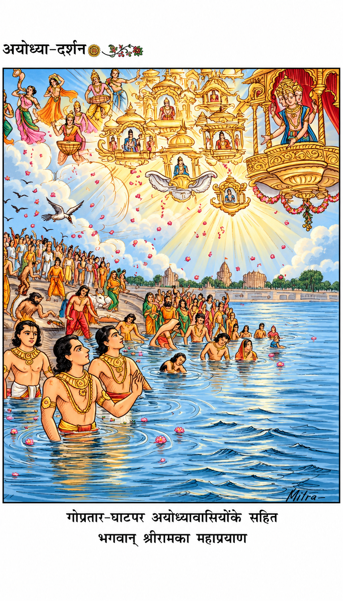
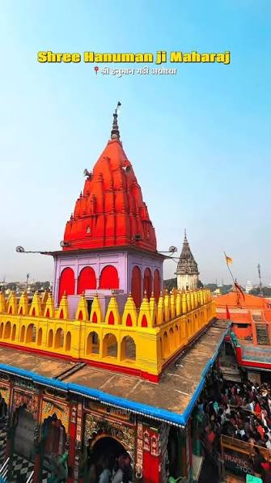
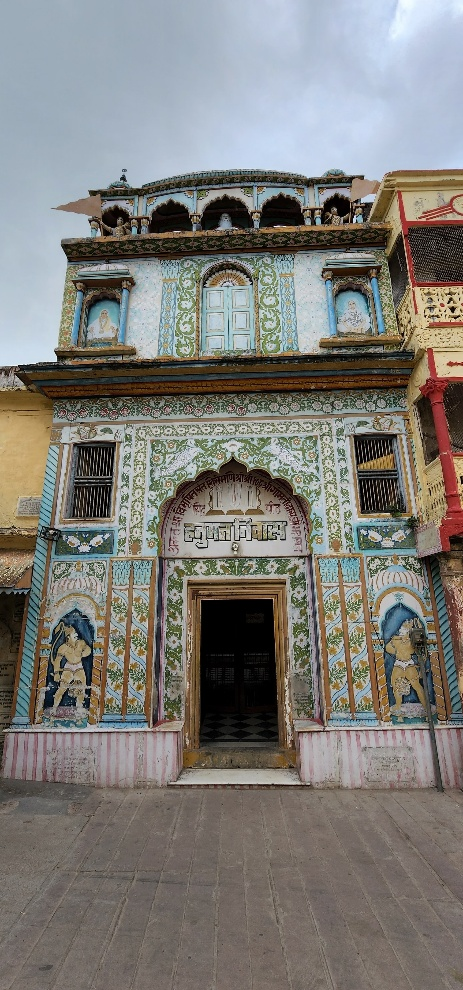
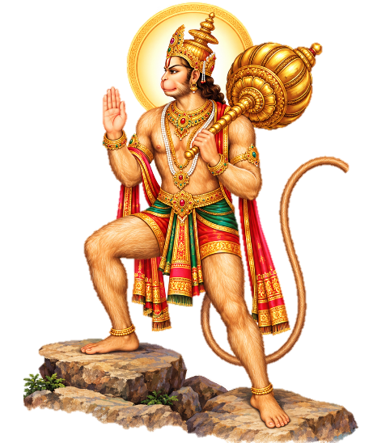
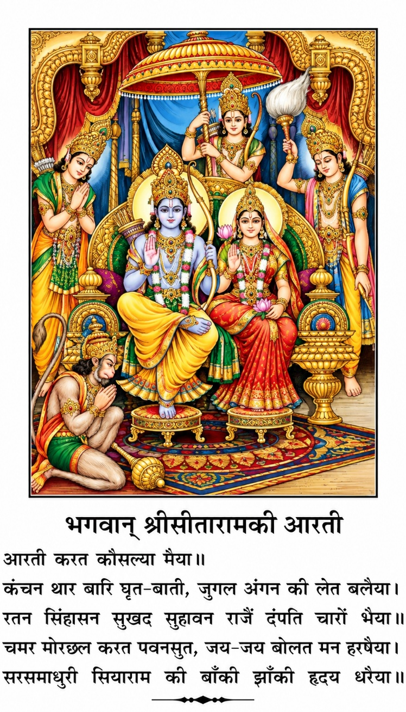

॥ श्रीहरिः॥
अयोध्या–दर्शन
[ अयोध्याका सचित्र इतिहास, भौगोलिक स्थिति, पौराणिक आख्यान, सांस्कृतिक विवरण, पर्वोत्सव, यातायात एवं ठहरनेके स्थान इत्यादिका सारगर्भित परिचय ]
त्वमेव माता च पिता त्वमेव
त्वमेव बन्धुश्च सखा त्वमेव।
त्वमेव विद्या द्रविणं त्वमेव
त्वमेव सर्वं मम देवदेव॥
गीताप्रेस, गोरखपुर
निवेदन
अयोध्या मथुरा माया काशी काञ्ची ह्यवन्तिका।
पुरी द्वारावती चैव सप्तैता मोक्षदायिकाः॥
उपर्युक्त सात पुरियाँ मोक्षदायिका इसलिये कही गयी हैं कि इनमें मृत्यु होनेसे प्राणीमात्रकी मुक्ति निश्चित हो जाती है। सात पुरियोंमें प्रथम पुरी – श्रीअयोध्याजीकी महिमा अपार है। मुक्तिदायिनी अयोध्यापुरीका अप्रतिम माहात्म्य आर्षग्रन्थों विशेषकर विभिन्न पुराणोंमें प्राप्त होता है। इनमें भी स्कन्दपुराणके द्वितीय वैष्णवखण्डका अयोध्या–माहात्म्य, रुद्रयामल–तन्त्रका अयोध्याखण्ड विशिष्ट है। इसके अतिरिक्त श्रीवाल्मीकीय रामायण, श्रीरामचरितमानसके वर्णन भी उल्लेखनीय हैं।
भगवान् श्रीराम भारतवासियोंके ही नहीं मानवमात्रके आदर्श हैं। श्रीरामको परब्रह्मका अवतार माना गया है, जो मर्यादाओंकी रक्षाके लिये अवतरित हुए। सदाचार–संस्थापन और धर्म–रक्षण ही उनका मुख्य उद्देश्य था। वास्तवमें श्रीरामका जीवन ही भारतीय संस्कृतिका दर्पण है। इसी कारण भगवान् श्रीरामकी कथाका प्रचार–प्रसार और विस्तार भारतीय जनमानसमें सर्वाधिकरूपसे होता रहा है। उनके जीवन–चरित्रकी घटनाएँ, लीलास्थल, लक्षण और उनके चिह्न; जिनका वर्णन शास्त्रोंमें मिलता है, वे आज भी उपलब्ध हैं। इसीलिये भगवान् श्रीरामका अवतार, उनकी लीलाएँ और उनकी कथाएँ कपोल–कल्पित नहीं, बल्कि वास्तविक हैं। श्रीराम भारतीय संस्कृति एवं भारतीय जनमानसकी सर्वाधिक श्रद्धाके आधार हैं और भारतवासियोंके जीवन हैं। राष्ट्रपिता महात्मा गाँधीने भी स्वराज्यके बाद इस देशमें रामराज्यकी स्थापनाकी ही संकल्पना की थी– यह बात सर्वविदित है।
अयोध्यामें पिछले पाँच सौ वर्षोंसे श्रीरामजन्मभूमिका विवाद चलता आ रहा था, जो भगवत्कृपासे भारतके सर्वोच्च न्यायालयद्वारा दिये गये ऐतिहासिक निर्णयके साथ समाप्त हो गया। सर्वोच्च न्यायालयने अपने १०४५ पृष्ठोंके निर्णयमें सरकारको यह भी निर्देश दिया कि वह तीन माहमें एक ट्रस्ट बनाकर उसके माध्यमसे वहाँ मन्दिर–निर्माणकी प्रक्रियाको आगे बढ़ाये।
सरकारने भी अपने दृढ़संकल्पका परिचय देते हुए उस प्रक्रियाको शीघ्रातिशीघ्र पूर्ण करनेकी दिशामें कदम बढ़ाते हुए न्यायालयके निर्देशानुसार एक व्यवस्थित ट्रस्ट बनाकर प्रक्रियाको आगे बढ़ाया है। माननीय प्रधानमन्त्री श्रीनरेन्द्रजी मोदीके हाथों ५ अगस्त २०२० ई० को नवीन भव्य मन्दिरका शिलान्यास कार्यक्रम भी समारोहपूर्वक निर्विघ्न सम्पन्न हो गया। मन्दिरका निर्माण कार्य द्रुतगतिसे जारी है, जिससे पुण्यमयी जन्मभूमिपर शीघ्र ही मर्यादापुरुषोत्तम श्रीराघवेन्द्र–सरकारके भव्य मन्दिर बननेका मार्ग प्रशस्त हो गया। अब सभीको उस क्षणकी प्रतीक्षा है, जब उस नवनिर्मित पावन धाममें विराजित रामललाके दर्शनोंका सौभाग्य प्राप्त होगा।
बहुत समयसे अयोध्यापर एक पुस्तक प्रकाशित करनेकी माँग प्रेमी पाठकोंद्वारा की जा रही थी। इधर सर्वोच्च न्यायालयके आदेशके बाद श्रीरामजन्मभूमिपर भव्य मन्दिरके निर्माणका मार्ग प्रशस्त होनेसे अयोध्याविषयक पुस्तकोको प्रकाशित करनेके लिये पाठकोंके विशेष आग्रह प्राप्त हो रहे हैं। इस सन्दर्भमें गीताप्रेस–द्वारा ‘अयोध्या–माहात्म्य’ नामक एक सानुवाद बृहद् ग्रन्थ शीघ्र प्रकाशित हो रहा है। साथ ही सामान्य तीर्थयात्रियों एवं प्रेमी पाठकोंके आग्रहको ध्यान में रखते हुए ‘अयोध्या–दर्शन’ नामक यह पुस्तक प्रकाशित की जा रही है। इसमें जहाँ एक ओर अयोध्याके शास्त्रीय महत्त्व एवं ऐतिहासिक विवरणोंको देनेका प्रयास किया गया है, वहीं साथमें अयोध्याके प्रमुख दर्शनीय तीर्थस्थानोंका संक्षिप्त परिचय भी दिया गया है। पुस्तक अनेक सुन्दर रंगीन चित्रोंसे युक्त है। पुस्तकमें अयोध्याप्रेमी शोधार्थियों और विद्वानोंके लिये कुछ विशेष उपयोगी गम्भीर लेखोंको भी स्थान दिया गया है तथा अन्तमें अयोध्याके वैरागी सन्तों, भक्तों एवं तीर्थयात्रियोंके बीच परम्परागत रूपसे प्रचलित स्तुतियों आदिका संकलन भी किया गया है।
आशा है, इस सुरुचिपूर्ण उपयोगी पुस्तकसे सुधी पाठक विशेष लाभ उठायेंगे।
— प्रेमप्रकाश लक्कड़
अयोध्या–दर्शन
(श्रीराधेश्यामजी खेमका)
भगवान् श्रीरामकी यह उक्ति कितनी मार्मिक है– ‘जननी और जन्मभूमि स्वर्गसे भी श्रेष्ठ हैं।’ शास्त्रोंमें कहा गया है कि स्वर्गमें सर्वाधिक सुखभोगकी प्राप्ति होती है, जो अपने शुभकर्मोंके अनुसार प्राणीको मिलता है। अशुभ कर्मोंके अनुसार अर्थात् पाप करनेपर नरककी प्राप्ति होती है, जहाँ अत्यधिक दुःख और यातनाएँ भोगनी पड़ती हैं। इस प्रकार पुण्यका फल ही स्वर्गलोककी प्राप्ति है, जिसके लिये सब लालायित रहते हैं; पर जन्मभूमि और जन्म देनेवाली जननीका सान्निध्य प्राप्त होनेपर स्वर्गका यह सर्वोत्कृष्ट सुख भी तुच्छ जँचता है।
अपने आराध्य भगवान् श्रीरामचन्द्रजीकी जन्मभूमिके मन्दिरमें वर्षोंसे ताला लगा था, हम प्रवेशतक नहीं कर सकते थे, भगवत्कृपासे अब यह भूमि मुक्त हुई। करोड़ों हिन्दुओंकी आस्थाकी प्रतीक अयोध्यास्थित श्रीरामजन्मभूमिसे सम्बन्धित सदियों पुराना विवाद भारतके सर्वोच्च न्यायालयद्वारा ९ नवम्बर २०१९ को दिये गये ऐतिहासिक निर्णयके साथ समाप्त हो गया। इस अवसरपर भारतवासियोंका आनन्दविभोर होना स्वाभाविक है, क्योंकि अब वे अपने आराध्यकी जन्मस्थलीपर जाकर दर्शन–पूजनके साथ–साथ दिव्य आनन्दानुभूति प्राप्त कर सकते हैं। वस्तुतः यह उस सत्यकी विजय है, जिसे पहले विधर्मियोंने ध्वस्त करनेका कुत्सित प्रयास किया। तदनन्तर दासताके अन्धकारयुगीन कालखण्डमें इसे पुनः मण्डित न किया जा सका। यह उस सत्यकी विजय है, जिसे कुछ संगठित शक्तियोंने अपने निहित स्वार्थोंके लिये जटिल बनाकर हल नहीं होने दिया, पर सत्यकी सदैव विजय होती है, असत्यकी नहीं– ‘सत्यमेव जयति नानृतम्’ (मुण्डकोपनिषद् ३।१।६)– सत्य तो स्वयं प्रकाशित है, उसे षड्यन्त्रपूर्वक कबतक झुठलाया जा सकता है ?
श्रीराम भारतीय संस्कृतिके प्रतीक हैं और भारतवासियोंके जीवन हैं। ‘श्रीराम–जन्मभूमि’ वास्तवमें कोई मन्दिर–मस्जिदका विवाद नहीं था। कारण, मन्दिर तो कहीं भी बनाया जा सकता था, इसी तरह मस्जिद भी कहीं भी बनायी जा सकती थी, परंतु जन्मभूमिका स्थान बदला नहीं जा सकता। वह भी ऐसी जन्मभूमि जो साक्षात् परब्रह्म परमात्माके अवतारकी भूमि हो।
भगवान् श्रीराम पूर्णब्रह्म साक्षात् परमात्माके रूपमें अपनी सम्पूर्ण कलाओंके साथ इस पवित्र भूमिपर अवतरित हुए थे। यह जन्मभूमि करोड़ों–करोड़ देशवासियोंका दिव्य स्मृति–स्थल है, जो अति पवित्र है, जहाँ थोड़ी साधना और उपासना करनेपर भी सिद्धि प्राप्त हो जाती है और जिसके दर्शनमात्रसे अमोघ फलकी प्राप्ति होती है। यहाँतक कि जन्म–मरणके बन्धनसे मुक्ति भी मिलती है। यह बात मनगढ़ंत या काल्पनिक नहीं, बल्कि शास्त्रकी बात है। पुराणोंमें इसके संदर्भ मिलते हैं। ‘भगवान् श्रीरामकी जन्मभूमि यही है’, यह भी इन पुराणोंके वचनोंसे सिद्ध होता है। स्कन्दपुराणके वैष्णवखण्डके अयोध्या–माहात्म्य आदिके कुछ वचन हम यहाँ उद्धृत करते हैं, जिनसे स्वतः सब स्पष्ट हो जायगा –
तस्मात् स्थानत ऐशाने रामजन्म प्रवर्तते।
जन्मस्थानमिदं प्रोक्तं मोक्षादिफलसाधनम्॥
‘(विघ्नेश्वरके) स्थानसे ईशान (कोण) में रामजन्म–स्थान है। यह मोक्ष आदि सभी फलोंको देनेवाला कहा गया है।’
विघ्नेश्वरात् पूर्वभागे वासिष्ठादुत्तरे तथा।
लोमशात् पश्चिमे भागे जन्मस्थानं ततः स्मृतम्॥
‘विघ्नेश्वरसे पूर्वमें तथा वसिष्ठ–स्थानसे उत्तरमें, लोमशस्थानसे पश्चिम दिशामें रामजन्म–स्थान है।’
यदृष्ट्वा च मनुष्यस्य गर्भवासजयो भवेत्।
विना दानेन तपसा विना तीर्थैर्विना मखैः॥
‘रामजन्म–भूमिके दर्शनमात्रसे बिना दानके, बिना तपके, बिना तीर्थयात्राके तथा बिना यज्ञ किये ही मनुष्यकी मुक्ति हो जाती है और फिर गर्भमें नहीं आना पड़ता।’
कपिलागोसहस्त्राणि यो ददाति दिने दिने।
तत्फलं समवाप्नोति जन्मभूमेः प्रदर्शनात्॥
‘प्रतिदिन हजारों कपिला गौके दानसे जो फल मिलता है, वही फल जन्मभूमिके दर्शनमात्रसे मिल जाता है।’
आश्रमे वसतां पुंसां तापसानां च यत्फलम्।
राजसूयसहस्त्राणि प्रतिवर्षाग्निहोत्रतः॥
नियमस्थं नरं दृष्ट्वा जन्मस्थाने विशेषतः।
मातापित्रोर्गुरूणां च भक्तिमुद्वहतां सताम्॥
तत्फलं समवाप्नोति जन्मभूमेः प्रदर्शनात्॥
‘आश्रममें निवास करनेवाले तपस्वीजनों, यावज्जीवन अग्निहोत्र करनेवालों तथा हजारों राजसूय यज्ञ करनेवालोंको जो फल मिलता है, माता–पिता और गुरुकी सदा भक्ति करनेवालों तथा यम–नियमादि व्रतोंके पालनमें तत्पर संयमी सत्पुरुषोंके दर्शनसे जो फल मिलता है, वही फल जन्मभूमिके दर्शनमात्रसे मिल जाता है।’
उपर्युक्त वचनोंसे यह बात सिद्ध हो जाती है कि भगवान् श्रीरामकी जन्मभूमिकी अमित महिमा है।
श्रीविष्णुपुराणके अनुसार स्वर्गलोकमें देवगण यह गीत गाते हैं कि वे धन्य हैं, जिनका जन्म भारतवर्षमें होता है –
गायन्ति देवाः किल गीतकानि
धन्यास्तु ते भारतभूमिभागे।
वे यह गीत क्यों गाते हैं– ‘इसलिये कि भारतकी इस पवित्र धरापर आज भी ऐसे दिव्य स्थल हैं, जो भगवान्की जन्मभूमि एवं लीलाभूमि हैं। ऋषि–महर्षि एवं शास्त्रोंके अनुसार साक्षात् परब्रह्म परमात्माका अवतरण भारतकी इस पवित्र भूमिपर होता है, जहाँ वे जगत्के प्राणियोंके उद्धारके लिये मनुष्यरूपमें जन्म लेते हैं, क्रीड़ा करते हैं और अपनी लीलाओंसे सबको सुखानुभूति प्रदान करते हैं। भारतवासियोंके लिये यह स्थल अत्यन्त पवित्र है, जहाँ जाकर दर्शन–पूजनकर व्यक्ति स्वयंको कृतकृत्य मानता है।’
एक बार किसीने ब्रह्मलीन स्वामी श्रीकरपात्रीजी महाराजसे कहा कि ‘भारतीय संस्कृति और सनातन धर्मके अनेक ग्रन्थ हैं। कितने तो वेद हैं, उपनिषद् हैं, पुराण, उपपुराण और स्मृतियाँ हैं, इन सबको एक साथ कैसे पढ़ा जा सकता है ? कोई एक ग्रन्थ ऐसा हो जिसे पढ़नेपर पूरी भारतीय संस्कृतिका दिग्दर्शन हो जाय।’ इसपर श्रीस्वामीजीने उत्तर दिया कि ‘किसी एक ग्रन्थमें सनातन धर्म और भारतीय संस्कृतिका दर्शन करना हो तो भगवान् रामकी कथा ‘श्रीरामचरितमानस’ पढ़ लो। इस एक पुस्तकसे ही भारतकी संस्कृति समझमें आ जायगी – उसका ज्ञान हो जायगा।’ यह इस ग्रन्थकी महिमा नहीं बल्कि भगवान् श्रीरामके चरित्रकी महिमा है।
कहते हैं कि भगवान्की तरह भगवल्लोक और भगवद्धाम भी नित्य शाश्वत और दिव्यानन्दसे युक्त हैं। इसलिये भक्तगण भगवद्धाममें ही निरन्तर निवास करना चाहते हैं, अन्यत्र कहीं रहना पसन्द नहीं करते। ‘श्रीरामचरितमानस’ में स्वयं भगवान् श्रीराम अपनी जन्मभूमिकी महिमाका वर्णन करते हुए कहते हैं –
जद्यपि सब बैकुंठ बखाना। बेद पुरान बिदित जगु जाना॥
अवधपुरी सम प्रिय नहि सोऊ। यह प्रसंग जानइ कोउ कोऊ॥
जन्मभूमि मम पुरी सुहावनि। उत्तर दिसि बह सरजू पावनि॥
जा मज्जन ते बिनहिं प्रयासा। मम समीप नर पावहिं बासा॥
अति प्रिय मोहि इहाँ के बासी। मम धामदा पुरी सुखरासी॥
जन्मभूमि श्रीरामको अतिप्रिय है और श्रीराम हमारे आराध्य हैं। अतः हम सभी भारतवासियोंका और इस देशके कर्णधारोंका यह परम कर्तव्य है कि इस प्राचीन मूल स्थानको सुरक्षित रखते हुए शास्त्रीय विधिसे इसकी सेवा–पूजाकी व्यवस्था करें।
श्रीरामजन्मभूमिका शास्त्रगत माहात्म्य
[ श्रीरामजन्मभूमि – अयोध्याके विषयमें पुराणोंकी मान्यता ]
त्रेतायुगमें भगवान् श्रीरामका प्राकट्य श्रीअयोध्याजीमें हुआ, यह निर्विवाद सत्य है। श्रीरामजन्मभूमिका स्थान कहाँपर है ? इसके विषयमें पुराणों और इतिहासोंमें निश्चित संकेत प्राप्त होते हैं। भारतीय आस्थाके प्रतीक पुराण और इतिहास सर्वमान्य प्राचीन ग्रन्थ हैं, जिनकी मान्यता सर्वोपरि है। स्कन्दपुराणके द्वितीय वैष्णवखण्डके अयोध्या–माहात्म्यमें लिखा है कि ‘सरयू नदीके तटपर अयोध्याकी रक्षाके लिये नियुक्त योद्धा पिण्डारकका स्थान है। पिण्डारकस्थानसे पश्चिम दिशामें भगवान् विघ्नेशका स्थान है। विघ्नेशसे ईशान–कोणमें श्रीरामजीका जन्मस्थान है, जहाँ नवरात्रोंमें श्रीरामजीका दर्शन करनेसे अपूर्व पुण्यकी प्राप्ति होती है।’
स्कन्दपुराणके द्वितीय वैष्णवखण्डके कतिपय श्लोक अर्थसहित अविकल रूपमें यहाँ प्रस्तुत किये जा रहे हैं–
सरयूसलिले स्नात्वा पिण्डारकं च पूजयेत्।
पापिनां मोहकर्तारं मतिदं कृतिनां सदा॥
‘सरयूजीके जलमें स्नान करके पिण्डारकका पूजन करना चाहिये। ये पिण्डारक पापियोंके लिये मोह उत्पन्न करनेवाले और पुण्यात्माओंके लिये सदा ही विवेक प्रदान करनेवाले हैं।’
तस्य यात्रा विधातव्या सपुष्या नवरात्रिषु।
तत्पश्चिमदिशाभागे विघ्नेशं किल पूजयेत्॥
यस्य दर्शनतो नृणां विघ्नलेशो न विद्यते।
तस्माद् विघ्नेश्वरः पूज्यः सर्वकामफलप्रदः॥
‘इनकी यात्रा नवरात्रमें (चैत्रमासके शुक्लपक्षमें) जिस दिन पुष्य नक्षत्र हो (यह प्रायः नवमी तिथिको पड़ता है), उस दिन करनी चाहिये। पिण्डारकसे पश्चिम दिशामें भगवान् विघ्नेश हैं, इनकी पूजा करनी चाहिये। विघ्नेशका दर्शन करनेसे मानवके समस्त विघ्न दूर होते हैं– विघ्न लेशमात्र भी बाधा नहीं पहुँचा सकते। विघ्नेश्वर सभी प्रकारका वाञ्छित फल (भोग) देनेवाले हैं, अतः उनका पूजन करना चाहिये।’
तस्मात् स्थानत ऐशाने रामजन्म प्रवर्तते।
जन्मस्थानमिदं प्रोक्तं मोक्षादिफलसाधनम्॥
‘विघ्नेश्वरके स्थानसे ईशान (कोण) में रामजन्म–स्थान है। यह मोक्ष आदि सभी फलोंको देनेवाला कहा गया है।’
विघ्नेश्वरात् पूर्वभागे वासिष्ठादुत्तरे तथा।
लोमशात् पश्चिमे भागे जन्मस्थानं ततः स्मृतम्॥
‘विघ्नेश्वरसे पूर्वमें तथा वसिष्ठ–स्थानसे उत्तरमें, लोमशस्थानसे पश्चिम दिशामें रामजन्म–स्थान है।’
यदृष्ट्वा च मनुष्यस्य गर्भवासजयो भवेत्।
विना दानेन तपसा विना तीर्थैर्विना मखैः॥
‘रामजन्म–भूमिके दर्शनमात्रसे बिना दानके, बिना तपके, बिना तीर्थयात्राके तथा बिना यज्ञ किये ही मनुष्यकी मुक्ति हो जाती है, उसे गर्भवासकी प्राप्ति नहीं होती।’
नवमीदिवसे प्राप्ते व्रतधारी हि मानवः।
स्नानदानप्रभावेण मुच्यते जन्मबन्धनात्॥
‘रामनवमीके दिन रामनवमी–व्रत करनेवाला पुरुष स्नान, दान और तपके प्रभावसे जन्म–मरणके बन्धनसे छुटकारा पा जाता है।’
कपिलागोसहस्त्राणि यो ददाति दिने दिने।
तत्फलं समवाप्नोति जन्मभूमेः प्रदर्शनात्॥
‘प्रतिदिन हजारों कपिला गौके दानसे जो फल मिलता है, वही फल जन्मभूमिके दर्शनमात्रसे मिल जाता है।’
आश्रमे वसतां पुंसां तापसानां च यत्फलम्।
राजसूयसहस्त्राणि प्रतिवर्षाग्निहोत्रतः॥
नियमस्थं नरं दृष्ट्वा जन्मस्थाने विशेषतः।
मातापित्रोर्गुरूणां च भक्तिमुद्वहतां सताम्॥
तत्फलं समवाप्नोति जन्मभूमेः प्रदर्शनात्॥
(स्कन्दपुराण–वैष्णवखण्ड, अयो० १०।१५–२५)
‘आश्रममें निवास करनेवाले तपस्वीजनोंको जो फल मिलता है, यावज्जीवन अग्निहोत्र करनेवालोंको जो फल मिलता है, हजारों राजसूय यज्ञ करनेवालोंको जो फल मिलता है, माता–पिता और गुरुकी सदा भक्ति करनेवालों तथा यम–नियमादि व्रतोंके पालनमें तत्पर संयमी सत्पुरुषोंके दर्शनसे जो फल मिलता है, वही फल जन्मभूमिके दर्शनमात्रसे मिल जाता है।’
श्रीरामभद्र धर्म और ब्रह्मके मूर्तिमान् स्वरूप हैं, तभी उन्हें मर्यादापुरुषोत्तम कहते हैं। वे मानव–मात्रके परम आदर्श हैं। रामराज्य और धर्मराज्यकी स्थापना उन्हें ऐतिहासिक माननेपर ही सम्भव है।
[ प्रस्तुति – परमहंस स्वामी श्रीवामदेवजी महाराज ]
श्रीअयोध्या–महिमा
जिनके परत मुनि–पतिनी पतित तरी
जानि महिमा जो सिय छुवत सकानी है।
कहै ‘रतनाकर’ निषाद जिन जोग जानि
धोए बिनु धूरि नाव निकट न आनी है॥
ध्यावैं जिन्हें ईस औ फनीस गुन गावैं सदा,
नावैं सीस निखिल मुनीस–गन ग्यानी हैं।
तिन पद पावन की परस–प्रभाव पूँजी
अवधपुरी की रज–रज मैं समानी है॥
— महाकवि रत्नाकर
श्रीअयोध्या – परिचय एवं दर्शन
अयोध्या–माहात्म्य
जद्यपि सब बैकुंठ बखाना। बेद पुरान बिदित जगु जाना॥
अवधपुरी सम प्रिय नहिं सोऊ। यह प्रसंग जानइ कोउ कोऊ॥
जन्मभूमि मम पुरी सुहावनि। उत्तर दिसि बह सरजू पावनि॥
जा मज्जन ते बिनहिं प्रयासा। मम समीप नर पावहिं बासा॥
अति प्रिय मोहि इहाँ के बासी। मम धामदा पुरी सुख रासी॥
(श्रीरामचरितमानस ७।४।३–७)
भगवान् श्रीराम सुग्रीव, विभीषण आदि मित्रोंसे श्रीअयोध्यापुरीकी महिमा बताते हुए कहते हैं – यद्यपि सबने वैकुण्ठकी बड़ाई की है— यह वेद–पुराणोंमें प्रसिद्ध है और जगत् जानता है, परंतु अवधपुरीके समान मुझे वह भी प्रिय नहीं है। यह बात कोई विरले ही जानते हैं। यह सुहावनी पुरी मेरी जन्मभूमि है, इसके उत्तर दिशामें जीवोंको पवित्र करनेवाली सरयू नदी बहती है, जिसमें स्नान करनेसे मनुष्य बिना ही परिश्रम सामीप्यमुक्ति पा जाते हैं।
अयोध्याकी महिमा बताते हुए काकभुशुण्डिजी गरुड़जीसे कहते हैं– अवधका प्रभाव जीव तभी जान पाता है, जब हाथमें धनुष धारण करनेवाले श्रीरामजी उसके हृदयमें निवास करते हैं। किसी भी जन्ममें जो कोई भी अयोध्यामें बस जाता है, वह अवश्य ही श्रीरामजीके परायण हो जायगा।
अवध प्रभाव जान तब प्रानी। जब उर बसहिं रामु धनुपानी॥
कवनेहुँ जन्म अवध बस जोई। राम परायन सो परि होई॥
अयोध्यापुरी भगवान्के वामपादांगुष्ठसे उद्भूता पवित्र सरिता सरयूके दक्षिण तटपर बसी है। सर्वप्रथम मनुने स्वयं इस पुरीको बसाया था –
‘मनुना मानवेन्द्रेण सा पुरी निर्मिता स्वयम्।’
(वाल्मी० बाल० ५। ६ तथा रुद्रयामलतन्त्र)
‘स्कन्दपुराण’ के अनुसार यह सुदर्शनचक्रपर बसी है। ‘भूतशुद्धितत्त्व’ के अनुसार यह श्रीरामभद्रके धनुषाग्रपर स्थित है– ‘श्रीरामधनुषाग्रस्था अयोध्या सा महापुरी।’ ‘अयोध्या’ शब्दका निर्वचन करता हुआ स्कन्दपुराण कहता है– "अ’कार ब्रह्मा है, ‘य’कार विष्णु है तथा ‘ध’कार रुद्रका स्वरूप है। अतएव ‘अयोध्या’ पितामह ब्रह्मा, श्रीविष्णु तथा भगवान् शंकर– इन तीनोंका समन्वित रूप है। समस्त उपपातकोंके साथ ब्रह्महत्यादि महापातक भी इससे युद्ध नहीं कर सकते, इसलिये इसे अयोध्या कहते हैं।"
इसका मान सहस्रधारातीर्थसे एक योजन पूर्व, सरयूसे एक योजन दक्षिण, सम नामक स्थानसे एक योजन पश्चिम तथा तमसा नदीसे एक योजन उत्तरतक है। (स्कन्दपुराण–वैष्णवखण्ड अयो० माहा० १।६४–६५)। पहले ब्रह्माजीने अयोध्याकी यात्रा की थी और अपने नामसे एक कुण्ड बनाया था, जो ब्रह्मकुण्ड नामसे विख्यात है। भगवती सीताद्वारा निर्मित एक सीताकुण्ड है, जिसे भगवान् श्रीरामने वर देकर समस्त कामपूरक बनाया। उसमें स्नान करनेसे मनुष्य सब पापोंसे मुक्त हो जाता है। ब्रह्मकुण्डसे पूर्वोत्तर ऋणमोचनतीर्थ (सरयूमें) है। यहाँ लोमशजीने विधिपूर्वक स्नान किया था। सहस्रधारासे पूर्व ६३६ धनुष (१२७२ गज अथवा १.१६ कि०मी०) तक ‘स्वर्गद्वार’ कहलाता है। यहाँ जो जप, तप, हवन, दर्शन, दान, ध्यान, अध्ययन आदि किया जाता है, वह सब अक्षय होता है –
सहस्त्रधारामारभ्य पूर्वतः सरयूजले।
षट्त्रिंशदधिका प्रोक्ता धनुषां षट्शती मितिः॥
स्वर्गद्वारस्य विस्तारः पुराणज्ञैर्विशारदैः।
स्वर्गद्वारे परा सिद्धिः स्वर्गद्वारे परा गतिः॥
जप्तं दत्तं हुतं दृष्टं तपस्तप्तं कृतं च यत्।
ध्यानमध्ययनं सर्वं दानं भवति चाक्षयम्॥
(स्क० वै०, अयो० ३।६, ७, १४)
यहाँ चन्द्रहरि, गुप्तहरि, चक्रहरि, सम्भेद आदि अन्य कई तीर्थ हैं। जहाँ समस्त अवधवासियोंके साथ भगवान् साकेतलोकमें – वैष्णवतेजमें प्रविष्ट हुए थे, वह पुण्यसलिला सरयूमें स्थित गोप्रतार–तीर्थ है। यह अयोध्यासे पश्चिम है। वहाँ जो स्नान करता है, वह निश्चय ही योगिदुर्लभ श्रीरामधामको प्राप्त होता है –
गोप्रतारे नरो विद्वान् योऽपि स्नाति सुनिश्चितः।
विशत्यसौ परं स्थानं योगिनामपि दुर्लभम्॥
(६। १७९)
सबको तारनेवाला होनेसे ही यह गोप्रतारक कहलाया। साक्षात् तीर्थराज प्रयाग भी यहाँ सब पापोंको धोनेके लिये कार्तिकमासमें स्नान करने आते हैं–
‘यत्र प्रयागराजोऽपि स्नातुमायाति कार्तिके।’
‘शुद्धयर्थ साधुकामोऽसौ प्रयागो मुनिसत्तम॥’
(६।१८१–१८२)
सरयूमें जहाँ श्रीकृष्णकी पटरानी रुक्मिणीजीने स्नान किया था, वहाँ रुक्मिणीकुण्ड है। उससे ईशानकोणमें बृहस्पतिकुण्ड है तथा उसके ईशानकोणमें क्षीरोदककुण्ड है, जहाँ महाराज दशरथने पुत्रेष्टियज्ञ किया था; उससे पश्चिमोत्तरमें वसिष्ठकुण्ड है। अन्य भी उर्वशीकुण्ड आदि कई तीर्थ स्कन्दपुराण तथा रुद्रयामलोक्त अयोध्या–माहात्म्यमें वर्णित हैं। कालक्रमसे इनमें कुछ लुप्त तथा परिवर्तित भी पाये जाते हैं।
अयोध्याका संक्षिप्त प्राचीन इतिहास
सप्तपुरियोंमें प्रथम पुरी अयोध्या है। मर्यादापुरुषोत्तम भगवान् श्रीरामके भी पूर्ववर्ती सूर्यवंशी राजाओंकी यह राजधानी रही है। इक्ष्वाकुसे श्रीरघुनाथजीतक सभी चक्रवर्ती नरेशोंने अयोध्याके सिंहासनको विभूषित किया है। भगवान् श्रीरामकी अवतार–भूमि होकर तो अयोध्या साकेत हो गयी, परंतु मर्यादापुरुषोत्तमके साथ अयोध्याके कीट–पतंगतक उनके दिव्यधाममें चले गये, इससे पहली बार त्रेतामें ही अयोध्या उजड़ गयी। श्रीरामके पुत्र कुशने इसे फिर बसाया।
अयोध्याका प्राचीन इतिहास बतलाता है कि वर्तमान अयोध्या महाराज विक्रमादित्यकी बसायी है। महाराज विक्रमादित्य देशाटन करते हुए संयोगवश यहाँ सरयूकिनारे पहुँचे थे और यहाँ उनकी सेनाने शिविर डाला था। उस समय यहाँ वन था। कोई प्राचीन तीर्थ–चिह्न यहाँ नहीं था। महाराज विक्रमादित्यको इस भूमिमें कुछ चमत्कार दीख पड़ा। उन्होंने खोज प्रारम्भ की और पासके योगसिद्ध संतोंकी कृपासे उन्हें ज्ञात हुआ कि यह श्रीअवधकी भूमि है। उन संतोंके निर्देशसे महाराजने यहाँ भगवल्लीलास्थलीको जानकर मन्दिर, सरोवर, कूप आदि बनवाये।
मथुराके समान अयोध्या भी आक्रमणकारियोंका बार–बार आखेट होती रही है। बार–बार आततायियोंने इस पावन पुरीको ध्वस्त किया। इस प्रकार अब अयोध्यामें प्राचीनताके नामपर केवल भूमि और सरयूजी बच रही हैं। अवश्य ही भगवल्लीला–स्थलीके स्थान वे ही हैं।
अयोध्याका मार्ग
अयोध्या लखनऊसे लगभग १४१ कि०मी० और काशीसे १८८ कि०मी० है। यह नगर सरयू (घाघरा) के दक्षिण तटपर बसा है। उत्तर रेलवेपर अयोध्या–स्टेशन है। मुगलसराय, बनारस, लखनऊसे यहाँ सीधी गाड़ियाँ आती हैं। स्टेशनसे सरयूजी लगभग ५ कि०मी० दूर हैं और मुख्य मन्दिर कनकभवन लगभग ३ कि०मी० दूर है। पूर्वोत्तर रेलवेके गोरखपुर, बस्ती, मनकापुर और गोंडा स्टेशनोंसे भी अयोध्याके लिये सीधी गाड़ियाँ मिलती हैं।
बनारस, लखनऊ, प्रयाग, गोरखपुर आदि नगरोंसे अयोध्या पक्की सड़कोंसे सम्बद्ध है।
विभिन्न स्थानोंसे अयोध्याकी दूरी
लखनऊसे अयोध्या – १४१ कि०मी० (रेलमार्ग)
वाराणसीसे अयोध्या – १८८ कि०मी० (रेलमार्ग)
प्रयागराजसे अयोध्या – १६५ कि०मी० (रेलमार्ग)
वाराणसी (बाबतपुर हवाईअड्डा)–से अयोध्या – १८० कि०मी० (सड़कमार्ग)
लखनऊ (अमौसी हवाईअड्डा)–से अयोध्या – १४२ कि०मी० (सड़कमार्ग)
फैजाबादसे अयोध्या – ८ कि०मी० (सड़कमार्ग)
अयोध्यासे नन्दीग्राम – २२ कि०मी०
अयोध्यासे सूर्यकुण्ड – ६ कि०मी०
अयोध्यामें ठहरनेके स्थान
अयोध्यामें यात्री प्रायः साधुओंके मठोंमें ठहरते हैं। प्रायः सभी साधु–स्थानोंमें यात्रियोंके ठहरनेकी व्यवस्था है और अयोध्या तो साधुओंका नगर ही है। नगरमें अनेकों धर्मशालाएँ आदि भी हैं, जिनमेंसे कुछ नाम इस प्रकार हैं–
(१) मानसभवन ट्रस्ट, रामघाट चौराहा
(२) जानकीमहल ट्रस्ट, वासुदेवघाट
(३) गुजरात भवन, निकट हनुमानगढ़ी
(४) हनुमानबाग, वासुदेवघाट
(५) यात्री निवास, नयाघाट
(६) रैनबसेरा, नयाघाट
(७) पथिक निवास, निकट रेलवे स्टेशन
(८) बिड़ला धर्मशाला, निकट पुराना बस स्टेशन
(९) जैन धर्मशाला, रायगंज
(१०) श्यामसुन्दर धर्मशाला, रीडगंज
(११) श्रीरामदेव दामोदरदास स्मृति भवन, फैजाबाद
अयोध्याके दर्शनीय स्थान
अयोध्यामें सरयू–किनारे कई सुन्दर पक्के घाट बने हुए हैं। किन्तु सरयूजीकी धारा अब कुछ घाटोंसे दूर चली गयी है। पश्चिमसे पूरब चलें तो घाटोंका यह क्रम मिलेगा – ऋणमोचनघाट, सहस्त्रधारा, लक्ष्मणघाट, स्वर्गद्वार, गंगामहल, शिवालाघाट, जटाईघाट, अहल्याबाईघाट, धौरहराघाट, रूपकलाघाट, नयाघाट, जानकीघाट और रामघाट।
अयोध्या मन्दिरोंका नगर है। अयोध्यामें कुल लगभग सात हजार मन्दिर* हैं। अधिकांश मन्दिर घाटोंके पास ही स्थित हैं।
लक्ष्मणघाट – यहाँके मन्दिरमें लक्ष्मणजीकी ५ फुट ऊँची मूर्ति है। यह मूर्ति सामने कुण्डमें पायी गयी थी। कहा जाता है कि यहींसे श्रीलक्ष्मणजी परमधाम पधारे थे। लक्ष्मणघाटपर ही १८६८ ई० में स्वामी युगलानन्यशरणजीद्वारा स्थापित श्रीलक्ष्मणकिला अत्यन्त प्रसिद्ध है।
स्वर्गद्वारघाट – स्वर्गद्वारघाटपर ही यात्री पिण्डदान करते हैं। इस घाटके पास अयोध्याका प्रख्यात श्रीनागेश्वरनाथ महादेवका मन्दिर है। कहते हैं कि यह मूर्ति कुशद्वारा स्थापित की हुई है और इसी मन्दिरको पाकर महाराज विक्रमादित्यने अयोध्याका जीर्णोद्धार किया। (श्रीनागेश्वरनाथ मन्दिरके विषयमें पृ० ४२ पर विस्तृत विवरण दिया गया है)।
नागेश्वरनाथके पास ही एक गलीमें श्रीरामचन्द्रजीका मन्दिर है। एक ही काले पत्थरकी शिलामें श्रीरामपंचायतनकी मूर्तियाँ हैं, इसीलिये श्रीकालेराम मन्दिरके नामसे इसकी प्रसिद्धि है। बाबरने जब जन्मस्थानके मन्दिरको तोड़ा, तब पुजारियोंने वहाँसे यह मूर्ति उठाकर सरयूजीके अन्दर छिपा दी, जिसे कालान्तरमें एक महाराष्ट्रीय ब्राह्मणने संधान करके वर्तमान मन्दिरमें स्थापित कर दिया।
अहल्याबाईघाट – इस घाटसे थोड़ी दूरपर त्रेतानाथजीका मन्दिर है। कहते हैं कि भगवान् श्रीरामने यहाँ यज्ञ किया था। इसमें श्रीराम–जानकीकी मूर्ति है।
नयाघाट – इस घाटके पास तुलसीदासजीका मन्दिर है। इससे लगभग एक कि०मी० पर महात्मा श्रीमनीरामदासजीका आश्रम (मनीरामजीकी छावनी) है।
रामकोट – अयोध्यामें अब रामकोट (श्रीरामका दुर्ग) नामक कोई स्थान रहा नहीं है। कभी यह दुर्ग था और बहुत विस्तृत था। कहा जाता है कि उसमें २० द्वार थे; किंतु अब तो चार स्थान ही उसके अवशेष माने जाते हैं – हनुमानगढ़ी, सुग्रीवटीला, अंगदटीला, मत्तगजेन्द्र (मातगैंड)।
हनुमानगढ़ी – यह स्थान सरयूतटसे लगभग १.५ कि०मी०पर नगरमें है। यह एक ऊँचे टीलेपर चार कोटका छोटा–सा दुर्ग है। ६० सीढ़ी चढ़नेपर श्रीहनुमान्जीका मन्दिर मिलता है। इस मन्दिरमें हनुमान्जीकी बैठी मूर्ति है। एक दूसरी हनुमान्जीकी ६ इंचकी मूर्ति भी वहाँ है, जो सदा पुष्पोंसे आच्छादित रहती है। मन्दिरके चारों ओर मकान हैं, जिनमें साधु रहते हैं। (हनुमानगढ़ीके विषयमें विस्तृत विवरण पृ० ३२ पर दिया गया है)।
हनुमानगढ़ीके दक्षिणमें सुग्रीवटीला और अंगदटीला हैं।
कनकभवन – अयोध्याका यही मुख्य मन्दिर है, जो ओरछा–नरेशका बनवाया हुआ है। यह सबसे विशाल एवं भव्य है। इसे श्रीरामका अन्तःपुर या सीताजीका महल कहते हैं। इसमें मुख्य मूर्तियाँ श्रीसीता–रामकी हैं। सिंहासनपर जो बड़ी मूर्तियाँ हैं, उनके आगे श्रीसीता–रामकी छोटी मूर्तियाँ हैं। छोटी मूर्तियाँ ही प्राचीन कही जाती हैं। कनकभवनके ऊपर महारानी वृषभानुकुँवरिके द्वारा बनवाये गये अत्यन्त भावपूर्ण अष्टकुंज भी हैं, जिनमें सेविकाओंके आठ अति रमणीय चित्र बने हुए हैं। (कनकभवनके विषयमें विस्तृत विवरण पृ० ३७ पर दिया गया है)।
मत्तगजेन्द्र – मत्तगजेन्द्र (मातगैण्ड) विभीषणजीके ज्येष्ठ पुत्र हैं एवं अयोध्यामें रामकोटके रक्षकके रूपमें प्रतिष्ठित हैं। प्रसिद्ध मातगैंड–चौराहेके दक्षिणमें मत्तगजेन्द्र मन्दिर है। इनके दर्शन करनेसे अयोध्यावासियोंके सभी विघ्न दूर होते हैं। ये अयोध्याके कोतवाल कहे जाते हैं।
दर्शनेश्वर – हनुमानगढ़ीसे थोड़ी दूरपर ‘बड़ा स्थान’ है। यह स्थान ‘अयोध्यानरेश दशरथका राजमहल’ नामसे प्रसिद्ध है। इस महलकी वाटिकामें दर्शनेश्वर महादेवका सुन्दर मन्दिर है।
जन्मस्थान – कनकभवनसे आगे श्रीराम–जन्मभूमि है। यहाँके प्राचीन मन्दिरको बाबरने तुड़वाकर मसजिद बना दिया था; किंतु अब वहाँ फिर श्रीरामकी मूर्ति आसीन है। उस प्राचीन मन्दिरके घेरेमें जन्मभूमिका एक छोटा मन्दिर और है। भारतीय पुरातत्त्व सर्वेक्षण विभागद्वारा किये गये उत्खननमें वहाँ हिन्दू देवी–देवताओंकी मूर्तियाँ, प्रतीक और स्तम्भ प्राप्त हुए हैं, जिसके आधारपर वहाँ एक भव्य मन्दिर था, इस बातकी पुष्टि हुई। अब वहाँ सर्वोच्च न्यायालयके आदेशानुसार मर्यादापुरुषोत्तम श्रीराघवेन्द्रसरकारके भव्य एवं गरिमामय मन्दिरके निर्माणका मार्ग प्रशस्त हो गया है। (श्रीरामजन्मभूमिके विषयमें विस्तृत विवरण पृ० ७२, ७४ एवं ७५ पर दिया गया है)
जन्मस्थानके पास अन्य कई मन्दिर भी हैं, जैसे – सीतारसोई, चौबीस अवतार, कोपभवन, रत्नसिंहासन, आनन्दभवन, रंगमहल, साखी गोपाल आदि।
तुलसीचौरा – राममहलके दक्षिण खुले मैदानमें तुलसी–चौरा है। यह वह स्थान है, जहाँ गोस्वामी तुलसीदासजीने श्रीरामचरितमानसकी रचना प्रारम्भ की थी।
मणिपर्वत – तुलसीचौरासे लगभग १.५ कि०मी० दूर, अयोध्या–स्टेशनके पास वनमें एक टीला है। टीलेके ऊपर मन्दिर है। यहींपर अशोकके २०० फुट ऊँचे एक स्तूपका अवशेष है।
दातूनकुण्ड [ दन्तधावनकुण्ड ] – यह स्थान हनुमानगढ़ीके पास ही है। वैष्णव कहते हैं कि श्रीरघुनाथजी यहाँ दातौन करते थे।
अयोध्यामें बहुत अधिक मन्दिर हैं। यहाँ केवल प्राचीन स्थानोंका उल्लेख किया गया है। नवीन मन्दिर तथा संतोंके स्थान तो अयोध्यामें अनेक हैं।
अयोध्याके आसपासके तीर्थ
सोनखर – कहा जाता है कि यहाँ महाराज रघुका कोषागार था। कुबेरने यहीं स्वर्णवर्षा की थी।
सूर्यकुण्ड – रामघाटसे यह ६ कि०मी० दूर है। पक्की सड़कका मार्ग है। यहाँ एक बड़ा सरोवर है, जिसके चारों ओर घाट बने हैं और पश्चिम किनारेपर सूर्यनारायणका मन्दिर है।
गुप्तारघाट – (गोप्रतार–तीर्थ) अयोध्यासे लगभग १४ कि०मी० पश्चिम सरयू–किनारे यह स्थान है। फैजाबाद छावनी होकर सड़क जाती है। यहाँ सरयूस्नानका बहुत माहात्म्य माना जाता है। घाटके पास गुप्तहरिका मन्दिर है।
एक बार दैत्योंसे पराजित देवताओंको शक्ति प्रदान करनेके लिये इसी स्थानपर भगवान् श्रीहरिने गुप्त रूपसे तपस्या की थी। जिससे कालान्तरमें देवोंको विजय प्राप्त हुई। तत्पश्चात् भगवान् श्रीहरिकी आज्ञासे वे सभी दैवीय शक्तियाँ श्रीगुप्तहरिका पूजन करते हुए यहाँ निवास करने लगीं।
इसी स्थानके निकट जहाँ एक बार भगवान् विष्णुका दिव्य आयुध सुदर्शनचक्र गिरा था, उसी स्थानपर श्रीचक्रहरि प्रतिष्ठित हैं। उक्त दोनों स्थानोंके दर्शनसे मनुष्योंके सभी पाप–ताप शान्त हो जाते हैं, ऐसी प्रसिद्धि है।
भगवान् श्रीराम जब समस्त अयोध्यावासियोंके साथ परमधाम जाने लगे तो वे सर्वप्रथम स्वर्गद्वार आये। फिर सरयूजीके किनारे–किनारे गोप्रतार तीर्थपर पहुँचे। यहींसे उन्होंने सशरीर सरयूजलमें प्रवेश करके प्रजा आदिके सहित परमधाम गमन किया।
कार्तिकमासमें संसारके सभी तीर्थ अयोध्यास्थित गोप्रतार तीर्थमें निवास करते हैं। इसी कारण गुप्तार घाटपर पूरे कार्तिकमास कल्पवासकी परम्परा है। (माहात्म्य–प्रमाण पृ० १७ एवं १८ पर दिये गये हैं)
गुप्तारघाटसे १.५ कि०मी० पर निर्मलीकुण्ड है। उसके पास निर्मलनाथ महादेवका मन्दिर है।

जनौरा (जनकौरा) – महाराज जनक जब अयोध्या पधारते थे, तब यहीं उनका शिविर रहता था। अयोध्यासे ११ कि०मी० दूर फैजाबाद–सुलतानपुर सड़कपर यह स्थान है। यहाँ गिरिजाकुण्ड नामक सरोवर है, जिसके पास एक शिव मन्दिर है।
नन्दिग्राम – फैजाबादसे १६ कि०मी० और अयोध्यासे लगभग २२ कि०मी० दक्षिण यह स्थान है, जहाँ श्रीराम–वनवासके समय १४ वर्ष भरतजीने तपस्या करते हुए व्यतीत किये थे। यहाँ भरतकुण्ड सरोवर और भरतजीका मन्दिर है।
दशरथतीर्थ – रामघाटसे १३ कि०मी० पूर्व सरयूतटपर वह स्थान है, जहाँ महाराज दशरथका अन्तिम संस्कार हुआ था।
छपैया – अयोध्यासे सरयूपार १० कि०मी० दूर छपैया गाँव है। स्वामिनारायण–सम्प्रदायके प्रवर्तक स्वामी सहजानन्दजीकी यह जन्मभूमि है। छपैया पूर्वोत्तर रेलवेका स्टेशन है।
वाराहक्षेत्र – अयोध्यासे लगभग ४० कि०मी० पश्चिम सरयू और घाघरा नदियोंका संगम है। यह संगम–क्षेत्र ही पवित्र वाराहक्षेत्र है। यहाँ भगवान् वाराहका प्राचीन मन्दिर है, जो अब जीर्णदशामें है। पौषमासमें धनुके सूर्य होनेपर लोग यहाँ कल्पवास करते हैं। श्रीअयोध्यावासकी ८४ कोसकी परिक्रमा जो २२ दिनमें पूर्ण होती है, उसमें यहाँ भी एक रात्रि–विश्राम होता है। यह स्थान गोंडा जिलेमें है। मूल गोसाईंचरित में बाबा वेणीमाधवदासजीने लिखा है कि इसी क्षेत्रमें गोस्वामी तुलसीदासजीने अपने गुरुदेवसे बचपनमें श्रीरामचरित सुना था –
कहत कथा इतिहास बहु, आए सूकर खेत।
संगम सरजू घाघरा, संत जनन सुख देत॥
(दोहा १०)
सरयूकी बाढ़के कारण यहाँका स्थान कई बार विनष्ट हुआ और कई बार उसका जीर्णोद्धार हुआ है।
अयोध्याजीकी परिक्रमा
शास्त्रोंमें प्रदक्षिणाकी बड़ी महिमा बतायी गयी है –
यानि कानि च पापानि जन्मान्तरकृतानि च।
तानि सर्वाणि नश्यन्तु प्रदक्षिणपदे पदे॥
परिक्रमाएँ कई प्रकारकी होती हैं। तीर्थकी अन्तर्गृही परिक्रमा, सप्तक्रोशी, पञ्चक्रोशी, चौदह कोसी, लघु, मध्यम तथा चौरासी कोसी बृहद् परिक्रमा आदि परिक्रमाएँ स्थानविशेषके अनुसार होती हैं।
मनुष्यद्वारा जाने–अनजाने कई प्रकारके पाप बन जाते हैं। काम, क्रोध, लोभ, मोह, मद, मात्सर्य, ईर्ष्या, राग–द्वेष आदि स्वाभाविक दोषोंके कारण मनुष्य अनायास पाप करनेको विवश हो जाता है। इसके साथ ही वह अपने स्वार्थके लिये असत्यका आश्रय एवं हिंसा आदि दोषोंसे भी अछूता नहीं रहता। अयोध्याका यह महत्त्व है कि पश्चात्ताप होनेपर अयोध्याकी परिक्रमा एवं यात्राएँ करनेसे इन पापोंसे व्यक्ति मुक्त हो सकता है। शास्त्रोंमें श्रीअयोध्याजीकी परिक्रमाका बड़ा माहात्म्य बताया गया है–
उपोष्य द्वादशरात्रं नियतो नियतासनः।
प्रदक्षिणा कृता येन जम्बूद्वीपस्य सा कृता॥
(रुद्रयामलोक्त श्रीअयोध्या–माहात्म्य २। ६४)
जिसने नियमनिष्ठ होकर, उचित आहार लेते हुए बारह रात्रितक उपवास करके अयोध्यापुरीकी प्रदक्षिणा की, उसने मानो पूरे जम्बूद्वीपकी परिक्रमा कर ली।
अयोध्यामें कुछ परिक्रमाएँ हैं, जिनका आध्यात्मिक दृष्टिसे अत्यधिक महत्त्व है। अयोध्याकी ५ परिक्रमाएँ हैं। श्रीअयोध्याजीकी पञ्चक्रोशी, चौदहकोसी एवं चौरासीकोसी परिक्रमा पुरातनकालसे निर्धारित क्रमानुसार एवं समयानुसार होती है।
अयोध्याकी चौरासीकोसी परिक्रमा – श्रीअयोध्याकी सबसे बड़ी ८४ कोसकी परिक्रमा २२ दिनमें पूर्ण होती है। इस परिक्रमाकी कुल लम्बाई लगभग २०० किलोमीटर है। यह परिक्रमा चैत्र पूर्णिमाको मखौड़ा (मखभूमि) से प्रारम्भ होती है, वैशाख शुक्ल अष्टमीको अयोध्यामें यात्राका विश्राम होता है। अगले दिन जानकीनवमीको सीताकुण्डपर पूजन एवं भण्डारा किया जाता है। यह परिक्रमा अत्यन्त प्राचीन है, परंतु दुष्कर होनेके कारण बहुत कम लोग इसे कर पाते हैं।
अयोध्याकी चौदहकोसी परिक्रमा – कार्तिक शुक्लपक्षमें अक्षयनवमी तिथिको लाखों लोग चौदह कोसकी परिक्रमा करते हैं। अयोध्याक्षेत्रकी चौदहकोसी परिक्रमाका सर्वोपरि माहात्म्य है। मान्यता है कि वर्षभरके पाप इस दिन परिक्रमा एवं स्नान–दानसे क्षय होते हैं एवं अक्षय पुण्यकी प्राप्ति होती है।
इस परिक्रमाकी कुल लम्बाई लगभग ५० किलोमीटर है। इसे पूर्ण करनेमें लगभग १२–१६ घण्टेका समय लगता है। परिक्रमा स्वर्गद्वारसे प्रारम्भ होती है। सरकारने नया परिक्रमामार्ग बनवा दिया है। उस मार्गसे परिक्रमा करते हुए दर्शननगर–सूर्यकुण्डपर पहला विश्राम किया जाता है। वहाँसे पश्चिम कोसाहा, मिर्जापुर, बीकापुर ग्रामोंमें होते जनौरा पहुँचनेपर दूसरा विश्राम होता है। जनौरासे खोजमपुर, निर्मलीकुण्ड, गुप्तारघाट होते स्वर्गद्वार पहुँचनेपर परिक्रमा पूरी हो जाती है। आज भी प्रतिवर्ष अगणित स्त्री–पुरुष झुण्ड–के–झुण्ड इस पुण्यप्रद यात्राको बड़ी श्रद्धासे करते हैं।
अधिकांश श्रद्धालु इसे नंगे पैरोंसे ही पूर्ण करते हैं। आजकल श्रद्धालु प्रायः बिना निश्चित विश्राम–स्थलपर रुके परिक्रमा पूर्ण करते हैं। इस परिक्रमा पथपर सरकारद्वारा बड़ा प्रबन्ध होता हैं, श्रद्धालु दानीजनोंद्वारा भी अलाव, दूध इत्यादि तथा दवाई इत्यादिकी जगह–जगह निःशुल्क व्यवस्था रहती है।
अयोध्याकी पञ्चकोसी परिक्रमा – अयोध्याकी पञ्चकोसी परिक्रमाका अत्यन्त माहात्म्य है – ‘पंचकोश करत घोर वज्रपाप कटिहैं।’ देवोत्थानी एकादशीको लाखों लोग पंचक्रोशी परिक्रमा करते हैं। यह परिक्रमा लगभग १५ किलोमीटरकी है। इसमें लगभग ४ घण्टेका समय लगता है। अयोध्या–निवासी गृहस्थ एवं विरक्त भक्त प्रायः प्रत्येक एकादशीको भी इसे श्रद्धापूर्वक करते हैं।
अयोध्याकी छोटी (अन्तर्वेदी) परिक्रमा – अयोध्याकी छोटी (अन्तर्वेदी) परिक्रमा केवल ९ कि०मी० की है। यह रामघाटसे प्रारम्भ होती है तथा बाबा रघुनाथदासकी गद्दी, सीताकुण्ड, अग्निकुण्ड, विद्याकुण्ड, मणिपर्वत, कुबेरपर्वत, सुग्रीवपर्वत, लक्ष्मणघाट, स्वर्गद्वार होते हुए रामघाट आकर पूर्ण होती है।
अयोध्याकी श्रीरामकोट परिक्रमा – यह श्रीरामकोट (राजभवन)–की छोटी परिक्रमा है। अयोध्या–निवासी सन्त श्रद्धापूर्वक प्रायः नित्य इस परिक्रमाको करते हैं।
अयोध्याके मेले
अयोध्यामें श्रीरामनवमीपर सबसे बड़ा मेला होता है। दूसरा मेला १२–१३ दिनतक श्रावण–शुक्लपक्षमें झूलेका होता है। कार्तिक पूर्णिमापर भी सरयूस्नान करने यात्री आते हैं। गुप्तार घाटपर और पूरे अयोध्यामें कार्तिकमासमें कल्पवासकी परम्परा है। (अयोध्याजीके व्रतपर्वोत्सव–मेलोंके विषयमें विस्तृत विवरण पृ० ९१ पर दिया गया है)।
अयोध्याके बौद्धतीर्थ
अयोध्याको बौद्धग्रन्थोंमें ‘साकेत’ कहा गया है। बौद्ध मतावलम्बियोंके अनुसार गौतम बुद्ध वर्षामें यहाँ प्रायः रहते थे। अयोध्या–स्टेशनके पास वनमें एक टीला (मणिपर्वत) है। टीलेके ऊपर मन्दिर है। मणिपर्वतके दक्षिण–पश्चिम एक बौद्ध मठ भी था। इस मठसे आगे अशोकद्वारा निर्मित २०० फुट ऊँचे एक स्तूपका अवशेष है, कहते हैं इसमें बुद्धके नख और केश रखे थे।
हनुमानगढ़ीके पासमें ही दतूनकुण्ड (दन्तधावनकुण्ड) है। श्रीरघुनाथजी यहाँ दातौन करते थे। वैष्णव कहते हैं कि यहाँ भगवान् श्रीरामजीका दातौनके लिये लगाया एक वृक्ष भी था। कुछ लोगोंका कहना है कि गौतम बुद्ध जब अयोध्यामें रहते थे, तब उन्होंने एक दिन यहाँ अपनी दातौन गाड़ दी। वह सात फुट ऊँचा वृक्ष हो गयी। कई विदेशी यात्रियोंने उसे देखा है, जिनमें चीनी यात्री फाहियान मुख्य है। वह वृक्ष अब नहीं है, उसका स्मारक है।
अयोध्याके जैनतीर्थ
अयोध्या सूर्यवंशी नरेशोंकी प्राचीनतम राजधानी है। जैन–मतावलम्बियोंके अनुसार जैनोंके प्रथम तीर्थंकर आदिनाथ भगवान् ऋषभदेवजीकी यह जन्मभूमि है। उनके गर्भ एवं जन्म कल्याणक यहीं हुए थे। द्वितीय तीर्थंकर अजितनाथ, चतुर्थ तीर्थंकर अभिनन्दननाथ, पाँचवें तीर्थंकर सुमतिनाथ और चौदहवें तीर्थंकर अनन्तनाथजीका जन्म भी यहीं हुआ था। यहाँ कटरा मुहल्लेमें एक जैन–धर्मशाला है। निम्नलिखित स्थानोंपर पाँच जैनमन्दिर भी हैं –
१– आदिनाथ – दन्तधावनकुण्डके पास रायगंजमें।
२–अजितनाथ – इटौवा (सप्तसागर) के पश्चिम, इसमें एक शिलालेख भी है।
३–अभिनन्दननाथ – रामकोटमें सरायके पास।
४–सुमतिनाथ – राजघाटके पास, यहाँ पार्श्वनाथ तथा नेमिनाथकी भी मूर्तियाँ हैं।
५–अनन्तनाथ – गोलाघाटके नालेके पास ऊँचे टीलेपर। मन्दिरोंमें जैन तीर्थंकरोंके चरण–चिह्न बने हैं।
अयोध्या – कतिपय शास्त्रीय तथ्य
अयोध्या सरयू नदीके दक्षिणतटपर बसी है।
सरयू अयोध्याके उत्तर–पश्चिम (वायव्य) किनारेसे होकर बहती है।
अयोध्यापुरी बारह योजन लम्बी तथा तीन योजन चौड़ी है।
अयोध्यापुरी ८ चक्र एवं ९ द्वारवाली है। (अथर्ववेदानुसार)
अयोध्या सुदर्शनचक्रपर बसी है। (स्कन्दपुराणानुसार)
अयोध्या रामके धनुषके अग्रभागपर स्थित है। (भूतशुद्धितत्त्वानुसार)
अयोध्यामें कल्पवास–कार्तिकमास (गुप्तारघाटपर)
अयोध्याके कोटपाल (कोतवाल) – विभीषणजीके ज्येष्ठ पुत्र मत्तगजेन्द्र (मातगैंड) जो अयोध्यामें रामकोटके रक्षकके रूपमें प्रतिष्ठित हैं।
अयोध्याके प्रमुख श्रीहनुमान–मन्दिर
( श्रीभगीरथरामजी मिश्र ‘ब्रह्मचारी’ एवं श्रीश्रीरामजी दुबे )
१ हनुमानगढ़ी

भगवान् श्रीरामचन्द्रजीकी यह नगरी सरयू नदीके दाहिने किनारेपर बसी है। यहाँका सबसे प्रमुख श्रीहनुमान–मन्दिर ‘हनुमानगढ़ी’के नामसे विख्यात है। वह राजद्वारके सामने ऊँचे टीलेपर चतुर्दिक् प्राचीरके भीतर है। उसमें साठ सीढ़ी चढ़नेपर श्रीहनुमानजीका मन्दिर आता है। मन्दिर बड़ा है और उसमें श्रीहनुमानजीकी स्थानक मूर्ति है। श्रीमारुतिकी एक और मूर्ति यहाँ है, वह केवल छः इंच ऊँची है और सदा पुष्पाच्छादित रहती है। श्रीहनुमानजीके भक्तोंके लिये यह स्थान विशेष श्रद्धास्पद है। मन्दिरके चारों ओर निवासयोग्य स्थान बने हैं, उनमें साधु–सन्त रहते हैं। हनुमानगढ़ीके दक्षिण सुग्रीव–टीला और अंगद–टीला नामक स्थान हैं।
हनुमानगढ़ीकी स्थापना लगभग तीन सौ वर्ष पूर्व स्वामी श्रीअभयारामदासजीने की थी। कहते हैं प्राचीनकालमें यहाँ हनुमानजीका एक विशाल मन्दिर था, जिसके कालान्तरमें भग्न होनेसे यह स्थान एक टीलेमें बदल गया, जिसे हनुमान् टीला कहा जाता था; उसी स्थानपर स्वामी अभयारामदासजीद्वारा स्थापित वर्तमान मन्दिर है। आप एक सिद्ध महात्मा थे तथा हनुमानजीने आपको साक्षात् दर्शन भी दिया था। आपने समाजकी श्रद्धा–भावनाके संरक्षणार्थ पहले यहाँ श्रीनिर्वाणी अखाड़ाकी स्थापना की और फिर यहीं श्रीहनुमानजीकी विधिवत् पूजा–आराधना एवं भोग–रागकी व्यवस्था मर्यादित रूपसे की।
एक बार लखनऊ तथा फैजाबादके प्रशासक नवाब मंसूरअलीका पुत्र किसी भयंकर रोगसे अत्यन्त पीड़ित हो गया। सुयोग्य वैद्यों और हकीमोंके उपचारोंसे भी जब उसकी व्याधि नहीं मिटी, तब वह हनुमानगढ़ीके श्रीहनुमानजीकी शरणमें आया और अविलम्ब उसे उस भीषण रोगसे मुक्ति मिल गयी। इसके प्रतिफलस्वरूप नवाबके मनमें श्रीहनुमानजीके प्रति श्रद्धा अंकुरित हो गयी। श्रद्धावनत नवाबने हनुमानजीके निकटतम स्थानकी ५२ बीघा भूमि मन्दिरको दान कर दी तथा साधुओंकी सुविधाके लिये विशाल इमलीका बाग लगवा दिया और उसी समय श्रीअभयारामदासजीसे प्रार्थना करके हनुमानजीका एक विशाल, भव्य एवं सुदृढ़ मन्दिर बनवा दिया, जो आज भी हनुमानगढ़ीके नामसे विख्यात है। नवाबकी श्रद्धासे प्रभावित हो आज भी मुसलमान बन्धु यहाँ आकर श्रद्धापूर्वक पूजा–भेंट अर्पित करते हैं। अनेक मुस्लिम सन्त श्रीहनुमानजीकी कृपा प्राप्तकर कृतकृत्य हुए और अवधवासी बन गये।
अयोध्या तथा आस–पासके कुछ जिलोंके कई परिवार अपने कुलपरम्परानुसार अपने बच्चोंका मुण्डन यहीं करवाते हैं। हनुमान्जीका स्थान होनेसे यहाँ बन्दर बहुत रहते हैं। यह सिद्ध स्थान अयोध्या रेलवे स्टेशनसे लगभग १ कि०मी० की दूरीपर स्थित है; मन्दिरसे सरयूजी भी लगभग १.३ कि०मी० दूरीपर हैं। जहाँसे अयोध्याके बहुतसे नेमी श्रद्धालु स्नान करके नित्य यहाँ आते हैं। हिन्दू भक्तों एवं दर्शनार्थियोंके कारण यहाँ नित्य ही मेला–सा लगा रहता है। मंगलवार तथा शनिवारको तो अपार भीड़ होती है। यह कहनेमें अत्युक्ति न होगी कि अयोध्यामें युगल–सरकारकी कृपाप्राप्तिके लिये हनुमानगढ़ीके श्रीहनुमानजीकी जितनी पूजा होती है, उतनी युगल–सरकारकी भी नहीं होती।
२ हनुमन्निवास

यहाँ अयोध्याके प्रसिद्ध सन्त बाबा श्रीगोमतीदासजी निवास करते थे। वे प्राचीन ऋषियोंकी भाँति यज्ञानुष्ठानमें तत्पर रहते, साधु–सेवा करते और उत्सव–समैया बड़े समारोहके साथ करते थे। वे सिद्धान्त और मन्त्रके आचार्य थे। आर्तजन अपना दुखड़ा विनयपत्रद्वारा उनके समक्ष उपस्थित करते और बाबाजी रात्रिमें अनुष्ठानसे निवृत्त होकर उसपर आज्ञा देते थे। उसके अनुसार जप आदि करनेसे कार्यकी सिद्धि होती थी। प्रख्यात महात्मा श्रीरूपकलाजी इसी हनुमन्निवासके उत्तरी कोठेपर निवास करते थे।
३ ज्ञानमुद्रामें हनुमानजी, हनुमान–बाग
ज्ञानमुद्रामें पवनपुत्र श्रीहनुमानजीका यह सुन्दरतम विग्रह अवधके हनुमान–बागमें प्रतिष्ठित है। यह मूर्ति इतनी चित्ताकर्षक है कि इसके सम्मुख जानेपर फिर वहाँसे हटनेका मन नहीं करता। करुणामय अंजनानन्दनका यह विग्रह बरबस हृदयमें स्थान बना लेता है। यही कारण है कि अयोध्यामें निवास करनेवाले सन्त–महात्मा प्रायः हनुमान–बाग जाया करते हैं। इस सिद्ध विग्रहकी यह विशेषता तो प्रत्यक्ष ही है कि यहाँ आयका कोई निश्चित स्रोत या साधन न होनेपर भी श्रीहनुमानजीकी पूजा–अर्चा तो विधिपूर्वक सुचारुरूपसे होती ही है, शताधिक महात्मा प्रतिदिन प्रसाद भी पाते हैं।
४ पहाड़पुरके हनुमानजी
एक दूसरी हनुमानगढ़ी फैजाबादमें मुजफरा नाकापर स्थित है, जो पहाड़पुर नामक ग्राममें है। श्रीराम–रावण–युद्धके अवसरपर संजीवनी लाते समय श्रीहनुमानजीके पहाड़–सहित श्रीभरतके समक्ष यहाँ गिरनेसे इस स्मरणीय स्थानका नाम लोकमें पहाड़पुर हुआ। यह अयोध्यासे पाँच मील दूर इलाहाबाद–रोडपर अवस्थित है।
५ दासभावमें हनुमानजी, जानकीघाट
यत्र यत्र रघुनाथकीर्तनं तत्र तत्र कृतमस्तकांजलिम्।
वाष्पवारिपरिपूर्णलोचनं मारुतिं नमत राक्षसान्तकम्॥
जहाँ–जहाँ श्रीरघुनाथजीका कीर्तन होता है, वहाँ–वहाँ मस्तकपर अंजलि बाँधे और नेत्रोंमें प्रेमाश्रुभरे राक्षसोंको मारनेवाले हनुमानजी विराजमान रहते हैं, ऐसे मारुतिको हम नमन करते हैं।
श्रीराम–भक्त हनुमानजीके दास–भावका यह श्रीविग्रह अत्यन्त रमणीय है। इसका दर्शन करके मन मुग्ध हो जाता है। अयोध्याके विद्वान्, सन्त एवं श्रीहनुमानजीके प्रेमी भक्त इसके दर्शनार्थ प्रायः जाया करते हैं। यह अद्भुत मूर्ति श्रीसार्वभौम स्वामी वासुदेवाचार्यजी महाराजके द्वारा स्थापित की गयी थी। यह स्थान जानकीघाटपर श्रीवेदान्तीजीके मन्दिरके अत्यन्त समीप, ठीक सामने ही है।
कुछ महात्माओंका कहना है कि श्रीहनुमानजीका यह विग्रह भगवान् भुवनभास्करसे उनके विद्या प्राप्त करनेकी श्रद्धा–भक्तिमयी विनीत मुद्रामें प्रतिष्ठित है। जो हो, इस विग्रहकी आराधनासे यथाशीघ्र लाभ प्राप्त होता है।
एक ऐसा प्रसंग भी सुननेमें आता है कि एक महन्तजी कुष्ठरोगसे ग्रस्त हो गये थे। उनका यह असाध्य रोग जब किसी प्रकार दूर न हो सका, तब उन्होंने इन दास–भावके श्रीहनुमानजीकी श्रद्धा–भक्तिपूर्वक आराधना प्रारम्भ की। कुछ ही समय में श्रीहनुमानजी प्रसन्न हो गये और महन्तजी महाराज इस व्याधिसे सर्वथा मुक्त हो गये।
६ व्यास हनुमान, रघुवीरनगर (रायगंज)
भरत सत्रुहन दोनउ भाई। सहित पवनसुत उपबन जाई॥
बूझहिं बैठि रामगुन गाहा। कह हनुमान सुमति अवगाहा॥
(श्रीरामचरितमानस ७। २५। २–३)
चतुर्दश वर्षके बाद अरण्यसे लौटनेपर भगवान् श्रीराम राज्य–सिंहासनपर आसीन हुए। राज्य–कार्य अत्यन्त सुखपूर्वक निर्विघ्न चल रहा था। उस समय श्रीभरतजी और श्रीशत्रुघ्नजी प्रायः एकान्त उपवनमें पवनकुमारके साथ बैठकर भगवान् श्रीरामका लीला–गुण–गान श्रवण किया करते थे। वक्ता थे सकलगुणनिधान ज्ञानिनामग्रगण्य भगवान् श्रीरामके अनन्य भक्त वायुपुत्र श्रीहनुमानजी। ये दोनों भाई अतिशय भक्तिपूर्वक पवनकुमारसे भगवान् श्रीसीता–रामजीकी मधुर एवं मनोहर लीलाओंका रहस्य आदि पूछते और

श्रीहनुमानजी गद्गद कण्ठसे उन्हें प्रभुका नाम, गुण और यश सुनाया करते थे। इसी भावमें मारुतिकी यह मूर्ति प्रतिष्ठित है।
यह प्रतिमा अत्यन्त मनोहर एवं विलक्षण शक्ति–सम्पन्न है। इस विग्रहके आराधनसे कुछ महानुभावोंने अपनी दुर्लभ कामनाओंकी पूर्ति की है और कुछके जीवनमें तो अद्भुत चमत्कार देखनेमें आये हैं। इस विषयका विस्तृत विवरण वहाँके विद्वान् पुजारी महोदय गद्गद कण्ठसे सुनाया करते हैं।
व्यास–वेषमें मारुतिका यह श्रीविग्रह अयोध्याके रघुवीरनगर (रायगंज) मुहल्लेमें प्रतिष्ठित है। यह मुहल्ला मणिपर्वतके निकट पड़ता है। कहते हैं कि यह स्थान वही है, जहाँ पवनपुत्र भरतादि बन्धुओंके सम्मुख भगवान् श्रीरामकी कथा सुनाया करते थे। श्रीहनुमानजीके प्रेमी भक्त अयोध्या जानेपर इनका दर्शन करना आवश्यक समझते हैं।
श्रीकनकभवन
रामनगरी अयोध्यामें स्थित श्रीकनकभवन एक आध्यात्मिक स्मारक है। रामकथाके ऐतिहासिक परिप्रेक्ष्यमें माँ कैकेयीद्वारा महारानी सीताको विवाहोपहारके रूपमें दिया गया यह पौराणिक भवन आज भी द्वापर और त्रेतायुगकी कितनी ही घटनाओंका साक्षी है। मुगलकालीन अयोध्याने इतिहासके कितने ही उतार–चढ़ाव देखे, पर कनकभवनका स्वर्णिम सौष्ठव अक्षुण्ण बना रहा। आज भी रामभक्तोंकी आस्थाका यह तीर्थस्थल करोड़ों नर–नारियोंको आकृष्टकर रामकथाको अपने ढंगसे सुना रहा है। हमारी आजकी पीढ़ीके लिये यह कनकभवन सांस्कृतिक विरासतका प्रतीक है, जिसका ऐतिहासिक गौरव और माहात्म्य समझना सभीके लिये आवश्यक है।
श्रीकनकभवनका माहात्म्य
भगवान् श्रीराम दिव्यता, शक्ति, शील, विनय, मर्यादा, करुणा और असीम सौन्दर्यके प्रतीक हैं। वे ऋषियों, मुनियों और कवियोंके ही आराध्य नहीं, शबरी और निषाद–जैसे साधारण लोगोंके भी पूज्य हैं। वे दुखियोंके त्राता, निर्बलोंके सम्बल, रोगियोंके आरोग्य, निराश लोगोंकी आशा और भटके हुओंके आकाशदीप हैं। जन–जनके मनमें रमण करनेवाले ऐसे भगवान् श्रीरामकी लीला–भूमि श्रीअयोध्या समस्त देवपुरियोंमें अति विशिष्ट एवं धन्य है और इस अयोध्यापुरीमें भी श्रीरामका लीलानिकेतन – श्रीकनकभवन विश्वके समस्त देव–भवनोंमें विलक्षण तथा अपूर्व आनन्ददायी है।
इस कलियुगमें यह कनकभवन भगवान् श्रीरामका साक्षात् विग्रह है तथा इस मन्दिरमें श्रीसीतारामजीकी मूर्तियोंका दर्शन भगवान् श्रीराम एवं जगन्माता सीताजीके साक्षात् सामीप्यका आभास देता है, इसलिये दर्शनार्थियों एवं भक्तजनोंके लिये यह कनकभवन सदासे परम श्रद्धा और आनन्दका केन्द्र रहा है। कनकभवनमें श्रीसीतारामजीकी मूर्तियोंमें जो दिव्यता, आकर्षण और रमणीयता है, वह अद्भुत है, इसलिये भक्तजन यहाँ जीवन–संतापको भूलकर सच्ची सुख–शान्ति प्राप्त करते हैं और भगवान् श्रीसीतारामके दर्शनकर अपनेको धन्य एवं कृतार्थ मानते हैं।
त्रेतायुगमें कनकभवन
भगवान् श्रीरामका अवतार त्रेतायुगमें हुआ। यद्यपि अयोध्या त्रेतायुगसे भी पूर्वकी नगरी है, किंतु प्रसिद्धि है कि कनकभवनका प्रथम निर्माण श्रीरामके लीला–निकेतनके रूपमें महारानी कैकेयीके अनुरोधपर महाराज दशरथद्वारा करवाया गया था। जब श्रीराम और लक्ष्मण महर्षि विश्वामित्रके साथ चले गये तो महारानी कैकेयीको स्वप्नमें एक स्वर्णभवनका आभास हुआ। कैकेयीने उस स्वर्णभवनके अनुरूप ही एक भवनके निर्माण करनेका महाराज दशरथसे अनुनय किया और महाराजने विश्वकर्माकी देखरेखमें श्रेष्ठ शिल्पकारोंके हाथोंसे कलात्मक कनकभवनकी रचना करवायी। सीता स्वयंवरके पश्चात् जब श्रीराम, भरत, लक्ष्मण, शत्रुघ्न जनकपुरीमें विवाहित होकर अयोध्या लौटे तो महारानी कैकेयीने उस नव–निर्मित कनकभवनको अपनी बहू सीताजीको भेंट कर दिया। इसके बाद कनकभवन श्रीराम और जगन्माता सीताजीका आवास बन गया और तभीसे यह भवन आज सहस्रों शताब्दियोंके बाद भी जन–मानसका आराध्य–स्थल बना हुआ है।
द्वापरयुगमें कनकभवन
त्रेतामें भगवान् श्रीरामके बाद उनके पुत्र कुशने कनकभवनमें श्रीराम और सीताजीकी मूर्तियाँ स्थापित कीं, किंतु कालान्तरमें अयोध्याके राजवंशके पराभवके बाद अयोध्याका रूप बदल गया और इसीमें कनकभवन भी जर्जर होकर ढह गया। कनकभवनसे प्राप्त हुए विक्रमादित्यकालीन एक शिलालेखके अनुसार द्वापरमें जब श्रीकृष्ण जरासंधका वधकर प्रमुख तीर्थोंकी यात्रा करते हुए अयोध्या आये और कनकभवनके टीलेपर पहुँचे तो उन्होंने एक पद्मासना देवीको तपस्या करते हुए देखा। तब टीलेसे श्रीराम–सीताकी मूर्तियाँ निकालकर उस देवीको भेंटकर वे द्वारका चले गये।
उस देवीने कनकभवनका जीर्णोद्धार करवाकर वे मूर्तियाँ पुनः स्थापित कीं। इस प्रकार कलियुगके प्रारम्भ होनेतक ये मूर्तियाँ कनकभवनमें सेव्य रहीं।
कलियुगमें कनकभवन
कालान्तरमें महाराज विक्रमादित्यने आजसे लगभग २०७८ वर्ष–पूर्व कनकभवनका पुनः निर्माण करवाया। गुप्तकालमें समुद्रगुप्तने भी अयोध्याको अपनी राजधानी बनाकर कनकभवनका जीर्णोद्धार करवाया। लगभग ११वीं शती ई० में यवनोंने उसे ध्वस्त कर दिया। शताब्दियोंतक भक्तों एवं पुजारियोंके सहयोगसे विक्रमादित्यकालीन मूर्तियाँ तो सुरक्षित रहीं तथा उनकी सेवा–पूजा भी निरन्तर होती रही, परंतु अर्थाभावके कारण भव्य भवन पुनः नहीं बन पा रहा था।
सन् १७६१ ई० में भक्त कवि श्रीरसिकअली (श्रीजनकराज–किशोरीशरणजी) अयोध्या आये। जब वे कनकभवनमें दर्शनहेतु गये तो वहीं समाधिस्थ हो गये और उन्हें साक्षात् सीतारामजीके दर्शन हुए। फिर वे भी कनकभवनके जीर्णोद्धारमें जुटे। उन्होंने कनकभवनके अष्टकुंजका निर्माण शुरू किया, किंतु अर्थाभावके कारण यह पूरा नहीं हो सका।
वर्तमान कनकभवन – अयोध्याके वर्तमान कनकभवनके निर्माणका प्रारम्भ ओरछा–राज्यके पूर्व नरेश सवाई महेन्द्र श्रीप्रतापसिंहकी धर्मपत्नी महारानी वृषभानुकुँवरिद्वारा वैशाख दशमी सं० १९४४ (सन् १८८७ ई०)–को हुआ और शेख कादरबख्शकी देखरेखमें बनवाकर उन्होंने वैशाख शुक्ला षष्ठी सं० १९४८ (सन् १८९१ ई०)–को विक्रमादित्यकालीन मूर्तियोंकी पुनः स्थापना करवायी तथा सीतारामजीकी दो नवीन मूर्तियोंकी प्राण–प्रतिष्ठा भी करवायी। इस प्रकार कनकभवनके गर्भगृहमें प्राचीन मूर्तियाँ एवं विक्रमादित्यकालीन मूर्तियाँ भी अवस्थित हैं। महारानी वृषभानुकुँवरिने इन मूर्तियोंके लिये तत्कालीन सस्तेके जमानेमें ६ लाख रुपयेके स्वर्णाभूषण और जवाहरात भी कनकभवनको अर्पित कर दिये। महारानीने शेख कादरबख्शके निर्देशनमें कनकभवनके ऊपर अत्यन्त भावपूर्ण अष्टकुंजोंका निर्माण भी करवाया, जिसमें सेविकाओंके आठ अति रमणीय चित्र बने हुए हैं।
कनकभवनमें विभिन्न अवसरोंपर उत्सवोंकी सुन्दर श्रृंखला आयोजित होती है। मंगला, वल्लभा, श्रृंगार, राजभोग, उत्थापन, संध्या और शयन–आरतियोंमें श्रीसीता–रामकी विभिन्न झाँकियोंके भी मनोरम दर्शन होते हैं।
श्रीसीतारामका यह लीला–निकेतन तथा उन्हींका विग्रह–रूप यह कनकभवन हजारों वर्षोंसे लाखों–करोड़ों दर्शनार्थियोंका आनन्ददाता रहा है। यह कनकभवन हमारे परम पूज्य भगवान् श्रीसीतारामका पुनीत प्रतीक है, यह हमारे दीर्घकालीन इतिहास और परम्पराके क्षेत्रमें धर्म और संस्कृतिकी ऊँची पताका है। यह कनकभवन कोटि–कोटि हिन्दू–जनताका आराधना–स्थल है।
–श्रीत्रिलोकीदासजी खण्डेलवाल
श्रीकनकभवन–बिहारीकी छबि–माधुरी
मुख अरविंद सो प्रफुल्लित कपोल गोल,
मंद मुसकान पर चंद बलिहारी है।
बड़े–बड़े लोचन रसीले औ कटीले बड़े,
चंचल चपल चितवनि मनहारी है॥
‘जयरामदेव’ रंग बरषत अंग अंग,
छबि की तरंग लागै प्रेमिन को प्यारी है।
कनकभवन के बिहारी सरकार तेरी,
माधुरी समस्त विश्वमंडल सों न्यारी है॥
कनकभवनसे प्राप्त विक्रमादित्यकालीन एक प्राचीन शिलालेख
[ प्रतिलिपि ]
………………..शकारातिना……………………..
जरासंधवधं कृत्वा भगवांस्तीर्थपावनः।
अगात्सप्तपुरीमुख्यामयोध्यां विचरन्पथि॥
विश्रामं शिखरे प्राप्य परमामोदसंयुतः।
दिव्यांगनां तपस्यन्तीं नाम्ना पद्मासनां शुभाम्॥
शृङ्गाग्रे कनकागारे परया कृपया हरिः।
श्रीसीताराममूर्ति प्रदाय द्वारकामगात्॥
वेदाब्धि......व्योम.....रामै गतकलि........।
……………………………………………………………………………..
चन्द्राग्निवेदपक्षैः परिमिति शरदि श्रीमतौ धर्ममूर्तेः
पौषे कृष्णद्वितीयामहिसुतदिवसे जीर्णमुद्धृत्य भूयः।
श्रीमद्गन्धर्वसेनात्मजनृपतिलको विक्रमादित्यनामा
श्रीसीताराममूर्तीः कनकभवनगाः स्थापयामास नूनम्॥
शकोंके शत्रु (विक्रमादित्य) के द्वारा जरासंध–वध करके भगवान् श्रीकृष्ण, जो कि तीर्थोंको भी पवित्र करनेवाले हैं, वे भी तीर्थयात्राकी भावनासे प्रेरित होकर सप्तपुरियोंमें प्रमुख अयोध्यामें विचरते हुए आये थे। भगवान्ने उस टीलेपर पहुँचकर श्रान्तिरहित हो अत्यन्त आनन्दका अनुभव किया। वहाँपर कनकभवनके टीलेके अग्रभागमें जो पद्मासना नामक शोभाशालिनी देवी तप कर रही थी, उस देवीकी श्रीरामभक्ति देखकर वे बड़े प्रसन्न हुए। प्रभु परमकृपा करके उसको श्रीसीतारामजीकी मूर्ति प्रदान करके द्वारकाको चले गये।………………….चन्द्र (१), अग्नि (३), वेद (४), पक्ष (२) अर्थात् – २४३१ (क्योंकि ‘अंकानां वामतो गतिः’ के अनुसार सांकेतिक अंकोंको उलटा गिना जाता है।) महाराजा श्रीविक्रमजीने शकोंपर दिग्विजय करनेके पश्चात् अयोध्यामें आकर श्रीधर्मराज युधिष्ठिरके संवत् २४३१ के पौषकृष्णा द्वितीया मंगलवारको कनकभवनका पुनः जीर्णोद्धार कराया। श्रीमान् गन्धर्वसेनके पुत्र नृपतिलक श्रीविक्रमादित्यजीने श्रीसीताराममूर्ति, जो कनकभवनकी थी, उसीमें फिर प्रतिष्ठा कराके स्थापित की।
अयोध्याका प्राचीन श्रीनागेश्वरनाथ मन्दिर
[ पौराणिक विश्वास और ऐतिहासिक महत्त्वका मन्दिर]
( श्रीअम्बिकेश्वरपति त्रिपाठी)
सप्तपुरियोंमें श्रेष्ठ, अति वन्दनीय प्रथम पुरी अयोध्याका वर्णन करते हुए भगवान् शंकरने अपने ग्रन्थ ‘रुद्रयामल’ में कहा है–
काश्यां श्रीविश्वनाथं च सौराष्ट्रे सोमनाथकम्।
अयोध्यायां तु नागेशं तस्मिन्नेव प्रतिष्ठितम्॥
काशीपुरीमें जो स्थान श्रीकाशीविश्वनाथका है, सौराष्ट्रमें जो स्थान श्रीसोमनाथका है, वही स्थान अयोध्यामें श्रीनागेश्वरनाथ महादेवका है। अयोध्यामें रामोपासना और शिवोपासना दोनों ही चलती हैं। यही कारण है कि समस्त तीर्थोंमें भ्रमण करनेके उपरान्त जब यात्री सप्तपुरियोंकी शिरोमणि अयोध्यामें आता है तो वह सर्वप्रथम श्रीरामगंगा अर्थात् विष्णुनेत्रजा श्रीसरयूमें स्नान करता है तथा सरयूजलसे सरयूतटपर स्थित श्रीनागेश्वरनाथजीके विग्रहका अभिषेक करता है। अयोध्यातीर्थकी यात्राका साफल्य भी इसीमें है।
भगवान् भूतभावन शंकरजी भगवती षोडशी श्रीत्रिपुरसुन्दरी जगन्माता पार्वतीजीसे कहते हैं –
स्वर्गद्वारे नरः स्नात्वा दृष्ट्वा नागेश्वरं शिवम्॥
पूजयित्वा च विधिवत् सर्वान् कामानवाप्नुयात्।
(रुद्रयामलतन्त्र अयो० ५। ३०–३१ )
यही कारण है कि भगवान् श्रीरामकी जन्मस्थलीमें पदार्पण करनेके पश्चात् आस्तिक जन सर्वप्रथम सरयूस्नानके उपरान्त श्रीनागेश्वरनाथके विग्रहका दर्शन करनेके पश्चात् ही श्रीहनुमानजीके भारत–प्रसिद्ध हनुमानगढ़ी मन्दिर या अपने गुरुस्थानोंके मन्दिरोंमें जाते हैं।
पौराणिक कथानक
पौराणिक कथानकके अनुसार भगवान् श्रीरामने अपने समस्त साम्राज्यको आठ भागोंमें बाँटकर अपने दोनों पुत्रों लव तथा कुशके अतिरिक्त अन्य तीनों बन्धुओंके छः पुत्रों क्रमशः सुबाहु और अंगद, पुष्कर और मणिभद्र तथा नील एवं भद्रसेनमें बराबर–बराबर वितरित कर दिया। अन्तमें अयोध्याके राज्यकी रक्षाका भार श्रीहनुमानजीको देकर साकेतधामको प्रस्थान कर गये। इस प्रकार महाराज लवको लवपुर (लाहौर) तथा कुशको कौशाम्बीका राज्य प्राप्त हुआ। कालान्तरमें श्रीकुशजीने अयोध्यापुरीकी अधिष्ठात्रीकी प्रेरणासे निश्चय किया कि अपनी मातृभूमि अयोध्याका दर्शन–वन्दन करना चाहिये। इसी विचारसे वे अयोध्या आये तथा स्वर्गद्वारतीर्थमें स्नान–वन्दन करने लगे। इसी बीच उनके हाथका वह कंकण जो कि महर्षि अगस्त्यके द्वारा महाराज रामको दिया गया था और उन्होंने उसे कुशको दिया था; सरयूजलमें गिर गया। उक्त कंकण नागकन्या कुमुदिनीको प्राप्त हो गया।
बहुत ढूँढ़नेपर भी जब महाराज कुशको कंकण नहीं प्राप्त हुआ तो उन्होंने यह विचार किया कि इस तीर्थके निकट रहनेवाला नागराज जिसका नाम कुमुद है, उसीने वह कंकण छिपाया होगा। अतः उन्होंने उस नागको मार डालनेके लिये प्रत्यंचापर शर–सन्धान किया।
जब कुमुद नागने अपने प्राणोंपर महान् संकट आया देखा, तो वह अपने परम आराध्य श्रीशंकरजीकी प्रार्थना करने लगा। शंकरजी कुमुदकी प्रार्थनासे प्रसन्न होकर वहाँ आये तथा महाराज कुशसे क्रोध शान्त करनेके लिये कहा और नागराज कुमुदको अभय प्रदान किया। नागराजके रक्षणार्थ भगवान् शंकरके आगमनके कारण महाराज कुशने भगवान् शंकरकी पूजा–अर्चना करके उनकी वहींपर स्थापना की तथा उस विग्रहका नाम नागेश्वरनाथ पड़ा। ‘नागेश्वर–मीमांसा’ में वर्णित कथानुसार महाराज कुशने नागकन्या चित्रांगदासे विवाह कर लिया। चित्रांगदा शिवपूजक थी, अतः उसने महाराज कुशसे कहकर यहाँ एक विशाल शिवमन्दिर निर्मित करवाया।
मन्दिरपर हूणोंका आक्रमण ईसाकी छठी शताब्दीमें हूणनरेश कामान्दारने पाटलीपुत्रके बौद्धधर्मावलम्बी राजा बृहद्बल (वज्रनाभ) से इस शर्तपर सन्धि की कि वह पाटलीपुत्रपर आक्रमण नहीं करेगा। इसके बदलेमें वह मथुरापर अधिकार कर ले। उसने आक्रमण करके मथुराके सभी मन्दिरोंको ध्वस्त कर दिया, तदुपरान्त वह अयोध्याकी ओर बढ़ा। उसकी दृष्टि अयोध्याके सर्वाधिक सम्पन्न मन्दिर श्रीनागेश्वरनाथपर पड़ी और उसने इसपर आक्रमण कर दिया। अंग्रेज इतिहासकार श्रीकनिंघमके अनुसार ‘यूँ तो अयोध्याके करीब–करीब सभी मन्दिर अपनी–अपनी सुन्दरतामें सानी नहीं रखते थे किंतु अयोध्याका सात शिखरोंवाला नागेश्वर मन्दिर, जो ‘सुनहरे मन्दिर ‘के नामसे विख्यात था–कहा जाता है कि इस मन्दिरके सात कलशोंपर ७२ मन सोना चढ़ाया गया था, जिसे हूणोंने उतारकर लूट लिया। तबसे फिर उसपर सोना चढ़ाया न जा सका। कालान्तरमें पाटलीपुत्रके राजा बृहद्बलकी हत्या करके उसके सेनापति पुष्यमित्रने कोसलकी राजधानी अयोध्याकी ओर प्रयाण किया, जिससे हूण राजा कामान्दार पुष्यमित्रके हाथोंसे मारा गया। उसकी फौजका एक भी आदमी जीवित नहीं बचा, जो लौटकर यह खबर दे सके कि अयोध्याकी लड़ाईमें सभी हूण मौतके घाट एक साथ उतार दिये गये।
भूतकालमें इस मन्दिरके अकूत ऐश्वर्यको लूटनेके लिये अनेक आक्रमण हुए, जिसका एक अपना अलग ही इतिहास है। इस मन्दिरपर दूसरा आक्रमण अलाउद्दीन खिलजीने किया। खिलजीकी सेनाएँ ‘रौनाही’ नामक स्थानपर वर्तमान समयके उत्तर रेलवेके सोहावल स्टेशनके निकट अपना पड़ाव डाले थीं। खिलजीके आक्रमणसे मन्दिरका बाहरी भाग तो ध्वस्त हो गया, किंतु जब मुख्य भागपर उसने आक्रमण किया, उस समय स्थानीय जनताने ठाकुर परशुरामसिंह तथा श्रीगणराजसिंहके नेतृत्वमें आक्रमणकारियोंसे डटकर लोहा लिया। अन्तमें आतताइयोंको बुरी तरहसे यहाँ हारना पड़ा।
तीसरा बड़ा आक्रमण इस मन्दिरपर औरंगजेबका हुआ। उसने नागेश्वरमन्दिरके निकटस्थ अहिल्याबाईघाटपर स्थित श्रीत्रेतानाथके मन्दिरको ध्वस्तकर उस स्थानपर विशाल मसजिद खड़ी कर दी, जो आज भी टूटी–फूटी अवस्थामें खड़ी है। इस सम्बन्धमें हैमिल्टन नामक विद्वानने अपनी ‘वॉकिंग ऑफ दी वर्ल्ड’ पुस्तकमें लिखा है— ‘मुसलमानी शासनकालमें अयोध्याके प्रसिद्ध नागेश्वरनाथके मन्दिरको गिरवाकर वहाँ मसजिद खड़ी करनेके विचारसे दो बार आक्रमण किये गये, मगर वे नाकामयाब रहे।’
अयोध्याके इस अत्यन्त प्राचीन शिवमन्दिरके सम्बन्धमें पाश्चात्त्य इतिहासकारोंने; जिनमें उल्लेखनीय हैं–रैमिन्टन, कनिंघम, जार्ज विलियम रेनाल्डस, विन्सेन्ट स्मिथ, मैक्समूलर, बेवर, लूथर, वूलर, हण्ट, सिटनी, ह्विटमैन, बिल्फ्रेड, एच०इलियेट, सर जान फ्रांकिक तथा इनके अतिरिक्त भारतीय विद्वान् श्रीभांडारकर प्रभृतिने बहुमूल्य ऐतिहासिक तथ्य, संस्मरण एवं जानकारीसे परिपूर्ण उद्गार प्रस्तुत किये हैं। जिनसे श्रीनागेश्वरनाथ मन्दिरके इतिहास एवं गौरवशाली अतीतपर पर्याप्त प्रकाश पड़ता है। सुप्रसिद्ध जर्मन विद्वान् मैक्समूलरने भी श्रीनागेश्वरनाथ मन्दिरके प्रति अपने विचार प्रकट करते हुए एक स्थानपर लिखा है– ‘इस मन्दिरपर न मालूम कितनी आँधियाँ और भयंकर तूफान आये, परंतु यह सबको बरदाश्त करता हुआ, अपने स्थानपर अडिग और अचल खड़ा है।’ महाराज विक्रमादित्यने जब अयोध्याकी पुनः खोज की तो पहले इसी स्थानका पता लगा। एक कथानकके अनुसार महाकवि कालिदासको ‘स्त्रीयोनि ‘में जन्म लेनेका शाप यहींसे मिला था।
विदर्भराजका कुष्ठ यहीं दूर हुआ था। अब भी सैकड़ों कुष्ठरोगी यहाँ फेरा लगाते हैं। महाशिवरात्रि एवं पुरुषोत्तममासमें यहाँ बहुत बड़ा मेला लगता है। यवनकालमें जब मन्दिर ध्वस्त हो गया, उस समय शिवका विग्रह एक स्थानीय पंडाके घरपर सुरक्षित रहा। ऐसा उल्लेख ‘अयोध्याका इतिहास’ नामक पुस्तकमें लेखक लाला सीतारामने किया है। जब अयोध्यामें गोसाइयोंका आगमन हुआ, तबसे शिष्य–प्रशिष्य उक्त स्थानके अधिकारी होते रहे, परंतु अब इस मन्दिरकी व्यवस्था एक ट्रस्टके अधीन हो गयी है, जो कि वर्तमान समयमें इस मन्दिरकी व्यवस्था अत्यन्त सुन्दर ढंगसे कर रहा है। यहाँके उत्सवोंमें शिव–विवाह बड़े ही राजसी ढंगसे मनाया जाता है। अयोध्यामें शिवार्चन तथा शिवशक्ति–उपासनाकी अखण्ड परम्परा अनवरत रूपसे तैलधारावत् चली आ रही है। यही कारण है कि यहाँ सभी राम या हनुमान मन्दिरोंमें शिवके विग्रहकी स्थापना अवश्य होती है। गोस्वामी श्रीतुलसीदासजीने भगवान् राम और शिवजीका सम्बन्ध अन्योन्याश्रित माना है। यही कारण है कि आज भी इस मन्दिरमें आरती वैष्णव भक्तोंद्वारा होती है। जिससे ‘वैष्णवानां यथा शम्भुः’ का कथन अक्षरशः चरितार्थ होता है। राम और शिवजीका उपास्योपासक सम्बन्ध स्वतः शिवद्वारा वर्णित है–
सोइ मम इष्ट देव रघुबीरा।
सेवत जाहि सदा मुनि धीरा॥
दशरथके समयकी अयोध्या
(नित्यलीलालीन श्रद्धेय भाईजी श्रीहनुमानप्रसादजी पोद्दार)
दशरथके समयकी अयोध्या महानगरी बारह योजन लम्बी थी। इसमें सुन्दर लम्बी–चौड़ी सड़कें बनी हुई थीं। नगरीकी प्रधान सड़कें तो बहुत ही लम्बी–चौड़ी थीं। उनपर रोज जलका छिड़काव होता था, सुगन्धित फूल बिखेरे जाते थे। दोनों ओर सुन्दर वृक्ष लगे हुए थे। नगरीके अन्दर अनेक बाजार थे, सब प्रकारके यन्त्र (मशीनें) और युद्धके सामान तैयार मिलते थे। बड़े–बड़े कारीगर वहाँ रहते थे। अटारियोंपर ध्वजाएँ फहराया करती थीं। नगरकी चहारदीवारीपर सैकड़ों शतघ्नी (तोपें) लगी हुई थीं। बड़े मजबूत किंवाड़ लगे हुए थे। नगरके चारों ओर शालवृक्षकी दूसरी चहारदीवारी थी। राजाके किलेके चारों ओर गहरी खाई थी। अनेक सामन्त, राजा और शूरवीर वहाँ रहा करते थे। अनेक व्यापारी भी रहते थे। नगरी इन्द्रकी पुरीके समान बड़े सुन्दर ढंगसे बसी हुई थी। उसके आठ कोने थे। वहाँ सब प्रकारके रत्न थे और सात–मंजिले बड़े–बड़े मकान थे। राजाके महलोंमें रत्न जड़े हुए थे। बड़ी सघन बस्ती थी। नगरी समतल भूमिपर बसी हुई थी। खूब धान होता था तथा अनेक प्रकारके और पदार्थ होते थे। हजारों महारथी नगरीमें रहते थे। वेदवेदांगके ज्ञाता, अग्निहोत्री और गुणी पुरुषोंसे नगरी भरी हुई थी। महर्षियोंके समान अनेक महात्मा भी वहाँ रहते थे।
उस समय उस रम्य नगरी अयोध्यामें निरन्तर आनन्दमें रहनेवाले, अनेक शास्त्रोंका श्रवण करनेवाले, धर्मात्मा, सत्यवादी, लोभरहित और अपने ही धनसे सन्तुष्ट रहनेवाले मनुष्य रहते थे। ऐसा एक भी गृहस्थ नहीं था, जिसका धन आवश्यकतासे कम हो, जिसके पास इहलोक और परलोकके सुखोंके साधन न हों। सभी गृहस्थोंके घर गौ, घोड़े और धन–धान्यसे पूर्ण थे। कामी, कृपण, क्रूर, मूर्ख और नास्तिक तो ढूँढ़े भी नहीं मिलते थे। वहाँके सभी स्त्री–पुरुष धर्मात्मा, इन्द्रिय–निग्रही, हर्षयुक्त, सुशील और महर्षियोंके समान पवित्र थे। सभी स्नान करते, कुण्डल–मुकुट–माला धारण करते, सुगन्धित वस्तुओंका लेपन करते, उत्तम भोजन करते और दान देते थे; परंतु वे सभी आत्मवान् थे। सभी अग्निहोत्र और सोमयाग करनेवाले थे। क्षुद्र विचारका, चरित्रहीन, चोर और वर्णसंकर कोई नहीं था। वहाँके जितेन्द्रिय ब्राह्मण निरन्तर अपने नित्यकर्मोंमें लगे रहते थे। दान देते थे, विद्याध्ययन करते थे, परंतु निषिद्ध दान कोई नहीं लेता था। अयोध्यामें कोई भी नास्तिक, झूठा, ईर्ष्या करनेवाला, अशक्त और मूढ़ नहीं था। सभी बहुश्रुत थे। ऐसा कोई न था, जो वेदके छः अंगोंको न जानता हो, व्रत–उपवासादि न करता हो, दीन हो, पागल हो या दुखी हो।
अयोध्यामें सभी स्त्री–पुरुष सुन्दर, धर्मात्मा और राजाके भक्त थे। चारों वर्णोंके स्त्री–पुरुष देवता और अतिथिकी पूजा करनेवाले, दुखियोंको आवश्यकतानुसार देनेवाले, कृतज्ञ और शूरवीर थे। वे धर्म और सत्यका पालन करते थे, दीर्घजीवी थे और स्त्री–पुत्र–पौत्रादिसे युक्त थे। वहाँके क्षत्रिय ब्राह्मणोंके अनुयायी, वैश्य क्षत्रियोंके अनुयायी और शूद्र तीनों वर्णोंके सेवारूप सुकर्ममें लगे रहते थे। नगरी राजाके द्वारा पूर्णरूपसे सुरक्षित थी। विद्या–बुद्धि–निपुण, अग्निके समान तेजस्वी और शत्रुके अपमानको न सहनेवाले योद्धाओंसे अयोध्या उसी प्रकार भरी हुई थी, जैसे गुफाएँ सिंहोंसे भरी रहती हैं। अनेक प्रकारके घोड़े और बड़े–बड़े मतवाले हाथियोंसे नगरी पूर्ण थी। उसका ‘अयोध्या’ नाम इसीलिये पड़ गया था कि वहाँ कोई भी शत्रु युद्धके लिये नहीं आ सकता था।
राम–धाम – अयोध्या
(स्वामी श्रीपरमहंसजी महाराज)
अन्य युगोंकी अपेक्षा इस घोर कलिकालमें भगवत्प्राप्तिके लिये भगवद्भक्ति ही सर्वोत्तम और सुगम साधन है। भक्तिका अनुष्ठान करनेवालोंके लिये महत्त्वपूर्ण साधन और भगवत्सम्बन्धी पदार्थोंमें चार मुख्य हैं – भगवान्के दिव्य नाम, रूप, लीला और परात्पर धाम –
रामस्य नाम रूपं च लीला धाम परात्परम्।
एतच्चतुष्टयं नित्यं सच्चिदानन्दविग्रहम्॥
(वसिष्ठसंहिता)
भगवान्के नाम–रूप–लीला–धाम – ये सभी नित्य और सच्चिदानन्द–स्वरूप हैं। इनके गुण, प्रभाव, तत्त्व तथा रहस्य– इन चारोंको विशेष रूपमें समझना चाहिये। बिना नाम–रूप–लीला–धामके सफलता नहीं मिलती। ये चारों अभिन्न तो हैं ही; संग्राह्य, संकीर्तनीय, अनुष्ठेय एवं ज्ञातव्य भी हैं। अतः भगवन्नामके ब्रह्म, ॐ, हरि, राम, कृष्ण, गणेश, शिव, दुर्गा– ये सभी पर्यायवाची हैं – सगुण ब्रह्मके विवर्तस्वरूप हैं।
नाम एवं नामी– ये दोनों अद्वय हैं, एक हैं अर्थात् नाम और नामीमें कोई भेद नहीं है। नामकी सुगमता एवं सर्वग्राह्यताके कारण नाम–संकीर्तन साधना–सिद्धिकी प्रथम सीढ़ी है। नाम ही साधना भी है और साध्य भी। भगवन्नामसे परलोक – दिव्यधामकी प्राप्ति होती है।
भगवत्–तत्त्व एवं भगवत्स्वरूप एक ही है। नामकीर्तनकी भाँति रूप–संकीर्तन या ध्यान–माहात्म्य–कीर्तन भी महत्त्वपूर्ण है। अतः रूप–संकीर्तन–प्रेमियोंको अपने अभीष्ट परमात्माके रूपका ध्यान एवं संकीर्तन करते रहना चाहिये। भगवान्का स्वरूप चित्तस्थित समस्त कलिजनित पापों तथा दोषोंको दूर कर देता है। ध्यानकी एकतानता हो जानेसे भगवद्दर्शन भी सुलभ हो जाता है।
नाम–रूपकी क्रिया–प्रक्रियाका नाम लीला है। जैसे नाम–रूप–इन दोनोंमें ऐक्य है, वैसे ही लीला भी श्रीभगवान्से अभिन्नस्वरूप है। शक्तिमान्की शक्ति वास्तवमें एक है, वही शक्ति लीलारूपमें परिणत होती है। वेद–शास्त्र–पुराण–इतिहास आदि भगवल्लीला–स्वरूप हैं। उनमें रामायण तथा भागवत भगवल्लीला–संकीर्तनके सर्वोत्तम ग्रन्थ हैं।
भगवल्लीला भगवान्की तरह नित्य एवं सत्य तत्त्व है। भगवान्ने अपने भक्तोंके सुख–सम्पदाके लिये एवं अवतार–चरित्र–लीला–संस्थापनाके लिये विविध लीलाएँ की हैं। वे कान, नेत्र, वाणी और मनद्वारा सेवनीय हैं। श्रद्धा–प्रेमपूर्वक भगवल्लीलाका सेवन करनेवाला मनुष्य परमात्माका साक्षात् दर्शन करके परम आनन्दको प्राप्त कर लेता है।
भगवान्की समस्त लीलाएँ स्वार्थरहित, अहंकाररहित होनेसे परम पवित्र एवं परम कल्याणकारिणी हैं। वैसे भगवान्की लीलाको तन्मयतासे गाया जाय, सुना जाय तथा मनन किया जाय तो जीव शिव हो जाता है। विराट् परमपुरुषके शरीरमें स्वधाम बतलाते हुए कहा गया है–
स भूमि सर्वतः स्पृत्वात्यतिष्ठद्दशाङ्गुलम्।
सच्चिदानन्दमय विज्ञानानन्दघनको मस्तकमें स्थित बताया गया है। मूर्धाके मध्यमें दिव्य चेतनको स्थित कहा है। क्योंकि– ‘यद् ब्रह्माण्डे तत्पिण्डे’ कहा ही गया है। मस्तकमें अयोध्याधामको बतलाते हुए कहा है कि काशी, कांची, मथुरा, माया, वृन्दावन, द्वारका, उज्जैन और गया–ये सब दिव्य धाम श्रीभगवान्के शरीरमें स्थित हैं –
विष्णोः पाद अवन्तिकां गुणवतीं मध्ये च कांचीपुरीं
नाभौ द्वारवतीं तथा च हृदये मायापुरीं पुण्यदाम्।
ग्रीवामूलमुदाहरन्ति मथुरां नासाग्रवाराणसी–
मेतद्वेदविदो वदन्ति मुनयोऽयोध्यापुरीं मस्तकम्॥
विराट् पुरुष भगवान् विष्णुके चरणोंमें उज्जैन है, मध्य भागमें कांचीपुरी है। नाभिमें द्वारकाधाम है, हृदयमें हरिद्वार है, ग्रीवामूल मथुरा है। नासिकाग्रमें काशीपुरी और मस्तकमें अयोध्यापुरी है, जो अवधधाम कहलाता है।
जो देवताओं, राक्षसों, शत्रुओंसे तथा पातकसमूहसे जीती नहीं जा सके, उसे अयोध्या कहते हैं। अर्थात् सत्त्वगुण विष्णु, रजोगुण ब्रह्मा और तमोगुण शंकरसे परे गुणातीत अवधधाम कहलाता है। ब्रह्माण्डस्थित अवध या अयोध्या ही भूतलपिण्ड–स्थित अयोध्याधाम है। भगवान् स्वयं कहते हैं –
पुनि देखु अवधपुरी अति पावनि।
त्रिबिध ताप भव रोग नसावनि॥
भगवान् श्रीरामजी कहते हैं –
जद्यपि सब बैकुंठ बखाना। बेद पुरान बिदित जगु जाना॥
अवधपुरी सम प्रिय नहिं सोऊ। यह प्रसंग जानइ कोउ कोऊ॥
जन्मभूमि मम पुरी सुहावनि। उत्तर दिसि बह सरजू पावनि॥
जा मज्जन ते बिनहिं प्रयासा। मम समीप नर पावहिं बासा॥
अति प्रिय मोहि इहाँ के बासी। मम धामदा पुरी सुख रासी॥
(श्रीरामचरितमानस ७।४।३–७)
इसी प्रकार भगवन्नाम, भगवद्रूप और भगवल्लीला भी भगवान्से अभिन्न हैं। जैसे नाम–संकीर्तन किया जाता है, वैसे भगवद्रूपका संकीर्तन किया जाता है, वैसे ही भगवत्–लीलाका भी संकीर्तन होता है, जो कल्याणप्रद है। नाम–रूप–लीलाका अवश्यमेव सेवन करना चाहिये। भगवद्धामको भगवान्की भाँति चिन्मय, नित्य, दिव्य एवं रसामृत, सर्वोपरि, सबसे श्रेष्ठ, सत्य तत्त्व समझना चाहिये। ब्रह्मलोक, सत्यलोक, गोलोक, साकेतलोक, वैकुण्ठलोक, शिवलोक – ये सभी पर्यायवाची हैं। विभिन्न होते हुए भी अभिन्न हैं। जहाँ बुद्धि–मन–वाणी नहीं पहुँच सकती, उस भगवद्धामकी विलक्षणताका वर्णन करते हुए स्वयं भगवान् कहते हैं–
न तद्भासयते सूर्यो न शशाङ्को न पावकः।
यद्गत्वा न निवर्तन्ते तद्धाम परमं मम॥
(गीता १५। ६)
संसारको प्रकाशित करनेवाले सूर्य, चन्द्रमा, अग्नि, नक्षत्र, विद्युत् और मन–वाणी तथा चक्षुके देवता एवं इनके अतिरिक्त और भी जितने प्रकाश करनेवाले तत्त्व माने गये हैं– ये सब मिलकर भी भगवान्को अथवा भगवान्के धामको प्रकाशित करनेमें समर्थ नहीं हैं। यह स्वयं प्रकाशित एवं स्वयं ज्योतिः स्वरूप है। भगवन्नाम, भगवद्रूप, भगवल्लीलासे भगवद्धामकी अभिन्नता है, जहाँ मन–वाणी तथा नेत्र नहीं पहुँच सकते –
यतो वाचो निवर्तन्ते अप्राप्य मनसा सह।
(ब्रह्मोपनिषद्)
भगवान्का धाम भगवत्स्वरूप ही है, मायातीत है, अव्यक्त है, अक्षर है, परमगति है, अचिन्त्य है, अनिर्वचनीय है, अप्रमेय है तथा अपरिसीम एवं अविनाशी है। जहाँ जानेपर पुनः लौटना नहीं होता, जहाँ पहुँचनेपर इस संसारसे कभी किसी भी कालमें किसी भी अवस्थामें पुनः सम्बन्ध नहीं हो सकता, वह भगवद्धाम कहलाता है। वह सदानन्द, परमानन्द, शान्ताकार, सनातन कल्याणस्वरूप, कैवल्य निर्वाणपद है और ब्रह्मादि देवताओं तथा योगियोंद्वारा वन्दित है।
अयोध्या हमारा साकेत लोक है। अयोध्या रामधाम है। अयोध्यापुरी मोक्षदायिका है। उसका सेवन एवं दर्शन करना, उसमें निवास करना तथा अवगाहन करना हमारा कर्तव्य है। आध्यात्मिक दृष्टिसे षट्–चक्रोंसे ऊपर मस्तकमें सहस्त्रार–कमल–दल–चक्रमें अयोध्यापुरी स्थित है। उसका योगबलसे ही दर्शन पाया जाता है।
भगवान्के नाम–रूप–लीला–धाम – इस साधन–चतुष्टयके सेवनसे मनुष्य भगवत्प्राप्ति सहजमें कर सकता है। अतएव आशा है कि रामभक्ति–सम्पन्न भक्तोंको इससे लाभ प्राप्त होगा और सभी जन भगवन्नाम–रूप–लीला–धामका सेवन करके अपने मनुष्य–जीवनको सफल करेंगे।
साकेत – दिव्य अयोध्या
(मानस–तत्त्वान्वेषी पं० श्रीरामकुमारदासजी रामायणी )
साकेते स्वर्णपीठे मणिगणखचिते कल्पवृक्षस्य मूले
नानारत्नौघपुञ्जे कुसुमितविपिने नेत्रजास्वच्छकूले।
जानक्यङ्के रमन्तं नृपनयविधृतं मन्त्रजाप्यैकनिष्ठं
रामं लोकाभिरामं निजहृदिकमले भासयन्तं भजेऽहम्॥
‘दिव्यातिदिव्य साकेतलोकमें भगवान्के नेत्र (जल)–से उत्पन्न सरयू नदीके निर्मल कूलपर पुष्पित कानन है। उसके अन्तर्गत कल्पवृक्षके मूलमें जो नाना प्रकारकी रत्नराशिका पुंजमात्र है, मणिजटित एक स्वर्णमय पीठ है। उसपर जगज्जननी जानकीके साथ दिव्य केलिमें रत, राजनीतिके धुरन्धर, अपनी आराध्या एवं प्रियतमा भगवती जानकीके ही मन्त्रजपमें अनन्यभावसे परायण तथा अपने निजजनोंके हृदयरूपी कमलमें प्रकाश फैलाते हुए लोकसुखदायक भगवान् श्रीरामका मैं भजन करता हूँ।’
साकेतरासरसकेलिविधौ विदग्धां ब्रह्मेन्द्ररुद्रवसुवृन्दसशक्तिजुष्टाम्।
आनन्दब्रह्मद्रवरूपमतीं नतोऽस्मि रामप्रेमजलपूरणब्रह्मरूपाम्॥
‘मैं उन नदीश्रेष्ठा भगवती सरयूको प्रणाम करता हूँ, जो साकेतलोकमें निरन्तर होनेवाली रासरूपी सरस केलिके विधानमें परम पटु हैं, जो शक्तिसहित ब्रह्मा, रुद्र, वसु आदि देवगणोंके द्वारा सेवित हैं, जिनके रूपमें स्वयं आनन्दमय ब्रह्म ही द्रवित होकर प्रवहमान है तथा जो भगवान् श्रीरामके नेत्रोंसे निकले हुए प्रेमाश्रुओंसे पूर्ण ब्रह्मस्वरूपा हैं।’
ब्रह्मादिभिः सुरवरैः समुपास्यमानां
लक्ष्म्यादिभिश्च सखिभिः परिसेव्यमानाम्।
सर्वेश्वरैः सहगणैः परिगीयमानां
तां राघवेन्द्रनगरीं नितरां नमामि॥
‘मैं भगवान् राघवेन्द्रकी राजधानी श्रीमती अयोध्यापुरीकी आदरपूर्वक वन्दना करता हूँ, जो ब्रह्मादि देववरोंके द्वारा उपासित हैं, भगवती लक्ष्मी–प्रभृति अपनी सखियोंद्वारा सुसेवित हैं और जिनका अपने–अपने गणों (पार्षदों)–सहित सम्पूर्ण ईश्वरकोटिके देवताओंके द्वारा स्तवन किया जाता है।’
आनन्दाम्बुधि भगवान्के नित्यधामके विषयमें पूर्वकालमें दार्शनिकोंने प्रश्नोत्तररूपमें इस प्रकार समझाया था –
प्रश्न – किमात्मिका भगवद्व्यक्तिः ?
(भगवान्का आविर्भाव या प्राकट्य किस रूपमें होता है ?)
उत्तर– यदात्मको भगवान् तदात्मिका भगवद्व्यक्तिः।
(भगवान्का अपना जो स्वरूप है, उसी रूपमें उनकी अभिव्यक्ति होती है।)
प्रश्न – किमात्मको भगवान् ?
(भगवान्का क्या स्वरूप है ?)
उत्तर – सदात्मको भगवान्, चिदात्मको भगवान्, आनन्दात्मको भगवान्। अतएव सच्चिदानन्दात्मिका भगवद्व्यक्तिः।
(भगवान् सत्स्वरूप हैं, चित्स्वरूप हैं, आनन्दस्वरूप हैं। इसीलिये उनका प्राकट्य भी सत्स्वरूप, चित्स्वरूप, आनन्दस्वरूप ही होता है।)
यहाँ चित्का अर्थ स्वयम्प्रकाशात्मकतामात्र है, चैतन्य नहीं। भगवान्के नित्यधामको ही वैदिक भाषामें ‘त्रिपाद्विभूति’ कहा जाता है। परमात्माकी समग्र विभूति दो भागोंमें विभक्त है। एक चतुर्थांशका एक भाग है, जिसे ‘एकपाद्विभूति’ कहा जाता है। इसीका नाम अविद्यापाद एवं मायापाद भी है और तीन चतुर्थांशोंका एक भाग है, जिसे ‘त्रिपाद्विभूति’ कहा जाता है और उसीके नाम ब्रह्मपाद, आनन्दपाद एवं शुद्धसत्त्वपादादि भी हैं।
‘पादोऽस्य विश्वा भूतानि त्रिपादस्यामृतं दिवि।’
(ऋग्वेद १०। ९०। ३, अथर्व० १९। ६। ३, यजु० ३१। ३, तै० आ० ३।१२।१)
‘त्रिपादूर्ध्वमुदैत् पुरुषः पादोऽस्येहाभवत् पुनः।’
(ऋग्वेद १०।९०।४, यजु० ३१।४, अथर्व० १९। ६। २, तै० आ० ३।१२।२)
दोनों भागोंकी सीमा विरजा है। एकपाद् (मायापादविभूति) – में ही युगपत् प्रतिपल अनन्तानन्त ब्रह्माण्ड बना–बिगड़ा करते हैं।
सुनु रावन ब्रह्मांड निकाया। पाइ जासु बल बिरचति माया॥
X X X
ऊमरि तरु बिसाल तव माया। फल ब्रह्मांड अनेक निकाया॥
X X X
रोम रोम प्रति लागे कोटि कोटि ब्रांड॥
(रा० च० मा०, सुन्दर० २१। ४; अरण्य० १३। ६; बाल० २०१)
इस ‘एकपाद्विभूति’ के लिये कहा गया है– ‘इस ‘मायापाद’ के इर्द–गिर्द तथा नीचेकी ओर कोई सीमा नहीं है। इसके ऊपरकी ओर विरजा नदी है। त्रिपाद्विभूतिके नीचेकी सीमा विरजा नदी ही है, ऊपर तथा दोनों पार्श्वोंमें सीमा नहीं है।’
आज जिस ब्रह्माण्डमें हमलोग रहते हैं– ‘यह प्रकृतिसे उत्पन्न रमणीय ब्रह्माण्ड (भूः, भुवः आदि सात ऊपरके तथा अतल, वितल आदि सात नीचेके–कुल) चौदह लोकोंसे व्याप्त है। द्वीपोंसे युक्त सागरोंसे, (स्वेदज, अण्डज, जरायुज एवं उद्भिज्ज – इन) चार कोटिके जीवोंसे तथा महान् आनन्ददायक पर्वतोंसे परिपूर्ण है। इतना ही नहीं, वस्त्रोंकी परतोंके समान दस उत्तरोत्तर विशाल आवरणोंसे यह घिरा हुआ है। यह प्राकृत ब्रह्माण्ड साठ करोड़ योजन ऊँचा और पचास करोड़ योजन विस्तारवाला है। यह अण्ड अपने इर्द–गिर्द तथा ऊपर–नीचे कड़ाहेके समान कठोर भागसे उसी प्रकार सब ओर घिरा हुआ है, जैसे अनाजका बीज कड़ी भूसीसे घिरा रहता है। जैसे कैथका फल बीजोंके आधारपर स्थित रहता है, उसी प्रकार जड़–चेतनात्मक ब्रह्माण्ड इसी अण्डकटाहके आधारपर स्थित है। पृथिवीका घेरा एक करोड़ योजनका है, जलका घेरा दस करोड़ योजनका कहा गया है, अग्निका घेरा सौ करोड़ (एक अरब) योजनके परिमाणका है, वायुका घेरा हजार करोड़ (दस अरब) योजन परिमाणका है। आकाशका आवरण दस हजार करोड़ (एक खरब) योजनका है, अहंकारका आवरण एक लाख करोड़ (दस खरब) योजनका और प्रकृतिका आवरण असंख्य योजनका कहा गया है। प्रकृतिके अन्तर्गत समस्त लोक कालरूप अग्निके द्वारा (प्रलयकालमें) जला दिये जाते हैं।’
X X X
‘भगवान्का (साकेत) धाम प्रकृतिके परे, सदा रहनेवाला, अपने ही प्रकाशसे प्रकाशित, निर्विकार, मायारूपी मलसे रहित, काल एवं प्रलयके प्रभावसे मुक्त तथा एकमात्र भक्तिसे ही प्राप्त होता है। उसीके सम्बन्धमें गीतावक्ता श्रीकृष्ण कहते हैं – ‘उसे न तो सूर्य प्रकाशित करता है, न चन्द्रमा और न अग्नि। जहाँ पहुँचकर कोई भी लौटकर इस प्राकृत ब्रह्माण्डमें नहीं आता, ऐसा मेरा सर्वश्रेष्ठ परम धाम है’ (गीता १५। ६)। जिस मायिक प्रपंचका मैंने ऊपर उल्लेख किया है, ‘वह अविद्यारूप घने अन्धकारसे व्याप्त है, उसके ऊपरी भागमें विरजा नामकी नदी, जिसकी कोई सीमा नहीं है, विश्व–ब्रह्माण्डके उस पार उसका आवरण बनी हुई स्थित है। विरजा नदी प्रकृति एवं परव्योम (भगवद्धाम) के बीचमें विद्यमान है।’ (बृहद्ब्रह्मसंहिता, पाद ३, अध्याय १, श्लोक ११ से १९, ४० से ४३)
भूलोक और महर्लोकके बीचमें भुवर्लोक और स्वर्लोक है। कहा गया है– ‘महर्लोक’ पृथिवीके ऊपर (भुवर्लोक एवं स्वर्लोकसे भी आगे) एक करोड़ योजन परिमाणका है। उसके ऊपर दो करोड़ योजन परिमाणका ‘जनलोक’ है, उसके ऊपर चार करोड़ योजनका ‘तपोलोक’ और उसके भी ऊपर आठ करोड़ योजनका ‘सत्यलोक’ है। उसके बाहर ‘सप्तावरण’ नामका बाहरी घेरा है।’ (‘उपासनात्रयसिद्धान्त’ नामक ग्रन्थमें उद्धृत सदाशिव–संहितासे)
विरजाके उस पार स्थित त्रिपाद्विभूतिको ही उपासकोंकी भाषामें परम धाम, नित्यलोक, साकेत, गोलोक एवं महावैकुण्ठ आदि कहा जाता है और साम्प्रदायिक रहस्यग्रन्थोंमें अलग–अलग इनका विस्तृत वर्णन पाया जाता है।
शिवहर स्टेटसे सं० १९९७ वि० में प्रकाशित शिव–संहिताके पंचम पटलके बीसवें अध्यायमें वर्णन है–
अयोध्या राजधानी च नगरी कोसला इत्यपि।
नन्दिनी सत्यनामा च साकेतं ब्रह्मपूरपराजिता॥ १५॥
अष्टचक्रा नवद्वारा धर्मसम्पदाम्।
दृष्ट्वं ज्ञाननेत्रेण ध्यातव्या सरयूस्तथा॥ १६॥
‘अयोध्या नगरीके अनेक नाम हैं – जैसे नन्दिनी, सत्या, साकेत, कोसला, राजधानी, ब्रह्मपुरी और अपराजिता। वह अष्टदल पद्मके आकारकी है, नौ द्वारोंसे युक्त है। यह धर्मके धनी लोगोंकी नगरी है। इसे ज्ञानके नेत्रोंसे देखकर इसका तथा (साथ–ही–साथ) सरयू नदीका (भी) ध्यान करना चाहिये।’
‘इस ब्रह्मपुरी अष्टचक्रा नवद्वारा ‘साकेत’ के नाम ही अयोध्या, अपराजिता, सत्यलोक, सत्यधाम आदि भी हैं। अथर्ववेद–मन्त्रसंहिताके दसवें काण्डके दूसरे सूक्तके २७ १/२ से ३३ तक अन्तिम साढ़े पाँच मन्त्रोंमें अयोध्या (साकेत) का जितना विपुल, विशद, सुस्पष्ट अथ च साम्प्रदायिक वर्णन है, उतना किसी भी पुरीका वर्णन वेद–मन्त्रसंहिताओंमें नहीं है। इसका कारण यही है कि वेद भी तो श्रीरामजीके गुणोंका गान करता है –
‘सगुन जस नित गावहीं॥’
(श्रीरामचरितमानस ७। १३। छं० ६)
उन वेदमन्त्रोंके शब्दार्थमें किसीको कुछ भी अपनी ओरसे (अध्याहार करके) मिलानेकी आवश्यकता नहीं रहती। वे मन्त्र नीचे दिये जाते हैं –
पुरं यो ब्रह्मणो वेद यस्याः पुरुष उच्यते॥
यो वै तां ब्रह्मणो वेदामृतेनावृतां पुरम्।
तस्मै ब्रह्म च ब्राह्माश्च चक्षुः प्राणं प्रजां ददुः॥
(अथर्व० १०।२। २८–२९)
इन डेढ़ मन्त्रोंका अन्वय एकमें ही है; अतः साथ ही अर्थ भी दिया जाता है– (यः) जो कोई (ब्रह्मणः) ब्रह्मके अर्थात् परात्पर परमेश्वर, परमात्मा, जगदादिकारण, अचिन्त्यवैभव श्रीसीतानाथ श्रीरामजीके, (पुरम् वेद) पुरको जानता है, (उसे भगवान् तथा भगवान्के पार्षद – सब लोग चक्षु, प्राण और प्रजा देते हैं)। किस पुरीको जाननेके लिये कहते हो? (यस्याः) जिस पुरीका स्वामी (पुरुषः उच्यते) ‘पुरुष’ कहा जाता है, अर्थात् जिसका प्रतिदिन नाम–स्मरण किया जाता है, उस पुरुषकी पुरीको जाननेके लिये श्रुति कह रही है। (यः ब्रह्मणः) जो कोई अनन्तशक्तिसम्पन्न, सर्वव्यापक, सर्वनियन्ता, सर्वशेषी, सर्वाधार श्रीरामजीकी, (अमृतेन आवृताम् ) अमृत अर्थात् मोक्षानन्दसे परिपूर्ण, (ताम् पुरम् वेद) उस अयोध्यापुरीको जानता है, (तस्मै) उसके लिये, (ब्रह्म च ब्राह्माः च) साक्षात् भगवान् और ब्रह्मके सम्बन्धी अर्थात् भगवान्के हनुमान्, सुग्रीव, अङ्गद, मैन्द, सुषेण, द्विविद, दरीमुख, कुमुद, नील, नल, गवाक्ष, पनस, गन्धमादन, विभीषण, जाम्बवान् और दधिमुख– ये प्रधान षोडश पार्षद अथवा नित्य और मुक्त सर्वजीव मिलकर, (चक्षुः) उत्तम दर्शन–शक्ति, (प्राणम् प्रजाम् ददुः) उत्तम प्राणशक्ति अर्थात् आयुष्य और बल तथा संतान आदि देते हैं।’
वेदोंके संस्कारभाष्यकार पण्डितराज सात्वतसार्वभौम स्वामी श्रीभगवदाचार्यजी लिखते हैं कि ‘इस मन्त्रमें ‘ददुः’ इस भूतकालिक प्रयोगको देखकर घबराना नहीं चाहिये। वेदकी सब बातें अलौकिक ही होती हैं।’
न वै तं चक्षुर्जहाति न प्राणो जरसः पुरा।
पुरं यो ब्रह्मणो वेद यस्याः पुरुष उच्यते॥
(अथर्व० १०। २। ३०)
‘(यस्याः पुरुषः) जिस पुरीका स्वामी परमपुरुष, (उच्यते) कहा जाता रहा है, अर्थात् जिसका निरूपण सर्वत्र वेद–शास्त्रोंमें किया जाता है और यहाँ भी २८वें मन्त्रके पूर्वके मन्त्रोंमें जिस पुरुषका निरूपण किया गया है, (ब्रह्मणः तां पुरम्) परब्रह्म (श्रीराम)–की उस पुरी अयोध्याको, (यः वेद, तम्) – जो कोई जानता है, उस प्राणीको (चक्षुः) दर्शन–शक्ति – अर्थात् बाह्य और आभ्यन्तरिक नेत्र तथा (प्राणः) शारीरिक और आत्मिक बल, (जरसः पुरा) मृत्युसे पूर्व, (न जहाति) निश्चय ही नहीं छोड़ते।’
तात्पर्य यह है कि भगवान् श्रीरामकी उभयपादस्थित दोनों अयोध्यापुरियाँ पवित्र अथ च दिव्य हैं। त्रिपाद्विभूतिस्थ साकेतके समान ही एकपाद्विभूतिस्थ साकेत अयोध्याका भी माहात्म्य है। इतना ही अन्तर है कि –
भोगस्थानं परायोध्या लीलास्थानं त्वियं भुवि।
भोगलीलापती रामो निरङ्कुशविभूतिकः॥
(शिवसंहिता, पटल ५, अ० २, श्लोक ८)
‘परव्योमस्थित अयोध्या दिव्य (भगवत्स्वरूप) भोगोंकी भूमि है और पृथिवीगत यह (सबके लिये प्रत्यक्ष) अयोध्या लीलाभूमि है। इन दोनों अयोध्याओंके स्वामी श्रीराम भोग और लीला, दोनोंके मालिक हैं। उनकी विभूति (ऐश्वर्य) अंकुशहीन (स्वतन्त्र) है।’
अयोध्यापुरी ८ चक्र एवं ९ द्वारवाली है, ब्रह्मकी उस पुरी (भोगस्थान पूः अयोध्या) के नाम और रूपको स्पष्टरूपेण यह मन्त्र बताता है–
अष्टाचक्रा नवद्वारा देवानां पूरयोध्या।
तस्यां हिरण्ययः कोशः स्वर्गो ज्योतिषावृतः॥
(अथर्व० १०।२। ३१)
(पूः अयोध्या) ‘वह पुरी अयोध्या ऐसी है, (अष्टाचक्रा) जिसमें आठ आवरण हैं, (नवद्वारा) जिसमें प्रधान नवद्वार हैं तथा जो (देवानाम्) दिव्यगुणविशिष्ट, भक्तिप्रपत्तिसम्पन्न, यमनियमादिमान्, परमभागवत चेतनोंसे ‘सेव्य इति शेषः’ सेवनीय है। (तस्यां स्वर्गः) उस अयोध्यापुरीमें बहुत ऊँचा अथवा बहुत सुन्दर, (ज्योतिषा आवृतः) प्रकाशपुंजसे आच्छादित, (हिरण्ययः कोशः) सुवर्णमय मण्डप है।’
इस मन्त्रमें अयोध्याजीका स्वरूप–वर्णन है। अयोध्यापुरीके चारों ओर कनकोज्ज्वल, दिव्यप्रकाशात्मक आवरण है, जो भीतरसे निकलनेपर अष्टमावरण और बाहरसे प्रवेश करनेपर प्रथमावरण या प्रथम चक्र है –
ब्रह्मज्योतिरयोध्यायाः प्रथमावरणे शुभम्।
यत्र गच्छन्ति कैवल्याः सोऽहमस्मीतिवादिनः॥
(वसिष्ठसंहिता २६। १ ‘साकेतसुषमा ‘में उद्धृत)
‘अयोध्याके सर्वप्रथम घेरेमें शुभ्र ब्रह्ममयी ज्योति प्रकाशित है। ‘सोऽहम् सोऽहम्’ कहनेवाले कैवल्यकामी पुरुष (मरनेपर) इसी ज्योतिमें प्रवेश करते हैं।’
‘सोऽहं’ या ‘अहं ब्रह्मास्मि’ वादियोंका ‘सुरदुर्लभ कैवल्यपरमपद’ वही है। उस आवरणमें सर्वत्र दिव्य भव्य प्रकाशमात्र रहता है। बाहरसे प्रवेश करनेपर द्वितीय, किंतु भीतरसे निकलनेपर सप्तमावरण अर्थात् सप्तम चक्र है, जिसमें प्रवहमाना श्रीसरयूजी हैं–
अयोध्यानगरी नित्या सच्चिदानन्दरूपिणी।
यस्यांशांशेन वैकुण्ठो गोलोकादिः प्रतिष्ठितः॥
यत्र श्रीसरयूर्नित्या प्रेमवारिप्रवाहिणी।
यस्या अंशेन सम्भूता विरजादिसरिद्वराः॥
(साकेतसुषमा, पृ० ७)
‘अयोध्या नगरी नित्य है। वह सच्चिदानन्दरूपा है। वैकुण्ठ एवं गोलोक आदि भगवद्धाम अयोध्याके अंशके अंशसे निर्मित हैं। इसी नगरीके बाहर सरयू नदी हैं, जिनमें श्रीरामके प्रेमाश्रुओंका जल ही प्रवाहित हो रहा है। विरजा आदि श्रेष्ठ नदियाँ इन्हीं सरयूके किसी अंशसे उद्भूत हैं।’
‘साकेतके पुरद्वारे सरयूः केलिकारिणी॥ ८९॥
(बृहद्ब्रह्मसंहिता, पाद ३, अ० १)
‘उस अयोध्या नगरीके द्वारपर सरयू नदी क्रीडा करती रहती है।’
जो बाहरसे तीसरा और भीतरसे निकलनेपर छठा आवरणचक्र है, उसमें महाशिव, महाब्रह्मा, महेन्द्र, वरुण, कुबेर, धर्मराज, महान् दिक्पाल, महासूर्य, महाचण्ड, यक्ष, गन्धर्व, गुह्यक, किंनर, विद्याधर, सिद्ध, चारण, अष्टादश सिद्धियाँ और नवनिधियाँ दिव्यस्वरूपसे निवास करती हैं।
बाहरसे चौथा और भीतरसे निकलनेपर जो पाँचवाँ आवरण है, उसमें दिव्यविग्रहधारी वेद–उपवेद, पुराण–उपपुराण, ज्योतिष, रहस्य, तन्त्र, नाटक, काव्य, कोश, ज्ञान, कर्म, योग, वैराग्य, यम, नियम, काल, कर्म, गुण आदि निवास करते हैं।
जो बाहरसे पाँचवाँ तथा भीतरसे चौथा आवरण है, उसमें भगवान्का मानसिक ध्यान करनेवाले योगी और ज्ञानीजन निवास करते हैं।
साकेतपुरीके पाँचवें घेरेमें विद्वान् लोग उस सच्चिन्मय ज्योतिरूप ब्रह्मका निवास बतलाते हैं, जो निष्क्रिय, निर्विकल्प, निर्विशेष, निराकार, ज्ञानाकार, निरंजन (मायाके लेशसे शून्य), वाणीका अविषय, प्रकृतिजन्य (सत्त्व, रज आदि) गुणोंसे रहित, सनातन, अन्तरहित, सर्वसाक्षी, सम्पूर्ण इन्द्रियों एवं उनके विषयोंकी पकड़में न आनेवाला, अपितु उन सबको प्रकाश देनेवाला, संन्यासियों, योगियों तथा ज्ञानियोंका लयस्थान है।
जो बाहरसे पाँचवाँ और भीतरसे निकलनेपर चौथा आवरण है, उसमें महाविष्णुलोक, रमावैकुण्ठ, अष्टभुज भूमापुरुषका लोक, महाब्रह्मलोक और महाशम्भुलोक हैं।
गर्भोदकशायी एवं क्षीराब्धिशायी भगवान् नारायण तथा श्वेतद्वीपाधिपति एवं रमावैकुण्ठनायक भगवान् विष्णु– ये सभी अयोध्याके चौथे घेरेमें स्थित रहकर उसी नगरीका सेवन करते हैं।
जो बाहरसे जानेपर छठा और भीतरसे निकलनेमें तीसरा आवरण है, उसमें मिथिलापुरी, चित्रकूट, वृन्दावन, महावैकुण्ठ अथवा भूत–वैकुण्ठ आदि विराजमान हैं। कहा गया है –
‘अयोध्याका बाहरी स्थान ही ‘गोलोक’ कहलाता है।’
X X X
‘साकेतके पूर्व दिशावाले भागमें ‘मिथिलापुरी’ सुशोभित है।’
X X X
‘कोसलपुरीकी दक्षिणदिशामें ‘चित्रकूट’ नामक महान् पर्वत सुशोभित है, जो सच्चिदानन्दमूर्ति है।’
X X X
‘अयोध्याके पश्चिमभागमें परमात्मा श्रीकृष्णका ‘वृन्दावन’ नामक सनातन धाम है, जो चिदानन्दमय एवं अद्भुत है।’
X X X
‘सत्याके उत्तरभागमें भगवान् महाविष्णुका ‘महावैकुण्ठ’ नामक सनातन परमधाम है, जिसका वेदोंने बखान किया है।’
जो बाहरसे जानेपर सातवाँ आवरण है और भीतरसे निकलनेमें दूसरा आवरण है, उसमें दिव्य द्वादशोपवन एवं चार क्रीडापर्वत हैं।
‘साकेतके अन्तर्गत शोभायुक्त श्रीशृङ्गारवन, अद्भुत विहारवन, दिव्य पारिजातवन, उत्तम अशोकवन, तमालवन, रसाल (आम्र)–वन, चम्पकवन, चन्दनवन, रमणीय प्रमोदवन, श्रीनागकेशरवन, अनन्तवन, रम्य कदम्बवन–ये बारह उपवन हैं।
(रुद्रयामल० अयो० भाग ३०।४८–५०)
‘उपर्युक्त सभी सघन वनोंमें, जो गहरे नीले रंगकी–सी आभा बिखेर रहे हैं, नाना जातिके नित्य नवीन, चित्र–विचित्र, चिन्मय, कमनीय, सदा किशोर अवस्थासे युक्त, इच्छानुसार रूप धारण करनेवाले, अत्यन्त चिकने, कोमल एवं सूक्ष्म वृक्ष हैं, जो डालियोंसे लटकते हुए अपने नित्य नवीन, चिकने, कोमल, वायुवेगसे चंचल, विचित्र, सघन एवं नीले, हरे, पीले तथा गुलाबी रंगके पत्तोंसे अमृतकी बूँदें टपकाते रहते हैं, जो पँचरंगे, दिव्य, सुगन्धित, नित्य सब ओरसे खिले हुए असंख्य पुष्पोंसे भी अमृतकी बूँदें ही टपकाते रहते हैं और जो विशेषकर अपने सुधा–मधुर फलोंके भारी बोझसे अपनी डालियोंके रूपमें भूमिपर लोट रहे हैं। इनमेंसे कइयोंके नीचे दिव्य सुवर्णके गट्टे बने हुए हैं, जिनमें श्रेष्ठ रत्नोंसे पच्चीकारी की गयी है। उन वृक्षोंपर फूले हुए पंच प्रकारके पुष्पोंसे सुशोभित वल्लरी–जालका चंदोवा तना है, किन्हीं किन्हींकी छाल सोनेकी है, मोती–जैसे पुष्पोंको वे मुकुटरूपमें धारण किये हुए हैं। उनपर फलोंके स्थानपर चिन्तामणियाँ लगी हैं और उनके पत्ते नीलमके बने सुशोभित हैं।’
(वसिष्ठसंहिता, ‘उपासनात्रयसिद्धान्त ‘से उद्धृत)
X X X
‘उस वनमें पूर्व आदि चारों दिशाओंमें चार पर्वत हैं, उनके नाम क्रमशः मुझसे सुनो। वे हैं – श्रृंगारपर्वत, रत्नपर्वत, लीलापर्वत और मुक्तापर्वत। ये अपनी शोभासे दसों दिशाओंको उद्भासित करते रहते हैं। पूर्व दिशामें नीलमका बना हुआ ‘श्रृंगारपर्वत’ है, जिसपर दिव्य सूर्य उदित होते हैं और श्रीरामकी प्रिया श्रीआह्लादिनी देवीके चित्तको चुराते रहते हैं। दक्षिण दिशामें पीले रत्नोंका बना हुआ शोभासम्पन्न – ‘रत्नपर्वत’ देदीप्यमान है, जो अपनी कान्तिसे सम्पूर्ण वनको उद्भासित करता रहता है और जो श्रीभूदेवीको प्रिय है। पश्चिम दिशामें लाल रत्नोंका बना हुआ तथा श्रीरामकी प्रसन्नताको बढ़ानेवाला ‘नीलपर्वत’ विराजमान है, जिसकी प्रभा श्रीलीलादेवीको प्रिय है। उत्तर दिशामें भगवती श्रीदेवीकी लीलामें सहयोग देनेके लिये चन्द्रकान्तमणियोंसे सुशोभित विशाल एवं उज्ज्वल ‘मुक्तापर्वत’ प्रकट है, जो विचित्र पुष्पपुंजोंसे सम्पन्न लतासमूहोंके वितान (चंदोवे)–से सुशोभित तथा सुधाको भी मात कर देनेवाले स्वादिष्ट फलोंके बोझसे अत्यधिक झुके हुए वृक्षोंसे मण्डित हैं।
(वसिष्ठसंहिता, अध्याय २६)
बाहरसे जानेमें आठवाँ और भीतरसे निकलनेमें जो प्रथम आवरण है, उसमें नित्यमुक्त भगवत्पार्षद्गण रहते हैं और भगवान्के अनन्तानन्त अवतार भी इसीमें रहते हैं।
‘साकेतके दक्षिणद्वारपर श्रीरामके प्रति वात्सल्यभाव रखनेवाले श्रीहनुमान्जी (द्वारपालके रूपमें) विराजमान हैं। उसी द्वारदेशमें ‘सांतानिक’ नामका वन है, जो श्रीहरि (श्रीराम) को प्रिय है।’
X X X
‘मत्स्य, कूर्म, अनेक वराह, अनेक नरसिंह, वैकुण्ठ, हयग्रीव, हरि, वामन, केशव, यज्ञ, धर्मपुत्र नारायणऋषि तथा उनके छोटे भाई नर, देवकीनन्दन श्रीकृष्ण, वसुदेवनन्दन बलराम, पृश्निगर्भ, मधुसूदन, गोविन्द, माधव, परात्पर वासुदेव, अनन्त, संकर्षण, इलापति, प्रद्युम्न एवं अनिरुद्ध – भगवान्के ये सभी व्यूह भी श्रीरामकी आज्ञामें रहकर एक साथ उनकी सेवामें उपस्थित होते हैं। ‘श्रीराम’ नामसे विख्यात महेश्वर इनके तथा अन्य ईश्वरोंके द्वारा सेव्य हैं, कारण, ये इन सबको ऐश्वर्य प्रदान करनेवाले तथा इनके मूल हैं, इनके बिना ये सब ऐश्वर्यहीन हैं।’
(सदाशिवसंहिता ५। २। २४–२८)
विभिन्न साम्प्रदायिक ग्रन्थोंमें आवरणस्थ निवासियोंके स्थानोंमें यत्र–तत्र हेर–फेर भी है, परंतु तत्तन्निवासियोंके नामोंमें हेर–फेर नहीं है।
तस्मिन् हिरण्यये कोशे त्र्यरे त्रिप्रतिष्ठिते।
तस्मिन् यद् यक्षमात्मन्वत् तद् वै ब्रह्मविदो विदुः॥
(अथर्व० १०। २। ३२)
‘(तस्मिन्) उस विशाल (हिरण्यये) सुवर्णमय, (कोशे) मण्डपमें (तस्मिन्) उसके अर्थात् उस मण्डपके (आत्मन्वत्) आत्माके समान, (यद् यक्षम्) जो पूजनीय देव विराजमान है, (तत्) उसीको (ब्रह्मविदः) ब्रह्मस्वरूप ज्ञानवान् जन (विदुः) जानते हैं। अथवा ‘ब्रह्मविदः’ में दो पद हैं– ‘ब्रह्म’ और ‘विदः ‘। तब अर्थ हुआ यह कि (विदः तत्) विद्वान् जन उसी यक्षको – उसी परमोपास्य देवको, (ब्रह्म विदु;) परात्पर सनातन महापुरुष जानते हैं। जिस कोशमें वह यक्ष विराजमान है, वह कोश कैसा है ? (त्र्यरे) उसमें तीन अरे लगे हुए हैं, अर्थात् सत्, चित्, आनन्द–तीन अरोंपर वह मण्डप बना हुआ है तथा (त्रिप्रतिष्ठिते) चित्, अचित् एवं ईश्वर, तीनोंसे प्रतिष्ठित–आदूत है।’
इस मन्त्रमें जो ‘तस्मिन्’ पद आया है, वह षष्ठीके अर्थमें है। इसीसे उसका अर्थ ‘उसके’ किया गया है।
इस मन्त्रमें स्पष्ट ही कहा गया है कि अयोध्याके मध्यमें जो सुवर्णमय मणिमण्डप है, उसमें विराजमान देवको ही विद्वान् लोग ‘ब्रह्म’ कहते हैं। अयोध्याके मणिमण्डपमें भगवान् श्रीरामके अतिरिक्त अन्य कोई भी विराजमान नहीं है; अतः भगवान् श्रीरामजी ही परब्रह्म हैं। इसी अर्थका पद्मपुराण, उत्तरखण्ड, अध्याय दो सौ अट्ठाईसमें विस्तार किया गया है। उसके कुछ श्लोक नीचे दिये जाते हैं –
तद्विष्णोः परमं धाम यान्ति ब्रह्म सुखप्रदम्॥ १०॥
नानाजनपदाकीर्ण वैकुण्ठं तद्धरेः पदम्।
प्राकारैश्च विमानैश्च सौधै रत्नमयैर्वृतम्॥ ११॥
तन्मध्ये नगरी दिव्या सायोध्येति प्रकीर्तिता।
मणिकाञ्चनचित्राढ्यप्राकारैस्तोरणैर्वृता॥१२॥
X X X
मध्ये तु मण्डपं दिव्यं राजस्थानं महोच्छ्रयम्॥ १९॥
मध्ये सिंहासनं रम्यं सर्ववेदमयं शुभम्।
धर्मादिदैवतैर्नित्यैर्वृतं पादमयात्मकैः॥ २१॥
धर्मज्ञानमहैश्वर्यवैराग्यैः पादविग्रहैः।
ऋग्यजुस्सामाथर्वाख्यरूपैर्नित्यवृतं क्रमात्॥ २२॥
शक्तिराधारशक्तिश्च चिच्छक्तिश्च सदाशिवा।
धर्मादिदैवतानां च शक्तयः परिकीर्तिताः॥ २३॥
X X X
तन्मध्येऽष्टदलं पद्ममुदयार्कसमप्रभम्।
तन्मध्ये कर्णिकायां तु सावित्र्यां शुभदर्शने॥ २६॥
ईश्वर्या सह देवेशस्तत्रासीनः परः पुमान्।
इन्दीवरदलश्यामः कोटिसूर्यप्रकाशवान्॥ २७॥
युवा कुमारः स्निग्धश्च कोमलावयवैर्वृतः।
फुल्लरक्ताम्बुजनिभः कोमलाङ्घ्रिसरोजवान्॥ २८॥
भक्त लोग (मरकर) भगवान् विष्णुके उस परमधाम वैकुण्ठमें जाते हैं, जो नाना प्रकारके निवासियोंसे पूर्ण है। (परम) आनन्ददायक ब्रह्म वही है। वही भगवान् श्रीहरिका निवासस्थान है। वह परकोटों, सतमंजिले महलों तथा रत्ननिर्मित प्रासादोंसे घिरा हुआ है। उसी वैकुण्ठधाममें बीचमें जो दिव्य नगरी है, वही ‘अयोध्या’ नामसे विख्यात है। वह नाना प्रकारकी मणियों तथा सोनेके चित्रोंसे सम्पन्न है और परकोटों तथा द्वारोंसे घिरी हुई है।’
‘उस अयोध्या नगरीके मध्यमें बहुत ऊँचा एवं दिव्य मण्डप है, जो वहाँके राजाका निवासस्थान है। उसके बीचमें एक आकर्षक एवं चमकीला सिंहासन है, जो अपने पायोंके रूपमें स्थित धर्मादि सनातन देवताओंसे घिरा हुआ है। अथवा धर्म, ज्ञान, महैश्वर्य एवं वैराग्य–इन पायोंके रूपमें स्थित है। अथवा पायोंके रूपमें क्रमशः ऋग्वेद, यजुर्वेद, सामवेद और अथर्ववेद–इन चारों वेदोंके ही द्वारा वह सिंहासन घिरा है। ‘शक्ति’, ‘आधारशक्ति’, ‘चिच्छक्ति’ और ‘सदाशिवा’– ये धर्मादि चार देवताओंकी शक्तियाँ कही गयी हैं।’
X X X
‘उक्त सिंहासनके मध्यमें एक अष्टदल (आठ पंखुड़ियोंका) कमल है, जिससे उदयकालीन सूर्यकी–सी आभा निकलती रहती है। उक्त कमलके बीचके कर्णिकाभागमें जिसे ‘सावित्री’ कहते हैं, समस्त देवताओंके स्वामी परात्पर पुरुष विराजमान रहते हैं। उनका वर्ण नील कमलकी पंखुड़ियोंकी तरह श्याम है और उनमें करोड़ों सूर्योका प्रकाश है। वे नित्य युवा होनेके साथ ही कुमारभावापन्न भी रहते हैं। वे स्नेहयुक्त, सुकुमार अंगोंवाले, प्रफुल्ल रक्त कमलकी–सी आभावाले और कोमल चरण–सरोरुहोंसे सम्पन्न हैं।’
इसी तथ्यको सनत्कुमारसंहितोक्त ‘श्रीरामस्तवराज’ में और भी स्पष्ट किया गया है–
अयोध्यानगरे रम्ये रत्नमण्डपमध्यगे।
स्मरेत् कल्पतरोर्मूले रत्नसिंहासनं शुभम्॥
तन्मध्येऽष्टदलं पद्म नानारत्नैश्च वेष्टितम्।
रामं रघुवरं वीरं धनुर्वेदविशारदम्।
मङ्गलायतनं देवं रामं राजीवलोचनम्॥
‘रम्य अयोध्यानगरीमें रत्ननिर्मित मण्डपके मध्यवर्ती कल्पवृक्षके मूलमें चमचमाते हुए रत्नसिंहासनका ध्यान करे। उस सिंहासनके बीचमें अष्टदल कमल है, जो विविध रत्नोंसे घिरा हुआ है। साथ ही उसपर विराजमान रघुश्रेष्ठ, वीर–शिरोमणि, धनुर्वेदमें निष्णात, मंगलायतन कमललोचन श्रीरामका भी ध्यान करे।’
‘करुणासिन्धु’ श्रीरामचरणदासजी महाराजने रामचरितमानसकी –
‘जद्यपि सब बैकुंठ बखाना।’ (रा०च०मा० ७।४।३) की टीकामें प्रमाण उद्धृत किया है –
वैकुण्ठाः पंच विख्याताः क्षीराब्धिश्च रमाख्यकः।
महाकारणवैकुण्ठौ पञ्चमो विरजापरः॥
नित्यं दिव्यमनेकभोगविभवं वैकुण्ठरूपोत्तरं
सत्यानन्दचिदात्मकं स्वयम्भू मूलं त्वयोध्यापुरी॥
‘साकेत सुषमा’ में निम्न श्रुति उद्धृत है – ‘यायोध्या पूः सा सर्ववैकुण्ठानामेव मूलाधारा मूलप्रकृतेः परा तत्सद्ब्रह्ममयी विरजोत्तरा दिव्यरत्नकोशाढ्या तस्यां नित्यमेव सीतारामयोर्विहारस्थलमस्ति।’ (साकेतसुषमा, रमावैकुण्ठ, पृ० २)
तात्पर्य यह कि ‘क्षीरसागरस्थ वैकुण्ठ, रमावैकुण्ठ, महावैकुण्ठ, कारणवैकुण्ठ और विरजापार (त्रिपाद्विभूतिस्थ) आदि वैकुण्ठ – इन पाँचों वैकुण्ठोंका तथा अन्य अनन्त वैकुण्ठोंका मूलाधार ‘अयोध्या – साकेत’ ही है। वह साकेतपुरी मूलप्रकृतिसे परे, अखण्ड और अपरिवर्तनीय ब्रह्ममय है, विरजाके दूसरे तीरपर स्थित है, दिव्यरत्नमण्डपवाली है। इसी अयोध्यामें श्रीसीतारामजीकी नित्य विहारभूमि है।’
प्रभ्राजमानां हरिणीं यशसा सम्परीवृताम्।
पुरं हिरण्ययीं ब्रह्मा विवेशापराजिताम्॥
(अथर्व० १०। २। ३३)
‘(ब्रह्म) सर्वान्तर्यामी श्रीरामजी (प्रभ्राजमानाम्) अत्यन्त प्रकाशमयी, (हरिणीम्) मनको हरण करनेवाली अथवा सर्वपापोंका नाश करनेवाली तथा (यशसा सम्परीवृताम्) अनन्त कीर्तिसे युक्त और (अपराजिताम्) सर्वपुरियोंमें अजेय (पुरम्) उस अयोध्यापुरीमें (आविवेश) प्रविष्ट हैं अर्थात् विराजमान हैं।’
प्राप्य वेदोंमें तो उपर्युक्त साढ़े पाँच मन्त्र ही हैं, परंतु पुराणोंमें, पांचरात्रीय संहिताओंमें, यामलोंमें, रामायणोंमें एवं साम्प्रदायिक रहस्य–ग्रन्थोंमें अयोध्या–साकेतका इतना विस्तृत वर्णन है कि उसका संक्षिप्त संकलन भी बड़ा भारी पोथा हो सकता है। यह लघु लेख तो स्थालीपुलाकन्यायसे संकेतमात्र है।
अयोध्याके आठ मुख्य स्थानोंकी वन्दना
जन्मभूमिं हनुमन्तं नागेशं सरयूं शिवाम्।
सौमित्रं ब्रह्मतीर्थं च वन्दे हाटकमन्दिरम्॥
अर्थात् 'श्रीरामजन्मभूमि, हनुमानगढ़ी, नागेश्वरनाथ, सरयूजी, छोटी देवकाली, लक्ष्मणघाट (सहस्रधारा), ब्रह्मकुण्ड एवं कनकभवन-की मैं वन्दना करता हूँ।'
अयोध्याकी ८४ कोसी परिक्रमाके तीर्थस्थल
[ अयोध्याकी शास्त्रीय परिधिमें लगे १४८ प्राचीन शिलालेख ]
एक बार अयोध्याके ‘बड़ा स्थान’ में १८९८ ई० के कार्तिकमें कल्पवासियोंके लिये ‘अयोध्यामाहात्म्य’ कथाका आयोजन हुआ। स्थानाध्यक्ष श्रीबिन्दु–गाद्याचार्य महन्त श्रीराममनोहर प्रसादाचार्यजी महाराजसे श्रोतासमाजने आग्रह किया कि अयोध्यामें जिन–जिन पौराणिक देव–ऋषिस्थानोंका उल्लेख है, यदि शिलालेखोंद्वारा वे चिह्नित करा दिये जाते तो तीर्थयात्रियोंको एक मार्गदर्शन मिल जाता ! इसी आग्रहसे उन महापुरुषने सर्वप्रथम एक शिलालेख श्रीरामजन्मभूमिपर लगवाया। इसपर मुसलमानोंने आपत्ति की। विवाद फैजाबाद न्यायालयतक गया। यह घटना दिनांक ७।४।१८९८ की है। लगातार तीन वर्षोंतक मुकदमा चला। विद्वान् मजिस्ट्रेटने अपने आदेशमें यह भी निर्णय दिया था– ‘निःसन्देह अयोध्यामें ही श्रीरामजन्मभूमि है (प्रथम शिलालेख लगा है) और अयोध्यामें मुसलमानोंका कोई ऐतिहासिक स्थल नहीं है।’
निर्णयके अनुसार ही सन् १९०२ ई० में तत्कालीन I.C.S. श्रीआर. सी. होबर्ट महोदय (जिलाधिकारी फैजाबाद)– ने इस नगरीकी पौराणिकताको देखते हुए एक समितिका गठन किया था, जिसका नाम था– ‘एडवर्ड अयोध्या तीर्थ विवेचनी सभा’। उसी निर्णयके अनुसार सन् १९०२ में विश्वकी आदिम राजधानी श्रीअयोध्याजीकी ८४ कोसी परिक्रमाके अन्तर्गत पौराणिक महत्त्वके अनेक कुण्डों – तीर्थस्थलों, भवनों, मन्दिरों कूपों और टीलोंपर तत्कालीन ब्रिटिश शासनद्वारा उक्त महन्तजीके निर्देशनमें रुद्रयामलोक्त अयोध्या–माहात्म्यके आधारपर शिलालेख लगवाये गये थे। इनकी संख्या कुल १४८ थी। इसके अतिरिक्त तीन तीर्थस्थल और शेष रह गये थे। इन सभीकी नामावली क्रमशः इस प्रकार है –
(क) श्रीरामकोटके अन्तर्गत ४३ शिलालेख –
१. श्रीरामजन्मभूमि २. श्रीलोमशमुनि ३. श्रीसीताकूप ४. श्रीसुमित्राभवन ५. श्रीसीतापाकस्थान (सीतारसोई) ६. श्रीकैकेयीभवन (श्रीभरतजन्मभूमि) ७. श्रीरत्नमण्डप ८. श्रीकनकभवन ९. श्रीरामदुर्ग (रामकोट) १०. श्रीहनुमानजी ११. श्रीरामसभा १२. दंतधावनकुण्ड १३. श्रीसुग्रीवजी १४. श्रीक्षीरसागर १५. श्रीक्षीरेश्वरनाथ १६. श्रीरुक्मिणीकुण्ड १७. श्रीअंगदजी (अंगदटीला) १८. श्रीनलजी १९. श्रीनीलजी २०. श्रीसुषेणजी २१. श्रीनवरत्न (कुबेरटीला) २२. श्रीवसिष्ठकुण्ड २३. श्रीवामदेवजी २४. श्रीसागरकुण्ड २५. श्रीगवाक्षजी २६. श्रीदधिमुखजी २७. श्रीदुर्गेश्वरजी २८. श्रीशतबलिजी २९. श्रीगंधमादनजी ३०. श्रीऋषभजी ३१. श्रीशरभजी ३२. श्रीपनसजी ३३. श्रीविभीषणजी ३४. श्रीसरमाजी ३५. श्रीविघ्नेशजी ३६. श्रीविभीषणकुण्ड ३७. श्रीपिण्डारकजी ३८. श्रीमत्तगजेन्द्र ३९. श्रीद्विविदजी ४०. सप्तसागर ४१. श्रीमैन्दजी ४२. श्रीजाम्बवान्जी ४३. श्रीकेसरीजी
(ख) पंचकोसी परिक्रमाके अन्तर्गत ४० शिलालेख –
४४. प्रमोदवन ४५. श्रीरामघाट ४६. श्रीसुग्रीवकुण्ड ४७. श्रीहनुमत्–कुण्ड ४८. श्रीस्वर्णखनिकुण्ड ४९. श्रीयज्ञवेदी ५०. सरयूतिलोदकीसंगम ५१. श्रीअशोकवाटिका ५२. श्रीसीताकुण्ड ५३. श्रीअग्निकुण्ड ५४. श्रीविद्याकुण्ड ५५. श्रीविद्यादेवी ५६. सिद्धपीठ ५७. श्रीखर्जूकुण्ड ५८. श्रीमणिपर्वत ५९. श्रीगणेशकुण्ड ६०. श्रीदशरथकुण्ड ६१. श्रीकौसल्याकुण्ड ६२. श्रीसुमित्राकुण्ड ६३. श्रीभरतकुण्ड ६४. श्रीदुर्भरसर (मोहबरा) ६५. श्रीमहाभरसरजी ६६. श्रीवृहस्पतिकुण्ड ६७. श्रीधनयक्षकुण्ड (धनैजा) ६८. श्रीउर्वशीकुण्ड ६९. श्रीचुटकी देवी ७०. श्रीविष्णुहरि ७१. श्रीचक्रतीर्थ ७२. श्रीब्रह्मकुण्ड एवं ब्रह्मघाट ७३. श्रीसुमित्राघाट ७४. श्रीकौसल्याघाट ७५. श्रीकैकेयीघाट ७६. ऋणमोचनघाट ७७. पापमोचनघाट (गोलाघाट) ७८. सहस्रधाराघाट (लक्ष्मणघाट) ७९. श्रीस्वर्गद्वार| ८१. श्रीनागेश्वरनाथ| ८३. श्रीजानकीघाट ८०. श्रीचन्द्रहरि| ८२. श्रीधर्महरि|
(ग) चौरासीकोसी परिक्रमाके अन्तर्गत अन्य ६५ शिलालेख –
८४. श्रीवैतरणी| १०९. श्रीबिल्वहरि ८५. श्रीसूर्यकुण्ड| ११०. श्रीत्रिपुरारिजी ८६. श्रीनरकुण्ड| १११. श्रीपुण्यहरि ८७. श्रीनारायणकुण्ड (कोहुराताल)| ११२. श्रीहनुमत्कुण्ड ८८. श्रीरतिकुण्ड| ११३. श्रीविभीषणकुण्ड ८९. श्रीकुसुमायुधकुण्ड| ११४. श्रीसुग्रीवकुण्ड ९०. श्रीदुर्गाकुण्ड| ११५. श्रीरामकुण्ड ९१. श्रीगिरिजाकुण्ड| ११६. श्रीसीताकुण्ड ९२. श्रीमंत्रेश्वरजी| ११७. श्रीदुग्धेश्वर ९३. श्री (लक्ष्मी) सरोवर| ११८. श्रीभैरवकुण्ड ९४. श्रीशीतला देवी (बड़ी देवकाली)| ११९. तमसा नदी ९५. श्रीनिर्मलीकुण्ड| १२०. प्रमोदवन, तमसोत्पत्तिस्थान, श्रीमाण्डव्याश्रम ९६. श्रीगोप्रतारघाट| १२१. श्रवणकुमारआश्रम ९७. श्रीगुप्तहरि| १२२. श्रीपराशरजन्मभूमि ९८. श्रीचक्रहरि| १२३.क–च्यवनाश्रम–१ ९९. श्रीयमस्थल| ख–च्यवनाश्रम–२ १००. श्रीविघ्नेश्वर| १२४. श्रीगौतमाश्रम १०१. श्रीयोगिनीकुण्ड| १२५. श्रीमाण्डव्याश्रम १०२. श्रीशक्रकुण्ड| १२६. श्रीपिशाचमोचन १०३. श्रीबन्दीदेवी (जालपा देवी)| १२७. श्रीमानसतीर्थ १०४. श्रीमनोरमा| १२८. श्रीगयाकुण्ड १०५. मखस्थान| १२९. श्रीभरतकुण्ड १०६. श्रीरामरेखातीर्थ| १३०. श्रीनन्दिग्राम १०७. श्रीश्रृंगी ऋषि| १३१. श्रीकालिका देवी १०८. श्रीवाल्मीकिजी| १३२. श्रीजटाकुण्ड १३३. श्रीशत्रुघ्नकुण्ड| १३४. श्रीअजितकुण्ड १३५. श्रीआस्तीकजी| १३६. श्रीरमणकाश्रम, तिलोदकीउद्गम, विद्याकुण्ड १३७. श्रीघृताचीकुण्ड| १३८. श्रीसरयू–घाघरा–संगम तीर्थ १३९. श्रीवराहक्षेत्र| १४०. जम्बूतीर्थ १४१. श्रीअगस्त्यजी| १४२. श्रीतुंदिलजी १४३. श्रीपराशर आश्रम| १४४. गोकुलातीर्थ श्रीकुण्ड, १४५. श्रीलक्ष्मी (श्रीपीठ)| १४६. श्रीस्वप्नेश्वरी १४७. कुटिला–वरस्रोत संगम| १४८. श्रीसरयू–कुटिला संगम
विशेष – तीन शिलारहित तीर्थस्थल हैं–
१. अष्टावक्र–रामघाट (ग्राम अमदही)
२. जमदग्नि–आश्रम (ग्राम जमथा)
३. शौनकमुनि–आश्रम
श्रीरामजन्मभूमि अयोध्याका इतिहास
(डॉ० श्रीराम अवतारजी)
सात मोक्षदायिनी नगरियोंमें प्रथम नगरी अयोध्या सत्ययुगमें महाराज मनुने बसायी थी। सरयू नदीके किनारे बसी यह नगरी १२ योजन (१४४ कि० मी०) लम्बी तथा ३ योजन (३६ कि०मी०) चौड़ी थी। चक्रवर्ती सम्राट् दशरथजीने इसे विशेष रूपसे बसाया था। इसमें सभी प्रकारके बाजार थे तथा इसकी रक्षा खाइयों, किवाड़ों और शतघ्नियोंसे होती थी। महाराज इक्ष्वाकु, अनरण्य, मान्धाता, प्रसेनजित्, भरत, सगर, अंशुमान्, दिलीप, भगीरथ, ककुत्स्थ, रघु, अम्बरीष–जैसे सम्राटोंकी यह राजधानी रही है। श्रीरामजीकी आज्ञासे इसके प्रधान देवता हनुमान्जी हैं। श्रीरामके परमधाम पधारनेपर यह नगरी जनशून्य हो गयी थी। तब महाराज कुशने इसे पुनः बसाया था। यह पावन नगरी जब पुनः लुप्त हो गयी थी, तब लगभग २५०० वर्ष पूर्व उज्जयिनीके सम्राट् विक्रमादित्यने इसकी खोजकर इसे पुनः बसाया। १५२८ ई० में बाबरके सेनापति मीर बाँकीने यहाँके श्रीरामजन्मभूमि–मन्दिरको ध्वस्त किया, तभीसे हिन्दू जनता, राजा तथा संत–समाज इसकी मुक्तिके लिये संघर्षरत रहे हैं। श्रीरामजन्मभूमि–मन्दिरकी रक्षाके लिये संघर्षका लम्बा इतिहास संक्षेपमें इस प्रकार है–
बाबरके पुत्र हुमायूँके शासनकालमें हसवरके स्वर्गीय राजा रणविजयसिंहकी महारानी जयराजकुमारीने तीस हजार स्त्री सैनिकोंके साथ मन्दिरपर पुनः अधिकार कर लिया। उनके गुरु स्वामी रामेश्वरानन्दने हिन्दू–जनजागरण किया। किंतु तीसरे दिन हुमायूँकी सेना आ गयी और पुनः मुसलमानोंका कब्जा हुआ। अकबरके समयमें हिन्दुओंने बीस बार आक्रमण किये, किंतु उन्नीस बार असफल रहे। २०वीं बार रानी और उनके गुरु बलिदान हो गये, किंतु हिन्दुओंने चबूतरेपर कब्जाकर राममंदिर बनाया। जहाँगीर एवं शाहजहाँके समयमें शान्ति रही। औरंगजेबने जाँबाजके नेतृत्वमें सेना भेजी, पर स्वामी वैष्णवदासके दस हजार चिमटाधारी साधुओंने मुगल–सेनाको भगा दिया। तब औरंगजेबने प्रधान सेनापति सैयद हसन अली खाँके साथ पचास हजार सैनिक भेजे, किंतु वैष्णवदासके चिमटाधारी शिष्य तथा गुरुगोविन्द सिंहके सिख वीरोंने सेनापतिसहित मुगलसेनाका संहार कर डाला। चार वर्षतक औरंगजेबने हिम्मत नहीं की। किंतु चार वर्ष बाद अचानक हमलाकर मुगल सेनाने पुनः कब्जा कर लिया। अवधके नवाब सआदत अलीके समय अमेठीके राजा गुरुदत्तसिंहने नवाबके साथ घोर संग्रामकर पुनः हिन्दुओंका कब्जा करवाया। राजा देवीबख्शसिंहने नासिरुद्दीन हैदरके साथ सात दिनतक संग्रामकर उसे पराजित किया। इस प्रकार जन्मभूमिपर हिन्दुओं तथा मुसलमानोंका बार–बार कब्जा होता रहा। सन् १८५७ ई० के प्रथम स्वतंत्रता संग्राममें मीर अली तथा रामशरणदासने मिलकर शांतिपूर्वक जन्मभूमि हिन्दुओंको सौंपनेका प्रयत्न किया। किंतु अंग्रेजोंकी ‘फूट डालो’ नीतिने इसे सफल नहीं होने दिया। अंग्रेजी शासनकालमें १९१२–१३में हिन्दुओंने दो बार आक्रमण किये, किंतु सफल नहीं रहे।
१ फरवरी १९८६को न्यायालयके आदेशसे श्रीरामजन्मभूमिका ताला खुला तथा हिन्दुओंको पूजन और दर्शनकी अनुमति मिली। वहाँ रामचबूतरा बना और भजन–कीर्तन भी होने लगा, परंतु मुस्लिम पक्षको वहाँ हिन्दू भावनाओंके अनुरूप राष्ट्र–देवता भगवान् श्रीरामका भव्य मन्दिर बनने देना स्वीकार्य नहीं था। इसके लिये आन्दोलन हुआ, जिसमें अनेक हिन्दू भक्तोंने अपनी आहुति दी। अन्ततोगत्वा ६ दिसम्बर १९९२ को आन्दोलनरत हिन्दू जनताने बाबरी ढाँचा ध्वस्त कर दिया। तब विवाद उच्च न्यायालयमें गया। उच्च न्यायालयने रामलला, निर्मोही अखाड़ा और मुस्लिम पक्ष–तीनोंको बराबर–बराबर भूमि दे दी, परंतु मुस्लिम पक्षको यह फैसला रास नहीं आया और उसने सुप्रीम कोर्टमें अपील की। सुप्रीम कोर्टने ९ नवम्बर २०१९ को फैसला सुनाया, जिसके अनुसार सम्पूर्ण भूमि रामलला विराजमानको दे दी गयी। इस प्रकार मन्दिर–निर्माणका मार्ग प्रशस्त हुआ।
[ डॉ० श्रीराम अवतारजी कृत ‘जहँ जहँ रामचरन चलि जाहीं’ के आधारपर ]
श्रीरामजन्मभूमि नवीन मन्दिर
(निर्माणाधीन)
[एक तथ्यात्मक दृष्टि]
प्रथम तलपर रामललाका विग्रह विराजमान रहेगा।
द्वितीय तलपर रामदरबार स्थापित होगा।
मन्दिरका निर्माण, स्वामित्व एवं संचालन एक १५ सदस्यीय ट्रस्ट (श्रीरामजन्मभूमि तीर्थक्षेत्र) के अधीन होगा।
अयोध्या फैसला – कुछ अनकही बातें
(डॉ० श्रीसन्तोष कुमारजी तिवारी, एम.एस–सी., एल.एल.एम., पी–एच.डी.)
९ नवम्बर, सन् २०१९ ई० को भारतके उच्चतम न्यायालयकी ओरसे एक ऐतिहासिक फैसला दिया गया, जिससे पाँच सौ वर्षोंसे चले आ रहे अयोध्याके श्रीरामजन्मभूमिमन्दिर और बाबरी मस्जिदके विवादका पटाक्षेप हो गया तथा भारत राष्ट्रके आराध्य देवता मर्यादापुरुषोत्तम श्रीरामके भव्य मन्दिरके निर्माणका मार्ग प्रशस्त हो गया। परंतु बहुतोंको यह नहीं मालूम होगा कि अयोध्यामें विवादित मस्जिदका क्षेत्रफल सिर्फ १५०० वर्ग गज ही था। यह बात सुप्रीम कोर्टके फैसलेके पृष्ठ–संख्या ९२२ पर कही गयी है। परंतु फैसलेसे मुस्लिम पक्षकारोंको मिली है पाँच एकड़ (अर्थात् २४,२०० वर्ग गज) जमीन। साथ ही इस जमीनपर उनको मालिकाना हक भी मिला है। बाबर या जिस किसीने भी जब रामजन्मभूमिपर मस्जिद बनवायी थी, तो उन्हें उसका मालिकाना हक कभी नहीं दिया था। रामजन्मभूमिपर अपने मालिकाना हकके बारेमें मुस्लिम पक्ष सुप्रीम कोर्टको सन्तुष्ट नहीं कर पाया।
मुगलोंके बाद ईस्ट इण्डिया कम्पनी और अंग्रेज सरकारने भी उस जमीनपर मालिकाना हक मुस्लिमोंको कभी नहीं दिया था, परंतु हाँ, उस मस्जिदके रख–रखावके लिये कुछ पैसा दिया जाता था। वह जमीन नजूलकी भूमि थी। किसी वक्फकी प्रापर्टी नहीं थी। वहाँ कभी भी मुस्लिमोंका शान्तिपूर्ण कब्जा भी नहीं रहा।
सुप्रीम कोर्टके फैसलेमें पृष्ठ–संख्या ६३७ पर हाईकोर्टके जस्टिस सुधीर अग्रवालके निर्णयका जिक्र है। जस्टिस अग्रवालने कहा था कि मुझे इस बारेमें कोई सन्देह नहीं है कि विवादित बिल्डिंगके अन्दर और बाहर जो स्तम्भ लगे हैं, उनपर मानव आकृतियाँ बनी हैं और कुछ जगह तो वे हिन्दू देवी–देवता–जैसी लगती हैं।
सुप्रीम कोर्टने कहा कि विवादित स्थानपर इस्लामिक चिह्न हैं और वे आकृतियाँ भी हैं, जिनकी हिन्दू पूजा करते हैं। दोनों ही एक साथ मौजूद हैं।
सुप्रीम कोर्टके समक्ष मुस्लिम पक्ष ऐसा कोई सबूत नहीं दे सका, जिससे यह साबित हो सके कि मस्जिद–निर्माणके बादसे १८५६–५७ तक (अर्थात् ३२५ वर्षके कालखण्डमें) वहाँ कोई नमाज पढ़ी जाती थी (देखें फैसलेके पृष्ठ–संख्या ९००–९०१)।
सुप्रीम कोर्टके फैसलेके पृष्ठ संख्या ९०१–९०२ में कहा गया है कि अयोध्यामें १८५६–५७ और १९३४ में इन्हीं विवादोंको लेकर साम्प्रदायिक दंगे भी हुए थे। वर्ष १९३४ के दंगेमें इस विवादास्पद मस्जिदके गुम्बदका एक हिस्सा क्षतिग्रस्त भी हुआ था। निहंग सिखोंने मस्जिदके अन्दर घुसकर एक झण्डा गाड़ा था और हवन–पूजा की थी।
सुप्रीम कोर्टके फैसलेमें कहा गया है कि १८५६–५७ से १६ दिसंबर १९४९ तक वहाँ जुमेकी नमाज पढ़ी तो जाती थी, परन्तु इसमें बीच–बीचमें व्यवधान भी आते रहे। अन्तिम बार जुमेकी नमाज १६ दिसम्बर १९४९ को पढ़ी गयी।
कोर्टके फैसलेसे हिन्दुओंको क्या मिला ? – अगर हिन्दू पक्षको देखें तो सुप्रीम कोर्टके फैसलेसे उन्हें रामजन्मभूमिके पूरे क्षेत्रमें बगैर किसी रोक–टोकके भव्य मन्दिर बनवानेका कानूनी अधिकार मिल गया। रामजन्मभूमि–विवाद देशकी तीन–चौथाईसे अधिक आबादीकी आस्थाके साथ जुड़ा रहा है और यह सवा सौ सालसे ज्यादा समयसे अदालतोंमें लम्बित रहा है। अयोध्यामें कई मन्दिर हैं, परंतु रामजन्मभूमि अकेला ऐसा मन्दिर है, जहाँ गर्भगृह है। अन्य किसी मन्दिरमें गर्भगृह नहीं है। इस विवादको निपटानेके लिये पाँच सदस्यीय खण्डपीठ बधाईकी पात्र है, जिसने सर्वसम्मतिसे अपना फैसला दिया। खण्डपीठके सदस्य थे– मुख्य न्यायाधीश रंजन गोगोई, न्यायमूर्ति एस०ए० बोबोडे, न्यायमूर्ति डी० वाई० चंद्रचूड़, न्यायमूर्ति अशोक भूषण और न्यायमूर्ति एस०अब्दुल नजीर।
मध्यस्थताका प्रयास – सुप्रीम कोर्टने अपना फैसला देनेसे पहले दोनों पक्षोंको पर्याप्त समय दिया था कि वे आपसी समझौतेसे इस विवादको निबटा लें। मार्च २०१९ को सुप्रीम कोर्टने अपने एक रिटायर्ड जज फकीर मोहम्मद इब्राहीम कालीफुल्लाकी अध्यक्षतामें एक समिति बनायी थी, जो कि इस मुद्देको बातचीतके जरिये निपटा सके। समितिके दो अन्य सदस्य थे, श्रीश्रीरविशंकर और वरिष्ठ वकील श्रीराम पाँचू।
वर्ष २०१७ में भी सुप्रीम कोर्ट ने कहा था कि यह मामला यदि आपसी समझौतेसे निबटा लिया जाय तो अच्छा होगा। देशके नरमपंथी मुसलमान हमेशा इस तरहके समझौतेके पक्षमें रहे हैं। परंतु तथाकथित सेकुलर इतिहासकार इसमें हमेशा टाँग अड़ानेको तैयार रहते रहे।
जब यह मामला इलाहाबाद हाईकोर्टकी लखनऊ बेंचके सामने था, तब भी यह समझा जाता था कि इसका समाधान यदि आपसी बातचीतसे हो जाय, तो ज्यादा अच्छा होगा। परंतु ऐसा नहीं हो सका। अन्तमें वर्ष २०१० में हाईकोर्टको अपना फैसला सुनाना पड़ा। उसी फैसलेके खिलाफ सुप्रीम कोर्टमें अपीलें दायर की गयी थीं, जिनपर शीर्ष अदालतका फैसला ९ नवम्बर, २०१९ ई० को आया।
समुचित शोधकी कमी – हाईकोर्टने अपने फैसलेके बिन्दु–संख्या ३६२३ और ३६२४ में मुस्लिम पक्षके कुछ गवाहोंद्वारा प्रकाशित एक पुस्तिकाके बारेमें यह टिप्पणी की कि इस प्रकारके संवेदनशील मसलोंपर समुचित शोध किये बगैर कोई चीज छपवानेसे जनताके आपसी मैत्रीपूर्ण सम्बन्धोंपर विपरीत प्रभाव पड़ा है। कोर्टने आश्चर्य किया कि इस प्रकारके प्रकाशनको उन लोगोंने लिखा है, जो कि इतिहासकार या पुरातत्त्वविद् होनेका दावा करते हैं।
पुरातत्त्वविद् श्री के०के० मुहम्मदकी भूमिका – संवेदनशील मसलोंपर तरह–तरहके खेल मीडियाके जरिये किये या कराये जाते हैं। इससे लोग गुमराह और भ्रमित हो जाते हैं। उदाहरणके लिये सुप्रीम कोर्टका फैसला आनेसे लगभग एक माह पूर्व टाइम्स ऑफ इंडियाने अलीगढ़ मुस्लिम यूनिवर्सिटीके इतिहास–विभागके चेयरमैनका एक पत्र खूब मोटा शीर्षक लगाकर समाचारके तौरपर छापा। इस पत्रमें कहा गया था कि के०के० मुहम्मद कभी भी भारतीय पुरातत्त्व सर्वेक्षणकी उस टीमके सदस्य नहीं थे, जिसने वर्ष १९७६–७७ में अयोध्याके विवादित स्थलपर उत्खनन कार्य किया था।
इससे पहले भारतीय पुरातत्त्व सर्वेक्षण (उत्तर) के पूर्व क्षेत्रीय निदेशक के०के० मुहम्मदने टाइम्स ऑफ इंडियामें प्रकाशित अपने एक इण्टरव्यूमें कहा था कि अयोध्याकी बाबरी मस्जिदके नीचे भगवान् विष्णुका एक बड़ा मंदिर था।
यहाँ यह बता देना जरूरी है कि अयोध्यामें यह उत्खनन कार्य श्री बी०बी० लालके नेतृत्वमें एक टीमने किया था, जिसके एकमात्र मुस्लिम सदस्य श्री के०के० मुहम्मद थे।
श्री बी० बी० लालकी आयु अब लगभग एक सौ वर्ष है और वह भारतीय पुरातत्त्व सर्वेक्षणके डाइरेक्टर जनरल भी रहे हैं। टाइम्स ऑफ इंडियाकी उस खबरके जवाब में श्री बी० बी० लालने उस अखबारको एक ईमेल भेजकर स्पष्ट किया कि के० के० मुहम्मद उस समय उनकी टीमके मेम्बर थे।
पुरातत्त्वविद् के०के० मुहम्मद भी अब भारतीय पुरातत्त्व सर्वेक्षणसे रिटायर हो चुके हैं और कालीकट (केरल)– में रहते हैं। उनकी पुस्तक ‘मैं हूँ भारतीय’ (प्रभात प्रकाशन, नई दिल्ली, २०१८)– में एक अध्याय है– ‘अयोध्या–कुछ ऐतिहासिक तथ्य’। मूलतः यह पुस्तक उन्होंने अपनी मातृभाषा मलयालममें लिखी है। इसका हिन्दीमें अनुवाद हुआ है और यह जल्दी ही तेलुगू, कन्नड़ और मराठी भाषाओंमें भी आनेवाली है।
वह अपनी पुस्तकके उपर्युक्त अध्यायमें लिखते हैं– ‘प्रो० बी० बी० लालके नेतृत्वमें अयोध्या–उत्खनन टीममें ‘दिल्ली स्कूल ऑफ आर्किओलॉजी’ से मैं एक सदस्य था। उस समयके उत्खननमें मन्दिरका स्तम्भोंके नीचेके भागमें ईटोंसे बनाया हुआ आधार देखनेको मिला। उत्खननके लिये जब मैं वहाँ पहुँचा, तब बाबरी मस्जिदकी दीवारोंमें मंदिरके स्तम्भ थे। स्तम्भके नीचेके भागमें ११वीं एवं १२वीं शताब्दीके मन्दिरोंमें दिखनेवाले पूर्ण कलश बनाये गये थे। मंदिर कलामें पूर्ण कलश आठ ऐश्वर्य–चिह्नोंमें एक है। सन् १९९२ ई० में बाबरी मस्जिद ढहाये जानेके पहले एक या दो स्तम्भ नहीं, चौदह स्तम्भोंको हमने देखा है।’
यहाँ यह बता देना जरूरी है कि हाईकोर्टके निर्देशपर वर्ष २००३ ई० में भारतीय पुरातत्त्व सर्वेक्षणने फिर वहाँ ग्राउण्ड पेनेट्रेटिंग (जी.पी.आर.) टेकनीकसे सर्वे किया था। जी.पी. आर. तकनीकसे जो जानकारी मिलती है, वह पूर्ण वैज्ञानिक होती है। इससे जमीनके कई मीटर अन्दरतककी छोटी–छोटी चीजोंकी भी श्री डायमेन्शनल फोटो ली जा सकती है। यह जी.पी.आर. तकनीक वर्ष १९७६–७७ में भारतमें उपलब्ध नहीं थी। इस सर्वेमें पता चला कि मस्जिदके नीचे १७ पंक्तियोंमें ८५ खम्भे हैं। प्रत्येक पंक्तिमें पाँच खम्भे हैं और ये सभी मूलतः हिन्दू धर्मसे सम्बन्धित लग रहे हैं। मस्जिदकी अपनी कोई नींव नहीं थी। वह तो पूर्वस्थित संरचनाके ऊपर बनायी गयी थी। (देखें, सुप्रीम कोर्टका फैसला, पृष्ठ ९०५)
वर्ष २००३ में डॉ० हरि माँझी और डॉ० बी०आर० मणिकी देख–रेखमें जी०पी०आर० तकनीकसे जो सर्वे हुआ था, उसकी पूरी वीडिओग्राफी की गयी थी। उस सर्वे टीममें कुछ मुस्लिम पुरातत्त्वविद् भी शामिल थे, जैसे कि गुलाम सईउद्दीन ख्वाजा, अतीकुर रहमान सिद्दीकी, जुल्फिकार अली, ए०ए० हाशमी आदि। यदि एक लाइनमें इन लोगोंद्वारा किये गये सर्वेका निष्कर्ष बताया जाय, तो वह यह था कि विवादित मस्जिदके नीचे एक विशाल विष्णु–मन्दिर था।
के०के० मुहम्मद अपनी पुस्तक में कहते हैं ‘बाबरी मस्जिद हिन्दुओंको देकर समस्याका समाधान करनेके लिये मुसलमान नरमवादी तैयार थे, परंतु इसको खुलकर कहनेकी किसीमें हिम्मत नहीं थी।’
के०के० मुहम्मदने आगे लिखा– ‘उग्रपंथी मुस्लिम गुटकी मदद करनेके लिये कुछ वामपंथी इतिहासकार सामने आये और बाबरी मस्जिद नहीं छोड़नेका उपदेश दिया। वास्तवमें उन्हें मालूम नहीं था कि कितना बड़ा पाप कर रहे हैं। दिल्लीके जवाहरलाल नेहरू विश्वविद्यालयके एस० गोपाल, रोमिला थापर, बिपिन चन्द्रा–जैसे इतिहासकारोंने ‘रामायण’ के ऐतिहासिक तथ्योंपर सवाल खड़े कर दिये और कहा कि १९वीं सदीके पहले मन्दिर तोड़नेका सुबूत नहीं है। उनका साथ देनेके लिये प्रो० आर०एस० शर्मा, अनवर अली, डी०एन० झा, सूरजभान, प्रो० इरफान हबीब आदि भी आगे आये। तब एक बड़े गुटका समर्थन बाबरीवालोंको मिल गया। इसमें केवल सूरजभान एक पुरातत्त्वविद् हैं। प्रो० आर० एस० शर्माके साथ रहे कई इतिहासकारोंने बाबरी मस्जिद एक्शन कमेटीके विशेषज्ञोंके रूपमें कई बैठकोंमें भाग लिया था।
बाबरी मस्जिद एक्शन कमेटीकी कई बैठकें भारत सरकारके भारतीय इतिहास अनुसन्धान परिषद्के अध्यक्ष प्रो० इरफान हबीबकी अध्यक्षतामें होती थीं। बाबरी मस्जिद एक्शन कमेटीकी बैठक भारतीय इतिहास अनुसन्धान परिषद्के कार्यालयमें आयोजित करनेका परिषद्के तत्कालीन सदस्य सचिव इतिहासकार प्रो० एम०जी०एच० नारायणने विरोध भी किया था, किंतु प्रो० हबीबने उसे नहीं माना।
श्री के०के० मुहम्मद लिखते हैं कि उदारवादी ताकतोंको हतोत्साहित करने और उग्रवादियोंको बढ़ावा देनेमें एक अंग्रेजी अखबारकी भी भागीदारी रही।
अपनी पुस्तकमें के०के० मुहम्मद लिखते हैं– ‘आई०सी०एच०आर०’ (अर्थात् भारतीय इतिहास अनुसन्धान परिषद्) में समस्याके समाधान चाहनेवाले लोग थे, परंतु प्रो० इरफान हबीबके सामने वे कुछ कर नहीं सकते थे। स्वतंत्र विचार प्रकट करनेवालोंको साम्प्रदायिक कहा जाता है।
पद्मश्री श्री के०के० मुहम्मदको सच बोलनेके लिये नौकरीसे निलम्बित करने और जानसे मार देनेतककी धमकियाँ मिलती रही हैं। रिटायरमेंटके बाद अब उनको पुलिस प्रोटेक्शन मिली हुई है।
रामजन्मस्थानका महत्त्व हिन्दुओंके लिये वही है, जो कि मुसलमानोंके लिये मक्काका है। वाल्मीकिरामायण, स्कन्दपुराण आदि अनेक ग्रन्थोंमें अयोध्या और रामजन्मभूमिका जिक्र है। वाल्मीकिरामायण बहुत प्राचीन ग्रन्थ है। बृहद् धर्मोत्तरपुराणमें अयोध्याको मोक्षदायिनी कहा गया है।
सुप्रीम कोर्टने यह भी कहा है कि वाल्मीकिरामायण और स्कन्दपुराणसहित अन्य धार्मिक ग्रन्थोंके कारण हिन्दुओंका विश्वास है कि वह जगह रामका जन्मस्थान है। कोर्टने कहा कि धार्मिक ग्रन्थोंकी बातोंको आधारहीन करार नहीं दिया जा सकता।
सुप्रीम कोर्टने यह भी पाया कि रामचरितमानस और आइने अकबरीमें भी अयोध्याको धार्मिक स्थल बताया गया है। साथ ही सुप्रीम कोर्टने अपने फैसलेमें विलियम फिंच, जोसफ टेफेनथेलर आदि विदेशी यात्रियोंके यात्रा–वृत्तान्तों, ईस्ट इण्डिया गेजेटियर ऑफ वाटर हैमिल्टनसहित अन्य ऐतिहासिक साक्ष्योंको भी आधार बनाया। तमाम पुराने सरकारी दस्तावेजोंमें मस्जिदको ‘मस्जिद जन्मस्थान’ कहा गया है।
रामजन्मभूमि पक्षकी ओरसे कहा गया था कि उस स्थानपर महाराजा विक्रमादित्यके समयसे एक मन्दिर था, जिसके कुछ हिस्सेको बाबरकी सेनाके कमाण्डर मीर बाँकीने नष्ट किया था और मस्जिद बनानेका प्रयास किया था। उसने उसी मन्दिरके खम्भे आदि इस्तेमाल किये। ये खम्भे काले कसौटी पत्थरके थे और उनपर हिन्दू देवी–देवताओंकी आकृतियाँ खुदी हुई थीं। इस निर्माण–कार्यका बहुत विरोध हुआ और हिन्दुओंने कई बार लड़ाइयाँ लड़ीं, जिनमें लोगोंकी जानें भी गयी थीं। अन्तिम लड़ाई १८५५ में लड़ी गयी थी। इस सबके कारण वहाँ मस्जिदकी मीनार कभी नहीं बन सकी थी और वुजूके लिये पानीका प्रबन्ध भी कभी नहीं हो सका था।
इस लेखके अन्तमें यह बताना भी जरूरी है कि रामजन्मभूमि–मन्दिरके लिये चले वर्षों पुराने लम्बे संघर्षमें कई लोगोंने अपने प्राणोंकी आहुति भी दी है। कइयोंने अपने स्वजन खोये हैं। यह लेख उन सभीको समर्पित है।
शास्त्रोंमें श्रीसरयूजी
(पं० श्रीरामकुमारदासजी रामायणी, मणिपर्वत, श्रीअयोध्याजी )
प्रभु हिय को उल्लास नेत्र आँसू बनि निकसीं।
ब्रह्म–कमण्डलु रहीं ब्रह्मसुत तपसे विकसीं॥
मानसरोवर में वसिष्ठ विधि पुर ते लाई।
सर से कढ़ि सरयू वसिष्ठ तनया कहलाई॥
विधि कुमार घर घर नदै विधि आज्ञा ते पति किये।
दरश परश स्नान पान ते हरि ढिग यह बन व्रत लिये॥
पौराणिक अनुश्रुतिके अनुसार एक समय अनुरूपसे श्रीहरिके नेत्रसे निःसरित आनन्दद्रव जो ब्रह्माके कमण्डलुमें सुरक्षित था। उसे अपने यजमान श्राद्धदेव मनुके लिये वसिष्ठजीने ब्रह्मासे माँगा तो विधाताने अपने कमण्डलुको मानसरोवरमें उड़ेल दिया। वसिष्ठजीने मानसरसे उसे ब्रह्मसरमें भेदित किया। ब्रह्मसरसे चलनेके कारण सरयू नाम पड़ा। पहले मानसरमें थीं, इसलिये मानसनन्दिनी कहलायीं। श्रीवसिष्ठजीके प्रयाससे प्रवाहित होनेके फलस्वरूप वासिष्ठी, वसिष्ठजा, वसिष्ठतनया आदि एवं श्रीहरिके नेत्रोंसे निःसरित होनेके कारण नेत्रजा कही जाती हैं। श्रीरामजीको अत्यन्त प्रिय हैं, इससे एक नाम रामगंगा भी ख्यात है।
ब्रह्मसरसे जब चलीं तो आगे वसिष्ठजीका रथ चला, रथके पीछे–पीछे श्रीसरयूजी मन्दगतिसे चलती रहीं, इसी कारण ब्रह्मसरसे श्रीअयोध्याजीतक बहुत ही टेढ़े–मेढ़े मार्गोंसे होकर आयी हैं; क्योंकि वसिष्ठजी मानव बस्ती एवं उपजाऊ भूमि और वनादिकोंको बचाते हुए अयोध्याजीतक आये थे। अयोध्याजीसे आगे सरयूजीकी धारा सीधे पूरबकी ओर चली गयी है, महाभारतमें सरयूजीको सात गंगाओंमें एक गंगा कहा गया है–
पुरा हिमवतश्चैषा हेमशृंगाद् विनिस्सृता।
गंगा गत्वा समुद्राम्भः सप्तधा समपद्यत।।
गंगां च यमुनां चैव प्लक्षजातां सरस्वतीम्।
रथस्थां सरयूं चैव गोमतीं गण्डकीं तथा॥
अपर्युषितपापास्ते नदीः सप्त पिबन्ति ये।
इयं भूत्वा चैकवप्रा शुचिराकाशगा पुनः॥
इसी तरह महाभारतके वनपर्वमें लगभग तीन दर्जन परम पवित्र नदियोंमें सरयूकी गणना है कि इनमें स्नानादि करनेसे तीर्थयात्रा सफल होती है–
सिन्धुनदं पञ्चनदं दैविकाशं सरस्वती।
गंगा च शतद्रुश्च सरयूगण्डकाह्वया॥
चर्मण्वती मही चैव मेधा मेधातिथिस्तदा।
ताम्रपर्णी वेणवती नर्मदास्रोतोऽश कौशिकी॥
तुंगवेणा कृष्णवेणा कपिला शोण एव च।
एता नदस्तु दिश्यन्तानां मातरो याः प्रकीर्तिताः॥
श्रीसरयूकी सहायक नदियाँ – वासिष्ठी, धुली भेरी, सेती वाहया, मनोरमा, मेरी, बबई, छोटी सरजू, काली, शारदा, कुटिला (टेढ़ी), कूवानो, राप्ती, इरावती या अचिरावती, छोटी गण्डक, झरही और महा सुन्दे श्रीसरयूजीकी सहायक नदियाँ हैं। इन १४ के अतिरिक्त और भी छोटी–छोटी नदियाँ श्रीसरयूजीमें मिली हैं। एक महानद घर्घरा (घाघरा) भी मिला है। अनुश्रुति है कि ब्रह्माकी आज्ञासे सरयूजीने ब्रह्माके पुत्र घर्घर महानदको पतिरूपमें स्वीकार कर लिया, इसीसे घर्घरकी विशाल धाराको अपने साथ लेती हुई आगे गयी।
अयोध्या सरयूके दक्षिण कूलपर है। इसीसे सुदूर उत्तरवाले अयोध्याको सरयूपार ही कहते हैं। एक उदाहरण वेदका देखिये –
गन्धर्व, किन्नर, यक्ष, गुह्यक आदि उपदेवगण इन्द्रके अधीन ही रहते हैं और भूत, प्रेत, पिशाच, दैत्य, दानव, राक्षस आदि उपदेवगण श्रीशिवजीके अनुयायी होते हैं। इन्द्र जिस गन्धर्वको गन्धर्वोका नायक बनाते हैं, उसे चित्ररथकी उपाधि प्रदान करते हैं।
केकयनरेश अश्वपतिको गन्धर्वोंने बहुत तंग किया, तब भरत और शत्रुघ्नने जाकर गन्धर्वाधिप चित्ररथ और उसके सेनापति अर्णाके सहित बहुत–से गन्धर्वोंका विनाश कर दिया, तब बचे हुए गन्धर्वोने जाकर इन्द्रसे बताया कि –
उत त्या सद्य आर्या सरयोरिन्द्र पारतः। अर्णाचित्ररथावधीः॥
(ऋग्वेद ४। ३०। १८)
मन्त्रमें बहुवचन आर्या आदरार्थ है। मन्त्रार्थ इस प्रकार है– हे इन्द्र ! ऐसा हुआ कि उन आर्यश्रेष्ठ भरतजीने सरयू नदीके पारसे आकर शीघ्र ही सेनापति अर्णा और गन्धर्वराज चित्ररथको सेनासहित मार डाला।
सार्वकालिक प्रथा यह है कि पहलेसे प्रवाहित नदीमें जो भी छोटी या बड़ी नदियाँ मिलती हैं, तब उसमें मिलनेवाली नदीका नाम संगमतक ही रहता है, आगे पहली नदीका ही नाम चलता रहता है। इस नियमका अपवाद एकमात्र भागीरथी गंगाजी ही हैं। अन्यथा सबके लिये वही नियम है। पुराणोंके अनुसार हैमवतीने हिमालयसे प्रवाहित होनेके पूर्व वरदान माँग लिया था कि मैं जिस नदीमें मिलूँ, आगे भी मेरा ही नाम रहे उसका नहीं, इसी कारण गोमुखसे आगे बढ़नेपर अलकनन्दा, यमुना, गोमती, मध्य प्रदेशसे आयी तमसा, सरयू और शोणभद्र आदि अनेक नदियोंका नाम संगमपर ही समाप्त हो जाता है और आगे भी भागीरथीका ही नाम चलता है। अस्तु।
छठीं शताब्दीके आस–पास सुप्रसिद्ध चीनी यात्री ह्वेनसांगने जब देखा कि अयोध्यासे कई योजन पश्चिम घर्घर नामक महानद सरयू नदीमें मिला है तो उसने समझा और लिखा कि घाघरामें सरयू मिली हैं और वही घाघरा अयोध्या होते हुए ददरी क्षेत्र होते हुए छपराके आस–पास दो धार होकर गंगामें मिली है। तबसे ही बौद्ध लोग एवं मुस्लिम शासनकालमें कुछ लोग सरयूको घाघरा कहने लगे।
तथ्य तो यह है कि जहाँ सरयूमें घाघराका संगम है, उसके आगे गंगामें मिलनेतक सरयू ही कही जाती हैं कहीं कोई घर्घर या घाघरा नहीं कहता, नहीं जानता। वेदमें सरयू ही नाम है, घर्घर नहीं। वेदका एक प्रमाण ऊपर पढ़ चुके हैं। दो प्रमाण और पढ़िये केवल मंत्रभागका ही –
मा वो रसानितभा कुभा कुमुर्मा वः सिन्धुर्नि रीरमत्।
मा वः परिष्ठात् सरयुः पुरीषिण्यस्मे इत सुम्नमस्तु वः॥
(ऋक्० ५।५३।९)
अत्रिगोत्रीय श्यावश्य ऋषि मरुद्देवतासे शक्ति प्राप्त करके अपने यजमानको आशीर्वाद देते हैं कि–
तुमको अन्तस्तेजस्वी तथा बाहरसे कान्तिहीन दिखायी देनेवाली अर्थात् धीरे बहनेवाली रसा नामवाली पूर्व भारतकी नदी तथा वेगपूर्वक बहनेवाला पश्चिम भारतका महानद सिन्धु तुम्हें आत्मसात् न करे [जलसे बाधा न दे] और अगाध जलसे भरी मध्य देशमें बहनेवाली सरयू नामकी उत्तर भारतकी नदी तुमको न घेरे [बाधा न दे], तुम्हें सुख मिलनेसे हमें भी सुख होगा।
सरस्वती सरयुः सिन्धुवर्मिभिर्महो महीरवसायन्तु वक्षणीः।
देवीरापो मातरः सूदयित्नवो घृतवत् पयो मधुमन्नो अर्चत॥
(ऋक्० १०। ६४।९)
ऋषिगण विश्वदेवा (परमात्मा)–से प्रार्थना करते हैं–
परम पूजनीया पंजाबसे गुजराततक बहनेवाली सरस्वती नदी मानसरोवरसे गंगातक प्रवाहित होनेवाली सरयू नदी हिन्दूकुश पर्वतसे निकलनेवाली तथा शोर करनेवाली वक्षणी नदी उक्त नदियोंकी अधिष्ठात्री देवी (देवियाँ) प्रेमसे भोजन देनेवाली माताओंके समान हैं, वे सब परम पुष्टिकारक और अत्यन्त स्वादिष्ट दूधके समान जल देकर हम लोगोंको तृप्त करें।
शतपथ ब्राह्मणमें जिस खण्ड जलप्रलयका वर्णन है, उसकी चर्चा बाइबिल, इन्जील, तौरेत और कुरान आदिमें भी है। उस प्रलयके बाद जब नयी सृष्टि हुई, तब सबसे पहले राजा वैवस्वत मनु ही हुए और उन्होंने ही अयोध्यापुरीका पुनः निर्माण किया, ऐसा महर्षि वाल्मीकिने लिखा है–
मनुना मानवेन्द्रेण या पुरी निर्मिता स्वयम्।
(वाल्मीकीय रामायण १।५।६)
उन्हीं वैवस्वत मनुके लिये ही महर्षि वसिष्ठजीके द्वारा श्रीसरयू (रामगंगा) लायी गयीं।
अधिदेववादको समझनेवाले जानते हैं कि तृण, लता, गुल्म, वृक्ष, नदी, तालाब और पहाड़ आदि सभी सजीव हैं और सबमें देवताकी स्थिति होती है, इसीलिये श्रीरामचरितमानसमें लिखा है कि –
गिरि सागर बन नदी तलावा।
हिम गिरि सबकहँ नेवत पठावा।।
काम रूप सुंदर तनु धारी॥
(श्रीरामचरितमानस १।९४।४, ५)
यही नहीं, इसके पहले भी लिखा है कि –
सबके हृदय मदन अभिलाषा।
लता निहारि नवहिं तरु साखा॥
नदी उमगि अंबुधि कहँ धाई।
संगम करहिं तलाव तलाई॥
(श्रीरामचरितमानस १।८५।१–२)
एक समय था कि पाश्चात्त्य लोग और उनसे प्रभावित अनेक भारतीय भी अधिदेववादकी खिल्ली उड़ाया करते थे कि भला कहीं पेड़–पौधोंमें भी जीव हो सकता है, जबकि भारतीय लोग नदी, पहाड़, तुलसी, पीपल और बरगद आदि जड़की पूजा करते हैं, उन सबकी आँख खोलनेके लिये भारतीय वैज्ञानिक महर्षि श्रीजगदीशचन्द्र बसुने समस्त संसारको दिखा दिया कि वृक्षों, लताओं और नदियों आदिमें जीव होते हैं और वे सब दुःख–सुखका अनुभव करते हैं। अस्तु।
जब ददई (ददरी) क्षेत्रमें गंगाजी सरयूजीमें मिलीं, तब सरयूजीने विचारा कि वरदानके कारण अब आगे तो गंगाका ही नाम रहेगा, इसलिये अपनी एक धारा अलग फोड़कर वे चल पड़ीं। सरयूका पाट और वेग गंगासे अधिक है। अलग होते ही ऋषियोंने सरयूजीसे प्रार्थना की कि करोड़ों एकड़ उपजाऊ भूमि और अनेक प्रकारकी वन–सम्पत्ति नष्ट हो जायगी। अतः आप गंगामें ही समाहित हो जाइये। धारा तो फूट ही चुकी थी, अतः छपराके पास ही वह दूसरी धारा भी गंगामें मिल गयी।
यह तो सरयूजीके उद्गम और संगमका संक्षिप्त वर्णन है। यह ठीक है कि शारदा और घर्घराके मिलनेसे सरयूका पाट बहुत विस्तृत हो गया है। पुराणों और माहात्म्य–ग्रन्थोंमें सरयूपर ही अनेक श्लोक लिखे गये हैं, कुछ उदाहरण देखिये –
मन्वन्तरसहस्त्रैस्तु काशीवासेन यत्फलम्।
तत्फलं समवाप्नोति सरयूदर्शने कृते॥
प्रयागे यो नरो गत्वा मासद्वादशकं वसेत्।
तत्फलं समवाप्नोति सरयूदर्शने कृते॥
गयाश्राद्धं च यः कुर्यात् कलौ पुरुषोत्तमदर्शनम्।
तत्फलादधिका प्रोक्ता पुरी दाशरथी॥
मथुरायां कल्पमेकं वसते मानवो यदि।
तत्फलं समवाप्नोति सरयूदर्शने कृते॥
या गतिर्योगयुक्तानां वाराणस्यां तनुत्यजाम्।
सा गतिः स्नानमात्रेण सरय्वां हरिवासरे।
पुष्करे तु नरो गत्वा कार्तिक्यां कृत्तिकादिने।
तत्फलं समवाप्नोति सरयूदर्शने कृते॥
(रुद्रयामलोक्त श्रीअयोध्या–माहात्म्य ३। ७०–७५)
शायद इन्हीं श्लोकोंके अनुवादमें ही यह सुप्रसिद्ध दोहा है–
कोटि कल्प काशी बसै मथुरा कल्प निवास।
एक निमिष सरयू बसें तुलै न तुलसी दास॥
रुद्रयामलीय अयोध्या–माहात्म्यके सरयू–अष्टकमें है कि–
नमस्ते सरयूदेवि वसिष्ठतनये शुभे।
ब्रह्मादिसकलैर्देवैः पूजितासि शुभप्रदे॥
(रुद्रयामलोक्त श्रीअयोध्या–माहात्म्य ३। २७)
आनन्दरामायणमें महर्षि मुद्गलद्वारा वर्णित निम्न श्लोक द्रष्टव्य हैं, जो उन्होंने श्रीरामजीसे कहे थे–
आनीता सा सरोवरात् शरेणैव शरयूश्चेति कथ्यते।
ततो विनिर्दग्धान् सरयूरिति केचन॥
भागीरथी तपसा भगीरथेनेयं तोष्य शंकरं पूर्वजान् वै कपिलक्रोधवह्निना।
वरदानफला समुद्भूता शम्भोर्गगा समानीता सागरान् प्रेषितुं दिवम्॥
त्वत्पादाब्जसमुद्भवा। सरय्वा मिलिता हि सा॥
अग्रे सागरपर्यन्तमेनां गंगां हि वदन्ति।
ख्यातिं गमिष्यति॥
तव पादसमुद्भूता या विश्वं पाति जाह्नवी।
इयं तु नेत्रसम्भूता किमद्याग्रे वदाम्यहम्।।
(आ० रामा० यात्रा० ४।८८–९२)
यहाँतक कि श्रीगंगाजीसे भी बढ़कर श्रीसरयूजीकी महिमाका वर्णन रुद्रयामलोक्त श्रीअयोध्या–माहात्म्य (३।७७) में मिलता है–
षष्टिर्वर्षसहस्त्राणि भागीरथ्यवगाहनात्।
तत्फलं समवाप्नोति सरयूदर्शने कृते॥
श्रीसरयूजीके सम्बन्धमें अनेकों स्तोत्र देव और मनुष्य–भाषाओंमें बने हैं। अनुभवी सन्त लोग कहते हैं कि –
निशिदिन सरजू बहति दूध
की मूरख जानत पानी॥
कल्याणके तीर्थांकके लिये श्रीचक्रजीने मानसरोवरकी यात्रा की थी, उन्होंने प्रत्यक्ष देखा था कि मानसरोवरसे प्रत्यक्षमें कोई नदी नहीं निकली है, सरयूका उद्गम सौधारसे है। सौधारसे छः हजार फिटसे भी ऊँचाईपर मानसरोवर तीस–चालीस मील दूर है। मानसरोवरका जल नीचे–नीचे भूगर्भसे सौधारमें आता है। जहाँसे सरयू निकली हैं, वह सर सौधारके पास है, उस सरसे ‘सरयु रास्त्रवात’ प्रत्यक्ष दिखायी देता है। उस सरको ही पहले ब्रह्मसर कहते थे, जिससे सरयू और साँपू (ब्रह्मपुत्र नद) निकला है।
सरयू नदी – एक परिचय
सरयू भारतकी प्राचीनतम पुण्यदायिनी नदियोंमेंसे एक है। आनन्द–रामायणके अनुसार सरयूका प्राकट्य भगवान् विष्णुके प्रेमाश्रुओंसे हुआ, जबकि स्कन्दपुराणके अनुसार सरयूकी उत्पत्ति भगवान् विष्णुके दायें पैरके अँगूठेसे हुई। भगवान् श्रीरामकी लीलाओंको प्रत्यक्ष देखनेकी लालसासे सरयूजी गंगावतरणके पूर्व ही धराधामपर आ गयी थीं। बादमें राजर्षि भगीरथने गंगा और सरयूका संगम कराया।
सरयूका प्राचीन उल्लेख ऋग्वेदमें प्राप्त होता है। इसके अतिरिक्त श्रीमद्भागवतमहापुराण, पद्मपुराण, मत्स्यपुराण, स्कन्दपुराण, वाल्मीकि–रामायण, अध्यात्म–रामायण, आनन्द–रामायण, महाभारत इत्यादि पुराणेतिहास ग्रन्थोंमें भी सरयूका उल्लेख मिलता है। पाणिनीय अष्टाध्यायी, महाकवि कालिदासविरचित रघुवंश, तान्त्रिकग्रन्थ रुद्रयामल, आयुर्वेदिकग्रन्थ राजनिघण्टु, बौद्धग्रन्थ मिलिन्दपन्हो इत्यादि प्राचीन पुस्तकोंमें भी सरयूजीका उल्लेख प्राप्त है। श्रीरामचरितमानसमें सरयूजीकी महिमाका सुन्दर वर्णन प्रसिद्ध ही है।
आनन्दरामायणके अनुसार भगवान् विष्णुने मत्स्यावतार धारणकर जब शंखासुरका वध करके वेदोंका उद्धार किया, तब ब्रह्माजीको पुनः वेदराशि सौंपते समय आत्मानन्दके कारण भगवान्के प्रेमाश्रु छलकने लगे। ब्रह्माजीने उस अश्रुजलको सावधानीपूर्वक मानसरोवरमें संरक्षित कर दिया। कालान्तरमें महाराज वैवस्वत (श्राद्धदेव) मनुने बाणका प्रहार करके उस जलराशिको मुक्त करा लिया, वही धारा सरयूजी हैं।
रुद्रयामलतन्त्रके अन्तर्गत प्राप्त अयोध्यामाहात्म्यके अनुसार भगवान् विष्णुके प्रेमाश्रु ब्रह्माजीद्वारा सृष्टिरचनासे पूर्व की गयी उत्कट तपस्यासे अभिभूत होकर निकले, जिसे ब्रह्माजीने अपने मनःसंकल्पसे उत्पन्न सरोवरमें संरक्षित कर दिया। यही मानसरोवर कहलाया। छः मन्वन्तर बीत जानेपर एक बार अयोध्याके प्रजापालक इक्ष्वाकु नामक सूर्यवंशी नरेश अयोध्यामें एक जलपूर्ण नदी न होनेके कारण दुखी थे। इसलिये उन्होंने वसिष्ठमुनिसे एक जलपूर्ण नदी लानेकी प्रार्थना की। ब्रह्मर्षि वसिष्ठने मानसरोवर जाकर भगवान् विष्णुको तपस्याद्वारा प्रसन्न किया और वरदानस्वरूप मानसरोवरमें संरक्षित सरयू जलको प्राप्त किया। सरयूजीकी धारा वसिष्ठजीका अनुगमन करते हुए अयोध्या आ गयी तथा अयोध्यावासियोंका अभीष्ट सिद्ध हुआ। इसी कारण सरयूजी को वसिष्ठजीकी पुत्री भी कहते हैं।
सरयू नदीका उद्गम मूलतः ब्रह्मसर (मानसरोवर)– से होता है। परंतु स्त्रोत भूमिगत होनेके कारण प्रत्यक्षतः दीखता नहीं है। भौगोलिक दृष्टिसे सरयूजीका उद्गम सौधार या सरमूल माना जाता है। जो उत्तराखण्डके कुमायूँ क्षेत्रमें स्थित वागेश्वर जिलेके उत्तरी भाग नन्दाकोट नामक पर्वतपर है। यहाँ पर्वतसे बहुत–से झरने गिरते हैं और उन्हींसे सरयूकी धारा बन जाती है। सरमूलसे कपकोट, देवालचौड़ा, वागेश्वर, सेराघाट, रामेश्वर होते हुए नेपाली सीमापर स्थित पंचेश्वर–तक इसे सरयू नदी कहते हैं। तत्पश्चात् ये कर्णाली नदीमें मिलती है। कर्णाली नदी तिब्बतके दक्षिणी भागके एक उच्च पर्वत शिखरपर स्थित मापचाचुंगों नामक हिमनदसे निकलती है। यही कर्णाली नदी बहराइचके पास ब्रह्माघाटपर घाघरासे मिलती है, तब इस संगमसे बनी धारा पुनः सरयू कहलाती है।
बहराइच पहुँचनेके बाद इसका नाम सरयू हो जाता है, फिर यह सरयू सीतापुर, गोण्डा, फैजाबाद, अयोध्या, टाण्डा एवं राजेसुल्तानपुर (जिला अम्बेडकरनगर), दोहरीघाट (जिला मऊ), बलिया होते हुए छपरासे पूर्व चेरान नामक स्थानपर गंगामें मिल जाती है।
इस प्रकार मानसरोवरसे गुप्तरूपसे निकली धारा सौधार (सरमूल) में प्रकट होती है। फिर वही धारा छपराके निकट गंगा–सरयू स्थल (चेरान) में गंगामें विलीन होती है।
श्रीअयोध्याजीके व्रतपर्वोत्सव
( महन्त श्रीनृत्यगोपालदासजी महाराज )
श्रीअयोध्याधाम साक्षात् भगवत्स्वरूप है।
रामस्य नाम रूपं च लीला धाम परात्परम्।
एतच्चतुष्टयं नित्यं सच्चिदानन्दविग्रहम्॥
श्रीरामका नाम, रूप, लीला एवं धाम – ये चारों ही सच्चिदानन्दविग्रह साक्षात् परात्पर ब्रह्म हैं।
श्रीअयोध्याजीका वर्णन ध्यानमंजरीमें बड़ा सुन्दर है ‘अवधपुरी निज धाम परम अति सुन्दर राजै।’ इसी प्रकार गोस्वामीजीने भी अयोध्याका वर्णन नित्य मंगलमयी पुरीके रूपमें किया है –
नित नव मंगल कोसलपुरी।
श्रीअयोध्याजीमें व्रत एवं पर्वोंका सम्मिलित स्वरूप है। चैत्र शुक्ल प्रतिपदासे नवसंवत्सर प्रारम्भ होता है एवं नवरात्र भी। अतः पूजन–पाठके साथ नवाह्रपाठ, कीर्तन–भजन, कथा–सत्संग एवं श्रीरामलीला–रासलीला आदिके नवदिवसीय आयोजन होते हैं। सायंकाल ‘अवधमें बाजे बधैया’ का दिव्यानन्द मिलता है।
मासे मधौ या नवमी सुयुक्ता शुक्लाऽदितीशेन शुभेन येन।
कर्के सुलग्ने महापुण्यतमा जातोऽत्र रामः स्वयमेव विष्णुः॥
अत्र मुदा प्रकुर्वीत व्रतोत्सवं रामार्चनं जागरणं महाफलम्।
श्रीरामकीर्तिश्रवणं अनेक जन्मार्जितपापनाशनं च कीर्तनम्॥
वैशाख शुक्लपक्षके प्रारम्भमें चैत्रकी पूर्णिमासे ही चौरासी कोसकी परिक्रमा प्रारम्भ हो जाती है, जो श्रीजानकीनवमीको पूर्ण होती है।
वैशाख शुक्लपक्षकी तृतीयाको, जिसे अक्षयतृतीया कहते हैं, सत्ययुग प्रारम्भ होता है, श्रीठाकुरजीकी विशेष अर्चना होती है। वैशाख शुक्ल नवमीको श्रीजानकीजन्म–महोत्सव होता है।
पुष्यान्वितायां तु कुजे नवम्यां श्रीमाधवे मासि सिते हलेन।
कृष्टा क्षितिः श्रीजनकेन तस्यां सीताविरासीद् व्रतमत्र कुर्यात्॥
श्रीरामनवमीकी भाँति ही इस महोत्सवमें भी नवदिवसीय श्रीरामायणपाठ होता है एवं बड़ी धूम–धामसे बधाइयाँ गायी जाती हैं।
वैशाख शुक्लपक्ष स्वातीनक्षत्र चतुर्दशी तिथिको भगवान् नृसिंहका प्राकट्य–महोत्सव मनाया जाता है एवं व्रत भी रखा जाता है। यह पर्व विशेषरूपसे असत्के ऊपर सत्की विजयका प्रतीक है, साथ ही भक्तराज प्रह्लादके विश्वास एवं आस्थाका परिचायक है।
ज्येष्ठमासमें गरमीसे बचनेके लिये भावनानुसार फूल–बँगले सजाये जाते हैं जिनमें श्रीसीताराम भगवान्को विराजमानकर गान–महोत्सव होता है। ज्येष्ठ शुक्लपक्षकी पूर्णिमाको श्रीगंगादशहराकी भाँति श्रीसरयूजन्मोत्सव मनाया जाता है। इस पर्वपर श्रीसरयूतटपर विशेष झाँकीका आयोजन होता है, जिसमें आरती एवं पूजन किया जाता है।
आषाढ़मासमें शुक्लपक्षकी द्वितीयाको भगवान् श्रीजगन्नाथजीकी भाँति श्रीरामजीकी रथयात्रामें श्रीसरयूतटपर बड़ी संख्यामें सन्त–भक्त एकत्र होते हैं। आषाढ़मासकी गुरुपूर्णिमाको श्रीगुरुपूजन सभी आश्रमों एवं स्थानोंमें भक्तजनोंके द्वारा बड़े उत्साहसे मनाया जाता है। विशेषकर भगवान् श्रीरामजीके गुरुदेव श्रीवसिष्ठजीके वसिष्ठकुण्डपर भक्तजन गुरुपूजनको जाते हैं। यह गुरुपर्व गुरु–शिष्यपरम्पराका गरिमामय पर्व है।
श्रावणमास सरस–रसमय मास है, इसमें श्रीसीतारामजी महाराज झूला झूलते हैं। सर्वप्रथम मणिपर्वतपर श्रीअयोध्याजीके अधिपति श्रीठाकुरजी झूला झूलने जाते हैं। श्रीसीतारामजीका पंचदशदिवसीय झूलन–पर्व गाने–बजानेके साथ मनाया जाता है।
नागपंचमीको नागपूजनके साथ शेषावतार श्रीलक्ष्मणजीकी विशेष पूजा होती है एवं लक्ष्मणघाटपर स्नान होता है। श्रावण शुक्लपक्षकी सप्तमीको गोस्वामी तुलसीदासजी महाराजकी जन्मतिथि मनायी जाती है। इस अवसरपर विशेष पूजन–अर्चन एवं मानसप्राकट्यस्थली तुलसीचौरा एवं तुलसीस्मारकमें प्रवचन–सत्संगके कार्यक्रम सम्पन्न होते हैं। श्रावणमासका प्रधान पर्व है – श्रावणीकर्म, जिसमें द्विजातियोंके साथ श्रीसरयूतटपर विभिन्न विद्वन्मण्डलियोंके द्वारा श्रावणीकर्म सम्पन्न होता है।
भाद्रपद श्रीकृष्णजन्माष्टमी – व्रत एवं उपासनाका महान् पर्व है –
भाद्रेऽसिते निशीथेऽथ रोहिण्यामष्टमीतिथौ।
सिंहमर्के गते सौम्ये कृष्णो जातो विधूदये॥
कृष्णजन्माष्टमी सोक्ता तस्यां कृष्णमहोत्सवम्।
कुर्वीत विधिसंयुक्तं चतुर्वर्गफलप्रदम्॥
अष्टमीको मध्यरात्रिमें १२ बजे भगवान् श्रीकृष्णका जन्मपर्व विशेष पूजा–अर्चनाके साथ सम्पन्न होता है तथा उसके दूसरे दिन ‘दधिकाँदो–महोत्सव’ सम्पन्न होता है। भाद्रपद शुक्लपक्षकी षष्ठीके बाद पड़नेवाले रविवारको ‘बड़ा रविवार’ कहते हैं, इस दिन सूर्यकुण्ड (दर्शन नगर)–पर स्नान–पूजनकर भगवान् सूर्यको अर्घ्य दिया जाता है।
भाद्रपद शुक्लपक्षकी एकादशीको श्रीसरयूतटपर भगवान् श्रीजानकीरमणजीका ‘नौकाविहार–उत्सव’ गाने–बजानेके साथ सम्पन्न होता है। भाद्रपद शुक्लपक्षकी द्वादशीको भगवान् वामनरूपमें प्रकट हुए थे। अतः इस दिन वामनद्वादशीका उत्सव मनाया जाता है। यथा –
श्रोणायां श्रवणद्वादश्यां मुहूर्तेऽभिजिति प्रभुः।
सर्वे नक्षत्रताराद्याश्चक्रुस्तज्जन्म दक्षिणम्॥
(श्रीमद्भा० ८।१८।५)
आश्विनमासके कृष्णपक्षमें जो लोग गयाश्राद्ध करने जाते हैं। वे श्रीअयोध्याजीमें श्राद्ध करके ही आगे बढ़ते हैं। नवरात्रमें माँ भगवती दुर्गा एवं श्रीरामजीकी उपासना होती है। यहाँ श्रीरामलीला, दशहरा, श्रीभरतमिलाप आदि उत्सव बड़े धूम–धामसे मनाये जाते हैं।
शरत्पूर्णिमाको श्रीसीतारामजी चाँदनी रात्रिमें बाहर पधारते हैं, क्षीरका भोग लगता है। कार्तिकमासमें यहाँ प्रयागमें माघमासकी भाँति एक मासका कल्पवास होता है। कार्तिक कृष्ण चतुर्दशीको श्रीहनुमज्जयन्ती मनायी जाती है –
स्वात्यां कुजे शैवतिथौ च कार्तिके
कपीट्प्रादुरभूच्छिवः स्वयं साक्षात्।
मेषे कृष्णेऽञ्जनागर्भत एव
तदुत्सवं व्रतादिना तत्र चरेत्॥
(श्रीवैष्णवमताब्जभास्कर ८१)
श्रीहनुमानगढ़ी एवं अन्यत्र नवाह्नपाठ एवं कीर्तनके साथ रात्रिमें १२ बजे जन्मोत्सवकी धूम रहती है।
दूसरे दिन दीपमालिका मन्दिर–मन्दिर एवं घर–घरमें होती है। कार्तिकशुक्ल प्रतिपदाको अन्नकूट–उत्सव बड़े उत्साहसे किया जाता है। अन्तिम दिन यमथला तीर्थमें यमद्वितीया होती है।
कार्तिक शुक्लपक्षमें अक्षयनवमी तिथिको लाखों लोग चौदह कोसकी परिक्रमा करते हैं। मान्यता है कि वर्षभरके पाप इस दिन परिक्रमा एवं स्नान–दानसे क्षय होते हैं एवं अक्षय पुण्योंकी प्राप्ति होती है। देवोत्थानी एकादशीको भी लाखों लोग पंचक्रोशीपरिक्रमा करते हैं।
‘पंचकोश करत घोर वज्रपाप कटिहैं।’
एकादशी–उद्यापन एवं श्रीतुलसीविवाहमहोत्सव भी बड़ी धूम–धामसे मनाये जाते हैं। कार्तिकमासकी पूर्णिमाको यहाँपर लाखों श्रद्धालुजन सरयूके पावन जलमें स्नान करते हैं। उस समयका दृश्य बड़ा ही मनोहारी होता है।
मार्गशीर्ष (अगहन) में शुक्लपक्ष पंचमीको विधिवत् श्रीसीतारामविवाह–महोत्सव एवं श्रीरामकलेवा अत्यन्त हर्षोल्लाससे मनाये जाते हैं। एकादशीको श्रीगीताजयन्ती पूजा–पाठ, प्रवचनके रूपमें मनायी जाती है। सरयूतटपर श्रीरामायणमेलाका आयोजन होता है।
माघमासमें मकरसंक्रान्ति स्नान–दानके पर्वके रूपमें तथा वसन्तपंचमी माँ सरस्वतीकी जयन्तीके रूपमें संस्कृत विद्यालयोंमें श्रीसरस्वतीजीके पूजन–पाठ, प्रवचनके साथ छात्र एवं अध्यापक मनाते हैं।
फाल्गुनमें महाशिवरात्रिको श्रीनागेश्वरनाथजी, श्रीक्षीरेश्वरनाथजी एवं श्रीचारधाम मन्दिरमें श्रीरामेश्वर–पूजन, अभिषेक तथा सायं विभिन्न स्थलोंमें श्रीशिव–पार्वतीविवाह धूमधामसे मनाते हैं।
फाल्गुन शुक्ल एकादशीसे फाग महोत्सव एवं होलिकादाहके कार्यक्रम उत्साहपूर्वक होते हैं। ये सभी व्रत एवं पर्वोत्सव शरीर एवं मनकी शुद्धि तथा आपसी मैत्री एवं प्रेम–श्रद्धाकी दृष्टिसे मनाये जाते हैं। प्राचीन रसिक संतोंने अष्टयामपूजा एवं विभिन्न महोत्सवोंके लिये अनेक ललित तथा भावपूर्ण पदोंकी रचना की है। जैसे –
‘निरखु सखी बाजत आनन्द बधाई।’
‘मिथिलापुर नौबत बाजि रही।’
‘प्यारी बाजी बधाई मिथिलापुर सुखदाई।’
‘सखी फूल बँगला आई बहार।’
‘सजनी रथपर दोउ सोहि रहे।’
‘झूलें दोऊ मनके मोहनहार।’
‘प्रीतम रसरंग बहार फागुन आय गई।’
‘सखी री मनको भाये छयल बनरा बन आय।’
श्रीभगवान् अनन्त हैं। उनकी कथा, लीला और महोत्सव भी अनन्त हैं– ‘हरि अनंत हरिकथा अनंता’ के अनुसार कुछ व्रत–पर्वोत्सवोंका यहाँ दिग्दर्शन कराया गया है।
अयोध्याके सप्तहरि
अयोध्यामें भगवान् श्रीहरि (विष्णु) के सात अतिविशिष्ट विग्रह प्राचीनकालसे प्रतिष्ठित हैं। जिनकी कथाएँ और यात्रा–दर्शनका विशेष माहात्म्य रुद्रयामल–तन्त्रके अयोध्याखण्ड आदिमें विस्तारसे वर्णित है। आज भी श्रद्धालु स्त्री–पुरुष बड़ी श्रद्धासे इनका दर्शन करते हैं।
अयोध्याके सप्तहरि हैं – १. गुप्तहरि, २. चक्रहरि, ३. विष्णुहरि, ४. चन्द्रहरि, ५. धर्महरि, ६. बिल्वहरि, ७. पुण्यहरि। इनका विशेष विवरण एवं वर्तमान स्थिति इस प्रकार है–
१–श्रीगुप्तहरि – अयोध्यासे लगभग १४ कि०मी० पश्चिम सरयू–किनारे गुप्तारघाटके पास गुप्तहरिका मन्दिर है। एक बार दैत्योंसे पराजित देवताओंको शक्ति प्रदान करनेके लिये इसी स्थानपर भगवान् श्रीहरिने गुप्त रूपसे तपस्या की थी। जिससे कालान्तरमें देवोंको विजय प्राप्त हुई। तत्पश्चात् भगवान् श्रीहरिकी आज्ञासे वे सभी दैवीय शक्तियाँ श्रीगुप्तहरिका पूजन करते हुए यहाँ निवास करने लगीं।
२–श्रीचक्रहरि – श्रीगुप्तहरिके निकट ही श्रीचक्रहरि प्रतिष्ठित हैं। यहाँ एक बार भगवान् विष्णुका दिव्य आयुध सुदर्शनचक्र गिरा था, उसी स्थानपर श्रीचक्रहरि प्रतिष्ठित हैं।
उक्त दोनों स्थानोंके दर्शनसे मनुष्योंके सभी पाप–ताप शान्त हो जाते हैं। यहाँ भी सम्पूर्ण कार्तिकमास यात्रा–दर्शनका विशेष माहात्म्य है। श्रीनिर्मोही अखाड़ेकी बैठकपर यहाँ एक अत्यन्त जीर्ण–शीर्ण स्थान है, उसीके मुख्य द्वारपर एक ही शिलालेखमें उक्त दोनों श्रीगुप्तहरि (९७) एवं श्रीचक्रहरि (९८) नाम उहंकित हैं।
३–श्रीविष्णुहरि – विष्णुशर्मा नामक एक ब्राह्मणकी भावपूर्ण स्तुतिसे प्रसन्न हुए श्रीहरिने उन्हें पातालगंगाके जलसे अभिषिक्त करके निष्पाप एवं भक्तिसम्पन्न बनाया और उनकी प्रार्थनापर ‘विष्णुहरि’ नामसे यहीं स्थित हो गये। यहाँ कार्तिक शुक्ल दशमीसे पूर्णिमातक यात्रा–दर्शनका विशेष माहात्म्य है। धनयक्षकुण्डके पश्चिममें स्थित श्रीविष्णुहरिका मन्दिर और शिलालेख (७०) लगभग १९३० ई० में सरयूजीकी बाढ़में विलीन हो गया। अब उसके स्थानपर पासमें श्रीविष्णुहरिका एक नवीन मन्दिर स्थापित है।
४–श्रीचन्द्रहरि – चन्द्रदेवकी तपस्यासे सन्तुष्ट हुए भगवान् श्रीहरिने उन्हें यहाँ दर्शन दिया और उनकी प्रार्थनापर ‘चन्द्रहरि’ नामसे यहीं विराजमान हो गये। यहाँ ज्येष्ठ शुक्ल पूर्णिमाको यात्रा–दर्शनका विशेष माहात्म्य है। स्वर्गद्वारके निकट ही श्रीचन्द्रहरि प्रतिष्ठित हैं। इनका शिलालेख (८०) चन्द्रहरिमन्दिरके द्वारकी बायीं ओर दीवालसे लगा है।
५–श्रीधर्महरि – भक्तप्रवर धर्मकी स्तुतिसे प्रसन्न हुए श्रीहरिने उन्हें स्वरूप–साक्षात्कार कराया और उनकी प्रार्थनापर ‘धर्महरि’ नामसे विराजमान हुए। हरिशयनी एकादशीके दिन इस तीर्थके दर्शन–यात्राका विशेष माहात्म्य है। स्वर्गद्वारपर चित्रगुप्तके निकट ही श्रीधर्महरि भी प्रतिष्ठित हैं। इनका शिलालेख (८२) बेतिया मन्दिरके पास चित्रगुप्त मन्दिरके सामने स्थापित है।
६– श्रीविल्वहरि – ऋषियोंका उपहास करनेवाले रूपगर्वोन्मत्त बिल्व नामक गन्धर्वको नारदजीके शापवश मिली महिषयोनिसे यहीं उद्धार हुआ था। उसीने भक्तिपूर्वक विल्वहरिदेवकी स्थापना की। यहींपर महाराज श्रीदशरथजीका दाह–संस्कार स्थान है। पद्मपुराणके अनुसार यहाँके दर्शन–पूजनसे शनि ग्रहकी बाधा समाप्त होती है। यहाँ वैशाख अमावस्याको यात्रा–दर्शनका विशेष माहात्म्य है।
शास्त्रानुसार अयोध्यामें सरयूके पूर्वभागमें स्थित त्रिपुरारि एवं त्रिपुरारिके पूर्व भागमें विल्वहरि स्थित हैं। वर्तमानमें यह तीर्थस्थल पूराबाजारसे पहले है। यहाँपर एक शिवमन्दिरके समीप श्रीविल्वहरिका शिलालेख (१०९) है।
७–श्रीपुण्यहरि – भरतकुण्डसे पूर्वमें ‘पुण्यहरि’ नामक भगवत्–धाम है, इस तीर्थमें ‘पुण्यहरि’ नामसे श्रीहरि नित्य विराजमान रहते हैं। इस कुण्डके मृत्तिकालेपनसे रक्तशुद्धि होती है। यहाँ एकादशी एवं रविवारको यात्रा–दर्शनका विशेष माहात्म्य है। पूराबाजारसे रसूलाबाद मार्गपर लगभग ६ कि०मी० पूर्वमें यह स्थान है। पुनहर व पुनहद नामसे ग्राम प्रसिद्ध है। श्रीपुण्यहरिके शिलालेख (१११)–की सुरक्षा अत्यन्त आवश्यक है।
–––
सम्राट् विक्रमादित्यद्वारा निर्मित
अयोध्याके पाँच प्राचीन मन्दिर
१. श्रीरामजन्मभूमिमन्दिर (प्रसिद्ध) –
यहाँ भगवान् श्रीरामका जन्म हुआ था। यहाँ कसौटी पत्थरके बने चौरासी स्तम्भों तथा सात कलशोंवाला सम्राट् विक्रमादित्यद्वारा बनवाया विशाल मन्दिर स्थापित था। जिसे १५२८ ई० में मुगल बादशाह बाबरके सेनापति मीरबाँकीने ध्वस्त कर दिया था। भारतीय पुरातत्त्व सर्वेक्षण विभागद्वारा किये गये उत्खननमें वहाँ हिन्दू देवी–देवताओंकी मूर्तियाँ, प्रतीक और स्तम्भ प्राप्त हुए हैं, जिसके आधारपर वहाँ एक भव्य मन्दिर था, इस बातकी पुष्टि हुई। अब वहाँ सर्वोच्च न्यायालयके आदेशानुसार मर्यादापुरुषोत्तम श्रीराघवेन्द्रसरकारके भव्य एवं गरिमामय मन्दिरके निर्माणका मार्ग प्रशस्त हो गया है। (श्रीराम जन्मभूमिके विषयमें विस्तृत विवरण पृ० ७२, ७४ एवं ७५ पर भी दिया गया है)
२. रत्नसिंहासन मन्दिर (कनकभवनके निकट) –
जन्मस्थानके पास रत्नमण्डप ही रत्नसिंहासन मन्दिर है। यहाँ भगवान् श्रीरामका राज्याभिषेक हुआ था। यहाँ विक्रमादित्यकालीन तीन मूर्तियाँ है। यह स्थान कनकभवनके निकट दक्षिणमें है। दुर्भाग्यसे यह स्थान अपनी स्वतन्त्र पहचान खोता जा रहा है।
३. कनकभवन (प्रसिद्ध) –
यह श्रीराम–जानकीका विहारस्थल है। सोनेका यह महल माता कैकेयीने सीताजीको मुँहदिखाईमें दिया था। अयोध्याके राजवंशके पराभवके बाद कनकभवन भी जर्जर होकर ढह गया। महाराज विक्रमादित्यने ५७ ई०पूर्व कनकभवनका पुनः निर्माण करवाया। उसे लगभग ११वीं शती ई० में यवनोंने ध्वस्त कर दिया। वर्तमान कनकभवनका निर्माण ओरछानरेश सवाई महेन्द्र श्रीप्रतापसिंहकी धर्मपत्नी महारानी वृषभानुकुँवरिद्वारा सन् १८९१ ई०में करवाया गया। (कनकभवनके विषयमें विस्तृत विवरण पृ० ३७ पर भी दिया गया है)
४. लक्ष्मण मन्दिर, सहस्त्रधारातीर्थ (लक्ष्मणघाटपर) –
यहाँ रामाज्ञासे श्रीलक्ष्मणजी शरीर छोड़ परमधाम पधारे थे। यहाँ मन्दिरमें शेषावतार लक्ष्मणजीकी ५ फुट ऊँची चतुर्भुज मूर्ति है। यह मूर्ति सामने कुण्डमें पायी गयी थी। लक्ष्मणघाटपर यह मन्दिर लक्ष्मणकिलाके निकट स्थित है। नागपंचमी एवं पूरे वैशाख मासमें यहाँ विशेष भीड़ रहती है।
५. बड़ी देवकाली [ शीतलादेवी ] (दुर्गाकुण्डपर) –
इन्हें भगवान् श्रीरामचन्द्रजीकी कुलदेवी कहा जाता है, द्वापरयुगमें सूर्यवंशी महाराज सुदर्शनद्वारा यहाँ एक मन्दिरकी स्थापना की गयी थी। कालान्तरमें सम्राट् विक्रमादित्यद्वारा यहाँपर शालग्रामशिलामय त्रिदेवियोंकी स्थापना की गयी। यहाँ एक ही शिलामें महाकाली, महालक्ष्मी एवं महासरस्वती शक्तियन्त्रसहित अंकित हैं। अयोध्याके इस आदिशक्तिपीठपर आज भी अयोध्यावासी बड़ी श्रद्धा रखते हैं। यहाँ एक जलसे परिपूर्ण सरोवर (कुण्ड) भी है। २००२ ई० में मन्दिर एवं सरोवरका जीर्णोद्धार किया गया है। यह स्थान फैजाबाद चौकसे आग्नेय (दक्षिणपूर्व)–कोणमें स्थित है।
एक छोटी देवकाली नामका भी प्रसिद्ध मन्दिर अयोध्या में है। जो वस्तुतः गिरिजा (अथवा ईशानीदेवी) का मन्दिर है। इस विग्रहकी स्थापना त्रेतायुगमें श्रीसीताजीद्वारा की गयी थी, जिसे वे जनकपुरसे अपने साथ लायी थीं। यह स्थान मत्तगजेन्द्र चौराहेके पास सप्तसागरके निकट अयोध्यामें ही है।
श्रीअयोध्यापुरी और मुक्ति
अयोध्या मथुरा माया काशी काञ्ची ह्यवन्तिका।
पुरी द्वारावती चैव सप्तैता मोक्षदायिकाः॥
(गरुडपुराण–प्रेतकल्प ३८।५–६)
‘अयोध्या, मथुरा, मायापुरी (हरिद्वार), काशी, कांची, अवन्तिका (उज्जैन) और द्वारकापुरी – ये सात पुरियाँ मोक्ष देनेवाली हैं।’ अर्थात् जहाँ मृत्यु होनेपर प्राणी फिर मृत्युलोकमें नहीं आता।
इनमें श्रीअयोध्याजीकी विशेष महिमा होनेका कारण यह है कि सातों पुरियोंमें यह आदिपुरी है। दूसरी बात यह है कि और सब पुरियाँ भगवान्के अंग–प्रत्यंग हैं और यह तो ब्रह्मका अधिष्ठानभूत शिरोभाग ही है –
विष्णोः पाद अवन्तिका गुणवती मध्ये च काञ्चीपुरी
नाभौ द्वारवती तथा च हृदये मायापुरी पुण्यदा।
ग्रीवामूलमुदाहरन्ति मथुरां नासाग्रवाराणसी–
मेतद् ब्रह्मपदं वदन्ति मुनयोऽयोध्यापुरीं मस्तके॥
(पद्मपुराण)
स्कन्दपुराणके वैष्णवखण्डान्तर्गत अयोध्यामाहात्म्यमें मोक्षदायिका दिव्यभूमि अयोध्यापुरीकी अप्रतिम महिमा विस्तारसे वर्णित है–
इदं गुह्यतरं क्षेत्रमयोध्याभिधमुत्तमम्।
सर्वेषामेव भूतानां हेतुर्मोक्षस्य सर्वदा॥
अस्मिन् सिद्धाः सदा देवा वैष्णवं व्रतमास्थिताः।
नानालिङ्गधरा नित्यं विष्णुलोकाभिकाङ्क्षिणः॥
अभ्यस्यन्ति परं योगं युक्तप्राणा जितेन्द्रियाः।
यह उत्तम अयोध्या नामक क्षेत्र अतीव गोपनीय है। यह समस्त प्राणियोंकी मुक्तिका हेतु है। इस क्षेत्रमें नित्य विष्णुलोकके अभिलाषी जितेन्द्रिय देवता तथा सिद्धगण नाना रूपोंको धारणकर और प्राणोंको संयत करके सतत वैष्णवव्रतका पालन करते हुए परम योगका अभ्यास करते रहते हैं।
मन्यमाना विष्णुभक्ता विष्णौ सर्वेऽर्पितक्रियाः॥
यथा मोक्षमिहायान्ति नान्यत्र हि तथा क्वचित्।
अथ श्रेष्ठतमं क्षेत्रं यस्माच्च वसतिर्हरेः॥
महाक्षेत्रमिदं यस्मादयोध्याभिधमुत्तमम्॥
ज्ञानी विष्णुभक्त विष्णुको समस्त क्रियाकलापोंका अर्पण करके इस क्षेत्रमें जिस प्रकारसे मोक्षलाभ प्राप्त करते हैं ऐसा अन्य क्षेत्रमें सम्भव नहीं है। अयोध्या एक महाक्षेत्र है। स्वयं श्रीहरि यहाँ निवास करते हैं। यह क्षेत्र सर्वोत्तम है। इस महाक्षेत्र अयोध्याकी सेवाद्वारा जैसा मोक्ष प्राप्त होता है, वैसा अन्यत्र कहीं नहीं मिलता।
विषयासक्तचित्तोऽपि त्यक्तधर्मरतिर्नरः।
इह क्षेत्रे मृतः सोऽपि संसारी न पुनर्भवेत्॥
यदि धर्मनिष्ठाका त्याग कर देनेवाले विषयासक्त संसारी लोग भी इस क्षेत्रमें प्राणत्याग करते हैं, तो उन्हें भी पुनः जन्म नहीं लेना पड़ता।
जन्मान्तरसहस्रेषु युञ्जन् योगी न चाप्नुयात्।
तमिहैव परं मोक्षं मरणादपि गच्छति॥
सहस्रों जन्मोंके प्रयासद्वारा योगी योगसाधनासे जिस मोक्षकी प्राप्ति नहीं कर पाता, उसी मोक्षको यहाँपर वह देहत्याग करने मात्रसे ही प्राप्त कर लेता है। (स्कन्दपुराण, वैष्ण० अयो० ८। ८३–९८)
गोस्वामी श्रीतुलसीदासजीने श्रीरामचरितमानसमें साकेतधाम – अयोध्याकी महिमाका वर्णन करते हुए कहा है—
राम धामदा पुरी सुहावनि।
लोक समस्त बिदित अति पावनि॥
चारि खानि जग जीव अपारा।
अवध तजें तनु नहिं संसारा॥
(रामचरितमानस, बालकाण्ड ३४। ३–४)
‘यह शोभायमान अयोध्यापुरी श्रीरामचन्द्रजीके परमधामकी देनेवाली है, सब लोकोंमें प्रसिद्ध है और अत्यन्त पवित्र है। जगत्में [अण्डज, स्वेदज, उद्भिज्ज और जरायुज] चार खानि (प्रकार) के अनन्त जीव हैं, इनमेंसे जो कोई भी अयोध्याजीमें शरीर छोड़ते हैं, वे फिर संसारमें नहीं आते (जन्म–मृत्युके चक्रसे छूटकर भगवान्के परमधाममें निवास करते हैं)।’
कैसा भी जीव हो, वह यहाँ श्रीअयोध्याजीमें मरनेसे भवसागर पार हो जाता है और रामधाम (साकेतधाम) को प्राप्त होता है। यथा—
अस्यां मृताश्च वैकुण्ठमूर्ध्वं गच्छन्ति मानवाः।
कृमिकीटपतङ्गाश्च म्लेच्छाः संकीर्णजातयः॥
कौमोदकीकराः सर्वे प्रयान्ति गरुडासनाः।
लोकं सान्तानिकं नाम दिव्यभोगसमन्वितम्॥
यद्गत्वा न पतन्त्यस्मिँल्लोके मृत्युमुखे नराः।
माहात्म्यं चाधिकं स्वर्गात् साकेतं नगरं शुभम्॥
(सत्योपाख्यान, पू० सर्ग १९। ३६–३८)
अर्थात् कृमि, कीड़े, पतिंगे, म्लेच्छ आदि सब संकीर्ण जातिके प्राणी यहाँ मरनेपर गदाधारी हो गरुड़पर बैठकर ऊपर वैकुण्ठको जाते हैं। (वहाँसे) दिव्य भोगोंसे युक्त जो सान्तानिक लोक है, उसको प्राप्त होते हैं जहाँ जानेपर फिर मृत्युलोकमें मनुष्य नहीं आता। अतः इस शुभ नगर साकेतका माहात्म्य स्वर्गसे अधिक है।
जो भजनानन्दी या सुकृती जीव हैं, वे मुक्त हो जाते हैं और जो मनुष्य अयोध्याजीमें रहकर पाप करते हैं, उनका शरीर छूटनेपर वे फिर यहीं कीट, पतंग आदि योनियोंमें पैदा होते हैं और यहाँ फिर शरीर छूटनेपर सालोक्य मुक्ति उनको मिलती है। श्रीअयोध्याजीमें मृत्यु होनेसे रामधाम प्राप्त हुआ, यह सालोक्य मुक्ति हुई। यदि सरयू–स्नान भी जीवने किया है तो धाममें पहुँचनेपर समीपता भी प्राप्त होती है; यह सामीप्य मुक्ति है। उत्तरकाण्डमें श्रीमुखवचन है कि ‘जा मज्जन ते बिनहि प्रयासा। मम समीप नर पावहिं बासा॥’
वैष्णव तो सालोक्य एवं सामीप्य मुक्तिको ही अपना परम ध्येय मानते हैं, जिससे वे भगवान्के धाममें उनकी अंतरंग लीलाओंका रसास्वादन करते हुए चिरकालतक सेवा करते रहें। इसी कारण श्रीमद्भागवत (३। २९।१३) में कहा गया है—
सालोक्यसार्ष्टिसामीप्य–सारूप्यैकत्वमप्युत।
दीयमानं न गृह्णन्ति विना मत्सेवनं जनाः॥
ऐसे निष्काम भक्त, दिये जानेपर भी, मेरी सेवाको छोड़कर सालोक्य (भगवान्के नित्यधाममें निवास), सार्ष्टि (भगवान्के समान ऐश्वर्यभोग), सामीप्य (भगवान्की नित्यसमीपता), सारूप्य (भगवान्का–सा रूप) और सायुज्य (भगवान्के विग्रहमें समा जाना, उनसे एक हो जाना या ब्रह्मरूप प्राप्त कर लेना) मोक्षतक नहीं लेते।
परिशिष्ट
अयोध्यापुरीके दर्शनकी महिमा
देखत अवधको आनंद।
हरषि बरषत सुमन दिन दिन देवतनिको बूंद॥ १॥
नगर–रचना सिखनको बिधि तकत बहु बिधिबूंद।
निपट लागत अगम, ज्यों जलचरहि गमन सुछंद॥ २॥
मुदित पुरलोगनि सराहत निरखि सुखमाकंद।
जिन्हके सुअलि–चख पियत राम–मुखारबिंद–मरंद॥ ३॥
मध्य ब्योम बिलंबि चलत दिनेस–उडुगन–चंद।
रामपुरी बिलोकि तुलसी मिटत सब दुख–द्वंद॥ ४॥
[ गीतावली ७। २३ ]
अयोध्याका आनन्द देखकर देवतालोग हृदयमें हर्षित हो नित्यप्रति फूलोंकी वर्षा करते हैं॥ १॥
नगरकी रचना सीखनेके लिये ब्रह्माजी उसके तरह–तरहके भेद देखते हैं, परंतु उन्हें यह इस प्रकार अत्यन्त दुर्गम जान पड़ती है, जैसे जलचरको पृथ्वीपर स्वच्छन्द विचरना (क्योंकि ब्रह्माजी मायिक सृष्टिके अधिकारी हैं और यह तो दिव्य रचना है)॥ २॥
जिनके नेत्ररूप भौरे सुषमाकन्द भगवान् रामको निहारकर उनके मुखकमलका मकरन्द पान करते हैं, उन अयोध्यावासियोंकी वे प्रसन्नतापूर्वक सराहना करते हैं॥ ३॥
तुलसीदासजी कहते हैं— भगवान् रामकी पुरीको देखनेसे सारे दुःख और द्वन्द्व नष्ट हो जाते हैं, अतः सूर्य, तारे और चन्द्रमा भी [उसे देखनेके लिये] मध्य आकाशमें कुछ ठहरकर चलते हैं॥ ४॥
श्रीअयोध्यापुरी–वन्दना
श्रीयम उवाच
अयोध्यायै नमस्तेऽस्तु रामपुर्यै नमो नमः।
आद्यायै च नमस्तुभ्यं सत्यायै तु नमो नमः॥
सरय्वावेष्टितायै च नमो मातस्तु ते सदा।
ब्रह्मादिवन्दिते मातऋषिभिः पर्युपासिते॥
रामभक्तप्रिये देवि सर्वदा ते नमो नमः।
ये ध्यायन्ति महात्मानो मनसा पूजयन्ति त्वाम्॥
तेषां नश्यन्ति पापानि ह्याजन्मोपार्जितानि च।
अकारो वासुदेवः स्याद् यकारस्तु प्रजापतिः॥
उकारो रुद्ररूपस्तु त्वां ध्यायन्ति मुनीश्वराः।
सूर्यवंशोद्भवानां तु राज्ञां परमधर्मिणाम्॥
तेषां सामान्यधात्री त्वं तथा सुकृतिनामपि।
महिमानं न जानन्ति तव देवमुनीश्वराः॥
कथं त्वं ज्ञायसे देवि मन्दैर्बुद्धिविवर्जितैः।
नमस्तेऽस्तु सदा देवि सदा देवि नमो नमः।
नमोऽयोध्ये नमोऽयोध्ये पापं नस्त्वमपाकुरु॥
श्रीअयोध्योवाच
ममेदमष्टकं पुण्यं त्वया भक्त्या तु यत्कृतम्॥
यः पठेत् प्रातरुत्थाय पापं तस्य प्रणश्यति।
प्राप्नोति सकलानर्थान् मया दत्तान् नरः सदा॥
॥ इति श्रीरुद्रयामले अयोध्याखण्डे श्रीश्रीअयोध्यापुरीवन्दना सम्पूर्णा॥
श्रीयमराजजी बोले— ‘आप अयोध्या देवीको मेरा बारम्बार प्रणाम है। श्रीरामपुरीके लिये मेरा नमस्कार है, नमस्कार है। आप आद्यापुरीके लिये मेरा नमस्कार है। सत्यादेवीके लिये मेरा बारम्बार नमस्कार है। माता! श्रीसरयूद्वारा आवेष्टित आप अवधपुरीको मेरा नित्य प्रणाम है। जो ब्रह्मादिक देवताओंद्वारा वन्दनीय तथा ऋषियोंद्वारा सदा उपासित हैं, ऐसी राम–भक्तोंकी प्यारी अयोध्या देवि ! आपको मेरा नित्य प्रणाम है। जो महात्मागण मानसिक पूजन करते हुए आपका नित्य ध्यान करते हैं, उनके जीवनभरके पाप नष्ट हो जाते हैं। आपके नाममें जो अकार है, उससे भगवान् वासुदेवका, यकारसे प्रजापति श्रीब्रह्माजीका तथा उकारसे साक्षात् श्रीशंकरजीका बोध होता है। ‘ध्या’ से सूचित होता है कि ध्यानपरायण ऋषिगण [ब्रह्मविष्णुरुद्ररूपिणी] आपका ध्यान करते हैं। परम धार्मिक सूर्यवंशमें होनेवाले समस्त राजाओंको आप ही धारण करनेवाली हैं और अन्यान्य सुकृती पुरुषोंको भी आप सदासे आश्रय प्रदान करती आयी हैं। आपकी महिमाको मुनिगण और देवसमुदाय भी नहीं जानते, तब हम मन्दभाग्य एवं हीनबुद्धि जन भला आपको कैसे जान सकते हैं। इसलिये हे भगवती ! आपके श्रीचरणोंमें मेरा नित्य बारम्बार प्रणाम है। हे अयोध्ये ! आपके लिये पुनः पुनः नमस्कार है। कृपाकर आप हमारे सब पापोंको नष्ट करें।’
श्रीअयोध्यापुरीने कहा— भक्तिपूर्वक तुम्हारे द्वारा बनाया हुआ आठ श्लोकोंवाला यह स्तोत्र जो मनुष्य प्रातःकाल उठकर पढ़ेगा, उसके पाप नष्ट हो जायँगे तथा वह मेरे द्वारा प्रदत्त समस्त अभीष्टोंको सर्वदा प्राप्त करता रहेगा।
॥ इस प्रकार श्रीरुद्रयामलके अन्तर्गत अयोध्याखण्डमें श्रीअयोध्यापुरीवन्दना सम्पूर्ण हुई॥
श्रीअयोध्या–पंचक
याऽयोध्या जगतीतले तु मनुना वैकुण्ठतो ह्यानिता
याचित्वा निजसृष्टिपालनपरं वैकुण्ठनाथं प्रभुम्।
या वै भूमितले निधाय विमला चेक्ष्वाकवे चार्पिता
साऽयोध्या परमात्मनो विजयते धाम्नां परा मुक्तिदा॥ १॥
वैकुण्ठके अधिपति, अपने सृष्टिप्रपंचका पालन करनेमें तत्पर उन प्रभु श्रीहरिसे याचना करके स्वायम्भुव मनु जिसे वैकुण्ठधामसे भूतलपर ले आये थे और जिस विमल पुरीको भूतलपर व्यवस्थापित करके मनुने [अपने वंशज] महाराज इक्ष्वाकुको सौंपा था, जो परमात्मा नारायणके समस्त धामोंमें सर्वोत्तम है, वह मोक्षदायिनी अयोध्यापुरी सर्वोत्कर्षशालिनी है॥ १॥
या चक्रोपरि राजते च सततं वैकुण्ठनाथस्य वै
या वै मानवलोकमेत्य सकलान् दात्री सदा वाञ्छितान्।
या तीर्थानि पुनाति संततमहो वर्वर्ति तीर्थोपरि
साऽयोध्या परमात्मनो विजयते धाम्नां परा मुक्तिदा॥ २॥
जो निरन्तर वैकुण्ठधामाधिपति भगवान् नारायणके चक्रपर विराजमान रहती है, जो इस मनुष्यलोकमें आकर सभी मनोरथोंको सतत पूर्ण कर रही है तथा जो निरन्तर तीर्थोंको पवित्र करनेमें निरत है। अहो ! जो सभी तीर्थोंमें सर्वोपरि है, परमात्मा श्रीहरिके समस्त धामोंमें सर्वश्रेष्ठ वह मोक्षदायिनी अयोध्यापुरी सर्वोत्कर्षशालिनी है॥ २॥
यस्यां वैष्णवसज्जनाः सुरसिकाः स्वाचारनिष्ठाः सदा
लीलाधामसुनामरूपदयिताः श्रीरामचन्द्रे रताः।
यस्यां श्रीरघुवंशजः परिकरैः सार्धं सदा राजते
साऽयोध्या परमात्मनो विजयते धाम्नां परा मुक्तिदा॥ ३॥
जहाँपर सुन्दर भगवल्लीला, भगवद्धाम, भगवन्नाम और भगवत्स्वरूपमें प्रीतिभाव रखनेवाले, उत्तम रसिक, अपने वर्णाश्रमोचित आचारके अनुष्ठानमें तत्पर और श्रीरामचन्द्रमें समर्पित चित्तवाले विष्णुभक्त सत्पुरुष, निरन्तर निवास करते हैं और जहाँ रघुवंशी श्रीराम अपने परिकरों (लक्ष्मण–हनुमान् आदि) के साथ सर्वदा विराजते हैं, जो परमात्मा नारायणके समस्त धामोंमें सर्वोत्तम है, वह मोक्षदायिनी अयोध्यापुरी सर्वोत्कर्षशालिनी है॥ ३॥
यस्यां तीर्थशतं सदा निवसति ह्यानन्ददं पावनं
यस्या दर्शनलालसा मुनिवरा ध्याने रताः सर्वदा।
यस्या भूमिरजस्त्वनादि विबुधा वाञ्छन्ति स्वाभीष्टदं
साऽयोध्या परमात्मनो विजयते धाम्नां परा मुक्तिदा॥ ४॥
जहाँपर निरन्तर आनन्द प्रदान करनेवाले सैकड़ों पावन तीर्थ विद्यमान हैं, जिसके दर्शनकी लालसासे श्रेष्ठ मुनिजन निरन्तर ध्यानयोगका अभ्यास करते हैं, जहाँके भूतलकी अनादि अर्थात् आदि–मध्यान्तहीन चिन्मय धूलिको अपने मनोरथोंको प्रदान करनेवाली जानकर देवगण [उसकी] सर्वदा कामना करते हैं और जो परमात्मा नारायणके सभी धामोंमें सर्वोत्तम है, वह मोक्षदायिनी अयोध्यापुरी सर्वोत्कर्षशालिनी है॥ ४॥
यस्यां भाति प्रमोदकाननवरं रामस्य लीलास्पदं
यत्र श्रीसरितां वरा च सरयू रत्नाचलं शोभते।
ध्येया ब्रह्ममहेशविष्णुमुनिभिर्हानन्ददा सर्वदा
साऽयोध्या परमात्मनो विजयते धाम्नां परा मुक्तिदा॥ ५॥
जहाँ भगवान् श्रीरामकी [ललित] लीलाओंका उत्तम स्थल ‘प्रमोदकानन’ नामक उद्यान शोभायमान है, जहाँ सरिताओंमें श्रेष्ठ श्रीसरयू एवं [पर्वतशिरोमणि] रत्नाचल (मणिपर्वत) शोभित हो रहा है, जो आनन्दप्रदायिनी स्थली सर्वदा ब्रह्मा, विष्णु, महेश – इन त्रिदेवों और मुनिजनोंके ध्यानका विषय है और जो परमात्मा नारायणके सभी धामोंमें सर्वोत्तम है, वह मोक्षदायिनी अयोध्यापुरी सर्वोत्कर्षशालिनी है॥ ५॥
यः श्लोकपञ्चकमिदं मनुजः पठेत
ध्यात्वा हृदि प्रतिदिनं रघुनन्दनाङ्घ्री।
हित्वा बहूनि दुरितानि पुरार्जितानि
प्राप्नोत्यभीष्टधनधर्ममथापवर्गम्॥ ६॥
जो मनुष्य प्रतिदिन अपने हृदयमें रघुनन्दन श्रीरामके चरणयुगलका ध्यान करके इन पाँच श्लोकोंका पारायण करता है, वह पूर्वजन्मोंमें अर्जित समस्त पापोंसे छूटकर धन, धर्म, मोक्षादिरूप अपने अभीष्टको प्राप्त कर लेता है॥ ६॥
॥ इति श्रीरुद्रयामले अयोध्याखण्डे अयोध्यापञ्चकं सम्पूर्णम्॥
॥ इस प्रकार श्रीरुद्रयामलके अन्तर्गत अयोध्याखण्डमें अयोध्यापंचक पूर्ण हुआ॥
श्रीसरयू–अष्टक
दशरथ उवाच
वसिष्ठतनये सरयूदेवि नमस्ते शुभे।
ब्रह्मादिसकलैर्देवैर्ऋषिभिर्नारदादिभिः॥
सदा त्वं सेविता देवि तथा सुकृतिभिर्नरैः।
मानसाच्च समायाते जगतां पापहारिणि॥
स्मरतां पश्यतां देवि पापनाशे पटीयसी।
त्वदीयं जलं देवि ये पिबन्ति गतमत्सराः॥
स्तनपानं न ते मातुः करिष्यन्ति कदाचन।
मनुप्रभृतिभिर्मान्यैर्मानितासि सदा शुभे॥
त्वत्तीरमरणेनैव त्वन्नामरटनेन च।
ये त्यजन्ति तनुं देवि ते कृतार्था न संशयः॥
त्वं तु नेत्रोद्भवा देवि हरेर्नारायणस्य हि।
महिमा तव देवैश्च गीयते च मुहुर्मुहुः॥
तत्र का हि मनःशक्तिः स्तवने मानुषस्य च।
त्वत्तीरे सर्वतीर्थानि निवसन्ति चतुर्युगे॥
नमो देवि नमो देवि पुनरेव नमो नमः।
हे वासिष्ठि महाभागे प्रणतं रक्ष बन्धनात्॥
श्रीसरयू उवाच
त्वया कृतमिदं यस्तु ह्यष्टकं च पठेन्मम।
स्नानस्य सर्वतीर्थानां फलमाप्नोति मानवः॥
॥ इति श्रीरुद्रयामले अयोध्याखण्डे श्रीसरयू–अष्टकं सम्पूर्णम्॥
राजा बोले— ‘हे वसिष्ठपुत्री देवी श्रीसरयू ! आपको नमस्कार है। शुभे ! ब्रह्मा आदि समस्त देवताओं तथा नारदादि ऋषियों एवं पुण्यवान् जनोंद्वारा आप सर्वदा सेवित हैं। देवि ! आप मानसरोवरसे आयी हैं और संसारके पापोंको हरनेवाली हैं। दर्शन एवं स्मरण करनेवालोंके समस्त पापोंको नष्ट करनेमें आप परम कुशल हैं। देवि ! मत्सर त्यागकर जो आपके जलका पान करते हैं, वे संसारमें पुनः जन्म लेकर माताका दुग्धपान कभी नहीं करते। शुभे ! महामान्यवर मनु आदि महाराजाओंद्वारा आप सदासे सम्मानिता हैं। देवि ! जो आपके तटपर शरीरत्याग करते हैं अथवा जो जन आपके नामकी रटन लगाते हुए अन्यत्र कहीं भी शरीरत्याग करते हैं, वे अवश्य ही कृतार्थ होते हैं; इसमें कुछ भी संशय नहीं है। देवि ! आप तो नारायण भगवान्के नेत्र–कमलोंसे उत्पन्न हुई हैं; अतः आपकी महिमाको देवगण बराबर गाते रहते हैं, परंतु पार नहीं पाते। तब मनुष्यकी क्या शक्ति है कि आपकी महिमाका पूर्णतया वर्णन कर सके। चारों युगोंमें ही आपके तटपर समस्त तीर्थ निरन्तर निवास करते हैं। देवि ! आपको नमस्कार है, नमस्कार है और बारम्बार नमस्कार है। महाभागे ! वासिष्ठि ! समस्त बन्धनोंसे मुझ शरणागतकी रक्षा कीजिये।’
श्रीसरयूदेवीने कहा— [हे राजन् !] आपका बनाया हुआ यह सरयू–अष्टक नामक मेरा स्तोत्र जो पढ़ेगा, उस भक्त मनुष्यको समस्त तीर्थोंके स्नानका फल प्राप्त होगा।
॥ इस प्रकार श्रीरुद्रयामलके अन्तर्गत अयोध्याखण्डमें श्रीसरयू–अष्टक सम्पूर्ण हुआ॥
अयोध्यावासकी लालसा
कदा वा साकेते विमलसरयूतीरपुलिने
समासीनः श्रीमद्रघुपतिपदाब्जे हृदि भजन्।
अये राम स्वामिन् जनकतनयावल्लभ विभो
प्रसीदेति क्रोशन्निमिषमिव नेष्यामि दिवसान्॥
साकेतधाम अयोध्यामें निर्मल सरयूके बालुकामय तटपर सुखपूर्वक बैठा हुआ और श्रीमान् रघुनन्दनके चरणारविन्दका अन्तःकरणमें अनुचिन्तन करता हुआ मैं— ‘हे राम ! हे स्वामिन् ! हे जनकतनयावल्लभ ! हे विभो ! आप प्रसन्न होइये’ — इस प्रकार कहते हुए, अपने दिनोंको कब क्षणके समान व्यतीत करूँगा।
कदा वा साकेते तरुणतुलसीकाननतले
निविष्टस्तं पश्यन्नविहतविशालोर्ध्वतिलकम्।
अये सीतानाथ स्मृतजनपते दानवजयिन्
प्रसीदेति क्रोशन्निमिषमिव नेष्यामि दिवसान्॥
साकेतधाम अयोध्यामें नवनवायमान तुलसीतरुओंके उपवनमें बैठा हुआ और अखण्ड, विशाल ऊर्ध्व तिलकसे अलंकृत उन (श्रीराम)–को निहारता हुआ मैं — ‘स्मरण करते ही अपने भक्तका परित्राण करनेवाले और दानवोंको जीत लेनेवाले हे सीतानाथ! आप प्रसन्न होइये’— इस प्रकार कहते हुए, अपने दिनोंको क्षणके समान कब व्यतीत करूँगा।
कदा वा साकेते मणिखचितसिंहासनतले
समासीनं रामं जनकतनयालिङ्गिततनुम्।
अये सीताराम त्रुटितहरधन्वन् रघुपते
प्रसीदेति क्रोशन्निमिषमिव नेष्यामि दिवसान्॥
साकेतधाम अयोध्यामें [बैठा हुआ] मैं जनकनन्दिनी सीताजीसे शोभायमान वामांगवाले एवं मणिरत्नोंसे जटित सिंहासनपर विराजमान [उन श्रीरामसे] — ‘हे सीतापति राम ! शिवधनुषको खण्डित करनेवाले हे रघुनाथ ! आप प्रसन्न होइये’ — इस प्रकार कहते हुए, अपने दिनोंको क्षणके समान कब व्यतीत करूँगा। [ श्रीरामकर्णामृतम् १। ६३–६५ ]
बसूँगा सदा जाय नगरी अयोध्या
अवध राम सीता पुकारा करूँगा।
युगलमूर्ति निसि–दिन निहारा करूँगा॥
बसूँगा सदा जाय नगरी अयोध्या।
वहीं वास सरयू किनारा करूँगा॥
मंदिरोंमें सदा सुकीर्तन करूँगा।
पदामृत प्रभुका उतारा करूँगा॥
वहाँ पाकर रामभक्तोंकी जूठन।
चरणरज विमल सीस धारा करूँगा॥
अन्तिम लालसा
झाँकी देखिय अवधपुरीकी।
अन्तरिक्ष नभ में जहँ व्यापी, पावनि चरन–धूरि सिय–पीकी॥
मन्दिर–पाँति बढ़ावति शोभा, हाट बाट प्रत्येक गली की।
कीजै लोचन तृप्त देखि छबि, रघुनन्दन सँग जनक–लली की॥
सन्त अनेक पुरी सेवत यहि, जिनकी विषयवासना फीकी।
ज्ञानप्रकाश पसारि लेत हरि, छन महँ तमोवृत्ति जगती की॥
सेइय सदा सुखद सरजू सरि, छटा लसत मन्दिर–अवली की।
तरल तरंग उठत सोहत सोइ, सीढ़ी–सी जनु मुक्तिथली की॥
बसे प्रयाग भ्रमे ब्रज–मण्डल, गली लखी शिव के काशी की।
अवधपुरी ही के सेवन से, जरनि मिटति है जन के जी की॥
युगल नाम सुख रटत निरंतर, श्रवन सुनत लीला उनही की।
लखत युगलछबि मुदत नयन सन, लगी सुरति श्रीअवधधनी की॥
निकसैं प्रान मातु–सरजूतट, जो पै है करनी कछु नीकी।
यहै एक लालसा रही अब, ‘सीताराम अवधबासी’ की॥
— श्रीअवधबासी सीताराम (भूप)
श्रीरामरक्षास्तोत्रम्
‘श्रीरामरक्षाकवच’ सिद्धिकी विधि
नवरात्रमें प्रतिदिन नौ दिनोंतक ब्राह्म–मुहूर्तमें नित्यकर्म तथा स्नानादिसे निवृत्त हो शुद्ध वस्त्र धारणकर कुशाके आसनपर सुखासन लगाकर बैठ जाइये। भगवान् श्रीरामके कल्याणकारी स्वरूपमें चित्तको एकाग्र करके इस महान् फलदायी स्तोत्रका कम–से–कम ग्यारह बार और यदि यह न हो सके तो सात बार नियमित रूपसे प्रतिदिन पाठ कीजिये। पाठ करनेवालेकी श्रीरामकी शक्तियोंके प्रति जितनी अखण्ड श्रद्धा होगी, उतना ही फल प्राप्त होगा। पूर्ण शान्ति और विश्वाससे इसका जाप होना चाहिये, यहाँतक कि यह कण्ठस्थ हो जाय।
विनियोगः
अस्य श्रीरामरक्षास्तोत्रमन्त्रस्य बुधकौशिक ऋषिः श्रीसीता–रामचन्द्रो देवता अनुष्टुप् छन्दः सीता शक्तिः श्रीमान् हनुमान् कीलकं श्रीरामचन्द्रप्रीत्यर्थे रामरक्षास्तोत्रजपे विनियोगः।
ध्यानम्
ध्यायेदाजानुबाहुं धृतशरधनुषं बद्धपद्मासनस्थं
पीतं वासो वसानं नवकमलदलस्पर्धिनेत्रं प्रसन्नम्।
वामाङ्कारूढसीतामुखकमलमिलल्लोचनं नीरदाभं
नानालङ्कारदीप्तं दधतमुरुजटामण्डलं रामचन्द्रम्॥
स्तोत्रम्
चरितं रघुनाथस्य शतकोटिप्रविस्तरम्।
एकैकमक्षरं पुंसां महापातकनाशनम्॥ १॥
ध्यात्वा नीलोत्पलश्यामं रामं राजीवलोचनम्।
जानकीलक्ष्मणोपेतं जटामुकुटमण्डितम्॥ २॥
सासितूणधनुर्बाणपाणिं नक्तंचरान्तकम्।
स्वलीलया जगत्त्रातुमाविर्भूतमजं विभुम्॥ ३॥
रामरक्षां पठेत् प्राज्ञः पापघ्नीं सर्वकामदाम्।
शिरो मे राघवः पातु भालं दशरथात्मजः॥ ४॥
कौसल्येयो दृशौ पातु विश्वामित्रप्रियः श्रुती।
घ्राणं पातु मखत्राता मुखं सौमित्रिवत्सलः॥ ५॥
जिह्वां विद्यानिधिः पातु कण्ठं भरतवन्दितः।
स्कन्धौ दिव्यायुधः पातु भुजौ भग्नेशकार्मुकः॥ ६॥
करौ सीतापतिः पातु हृदयं जामदग्न्यजित्।
मध्यं पातु खरध्वंसी नाभिं जाम्बवदाश्रयः॥ ७॥
सुग्रीवेशः कटी पातु सक्थिनी हनुमत्प्रभुः।
ऊरू रघूत्तमः पातु रक्षःकुलविनाशकृत्॥ ८॥
जानुनी सेतुकृत् पातु जङ्गे दशमुखान्तकः।
पादौ विभीषणश्रीदः पातु रामोऽखिलं वपुः॥ ९॥
एतां रामबलोपेतां रक्षां यः सुकृती पठेत्।
स चिरायुः सुखी पुत्री विजयी विनयी भवेत्॥ १०॥
पातालभूतलव्योमचारिणश्छद्मचारिणः।
न द्रष्टुमपि शक्तास्ते रक्षितं रामनामभिः॥ ११॥
रामेति रामभद्रेति रामचन्द्रेति वा स्मरन्।
नरो न लिप्यते पापैर्भुक्तिं मुक्तिं च विन्दति॥ १२॥
जगज्जैत्रैकमन्त्रेण रामनाम्नाभिरक्षितम्।
यः कण्ठे धारयेत्तस्य करस्थाः सर्वसिद्धयः॥ १३॥
वज्रपञ्जरनामेदं यो रामकवचं स्मरेत्।
अव्याहताज्ञः सर्वत्र लभते जयमङ्गलम्॥ १४॥
आदिष्टवान् यथा स्वप्ने रामरक्षामिमां हरः।
तथा लिखितवान् प्रातः प्रबुद्धो बुधकौशिकः॥ १५॥
आरामः कल्पवृक्षाणां विरामः सकलापदाम्।
अभिरामस्त्रिलोकानां रामः श्रीमान् स नः प्रभुः॥ १६॥
तरुणौ रूपसम्पन्नौ सुकुमारौ महाबलौ।
पुण्डरीकविशालाक्षौ चीरकृष्णाजिनाम्बरौ॥ १७॥
फलमूलाशिनौ दान्तौ तापसौ ब्रह्मचारिणौ।
पुत्रौ दशरथस्यैतौ भ्रातरौ रामलक्ष्मणौ॥ १८॥
शरण्यौ सर्वसत्त्वानां श्रेष्ठौ सर्वधनुष्मताम्।
रक्षःकुलनिहन्तारौ त्रायेतां नो रघूत्तमौ॥ १९॥
आत्तसज्जधनुषाविषुस्पृशा–
वक्षयाशुगनिषङ्गसङ्गिनौ।
रक्षणाय मम रामलक्ष्मणा–
वग्रतः पथि सदैव गच्छताम्॥ २०॥
संनद्धः कवची खड्गी चापबाणधरो युवा।
गच्छन् मनोरथान् नश्च रामः पातु सलक्ष्मणः॥ २१॥
रामो दाशरथिः शूरो लक्ष्मणानुचरो बली।
काकुत्स्थः पुरुषः पूर्णः कौसल्येयो रघूत्तमः॥ २२॥
वेदान्तवेद्यो यज्ञेशः पुराणपुरुषोत्तमः।
जानकीवल्लभः श्रीमानप्रमेयपराक्रमः॥ २३॥
इत्येतानि जपन् नित्यं मद्भक्तः श्रद्धयान्वितः।
अश्वमेधाधिकं पुण्यं सम्प्राप्नोति न संशयः॥ २४॥
रामं दूर्वादलश्यामं पद्माक्षं पीतवाससम्।
स्तुवन्ति नामभिर्दिव्यैर्न ते संसारिणो नराः॥ २५॥
रामं लक्ष्मणपूर्वजं रघुवरं सीतापतिं सुन्दरं
काकुत्स्थं करुणार्णवं गुणनिधिं विप्रप्रियं धार्मिकम्।
राजेन्द्रं सत्यसंधं दशरथतनयं श्यामलं शान्तमूर्ति
वन्दे लोकाभिरामं रघुकुलतिलकं राघवं रावणारिम्॥ २६॥
रामाय रामभद्राय रामचन्द्राय वेधसे।
रघुनाथाय नाथाय सीतायाः पतये नमः॥ २७॥
श्रीराम राम रघुनन्दन राम राम
श्रीराम राम भरताग्रज राम राम।
श्रीराम राम रणकर्कश राम राम
श्रीराम राम शरणं भव राम राम॥ २८॥
श्रीरामचन्द्रचरणौ मनसा स्मरामि
श्रीरामचन्द्रचरणौ वचसा गृणामि।
श्रीरामचन्द्रचरणौ शिरसा नमामि
श्रीरामचन्द्रचरणौ शरणं प्रपद्ये॥ २९॥
माता रामो मत्पिता रामचन्द्रः
स्वामी रामो मत्सखा रामचन्द्रः।
सर्वस्वं मे रामचन्द्रो दयालु–
र्नान्यं जाने नैव जाने न जाने॥ ३०॥
दक्षिणे लक्ष्मणो यस्य वामे च जनकात्मजा।
पुरतो मारुतिर्यस्य तं वन्दे रघुनन्दनम्॥ ३१॥
लोकाभिरामं रणरङ्गधीरं राजीवनेत्रं रघुवंशनाथम्।
कारुण्यरूपं करुणाकरं तं श्रीरामचन्द्रं शरणं प्रपद्ये॥ ३२॥
मनोजवं मारुततुल्यवेगं जितेन्द्रियं बुद्धिमतां वरिष्ठम्।
वातात्मजं वानरयूथमुख्यं श्रीरामदूतं शरणं प्रपद्ये॥ ३३॥
कूजन्तं रामरामेति मधुरं मधुराक्षरम्।
आरुह्य कविताशाखां वन्दे वाल्मीकिकोकिलम्॥ ३४॥
आपदामपहर्तारं दातारं सर्वसम्पदाम्।
लोकाभिरामं श्रीरामं भूयो भूयो नमाम्यहम्॥ ३५॥
भर्जनं भवबीजानामर्जनं सुखसम्पदाम्।
तर्जनं यमदूतानां रामरामेति गर्जनम्॥ ३६॥
रामो राजमणिः सदा विजयते रामं रमेशं भजे
रामेणाभिहता निशाचरचमू रामाय तस्मै नमः।
रामान्नास्ति परायणं परतरं रामस्य दासोऽस्म्यहं
रामे चित्तलयः सदा भवतु मे भो राम मामुद्धर॥ ३७॥
राम रामेति रामेति रमे रामे मनोरमे।
सहस्रनाम तत्तुल्यं रामनाम वरानने॥ ३८॥
॥ इति श्रीबुधकौशिकमुनिविरचितं श्रीरामरक्षास्तोत्रं सम्पूर्णम्॥
लघुरामरक्षास्तोत्रम्
ॐ रामरक्षास्तोत्रस्य श्रीमहर्षिर्विश्वामित्रऋषिः। श्रीरामो देवता।
अनुष्टुप्छन्दः विष्णुप्रीत्यर्थे जपे विनियोगः।
महादेव उवाच
अतसीपुष्पसङ्काशं पीतवाससमच्युतम्।
ध्यात्वा वै पुण्डरीकाक्षं श्रीरामं विष्णुमव्ययम्॥ १॥
पातु मे हृदयं रामः श्रीकण्ठः कण्ठमेव च।
नाभिं पातु मखत्राता कटिं मे विश्वरक्षकः॥ २॥
करौ पातु दाशरथिः पादौ मे विश्वरूपधृत्।
चक्षुषी पातु वै देवस्सीतापतिरनुत्तमः॥ ३॥
शिखां मे पातु विश्वात्मा कर्णौ मे पातु कामदः।
पार्श्वयोस्तु सुरत्राता कालकोटिदुरासदः॥ ४॥
अनन्तः सर्वदा पातु शरीरं विश्वनायकः।
जिह्वां मे पातु पापघ्नो लोकशिक्षाप्रवर्त्तकः॥ ५॥
राघवः पातु मे दन्तान् केशान् रक्षतु केशवः।
सक्थिनी पातु मे दत्तविजयो नाम विश्वसृक्॥ ६॥
एतां रामबलोपेतां रक्षां यो वै पुमान् पठेत्।
स चिरायुः सुखी विद्वान् लभते दिव्यसंपदम्॥ ७॥
रक्षां करोतु भूतेभ्यः सदारक्षा तु वैष्णवी।
रामेति रामभद्रेति रामचन्द्रेति यः स्मरेत्॥ ८॥
विमुक्तः स नरः पापान्मुक्तिं प्राप्नोति शाश्वतीम्।
वसिष्ठेन त्विदं प्रोक्तं गुरवे विष्णुरूपिणे॥ ९॥
ततो मे ब्रह्मणः प्राप्तं मयोक्तं नारदं प्रति।
नारदेन तु भूलोके प्रापितं सुजनेष्विह॥ १०॥
सुप्त्वा वाथ गृहे वापि मार्गे गच्छन्त एव वा।
ये पठन्ति नरश्रेष्ठास्ते नराः पुण्यभागिनः॥ ११॥
॥ इति श्रीपद्मपुराणे उत्तरखण्डे उमापतिनारदसंवादे रामरक्षास्तोत्रं सम्पूर्णम्॥
एकश्लोकि रामायणम्
आदौ रामतपोवनादिगमनं हत्वा मृगं काञ्चनं
वैदेहीहरणं जटायुमरणं सुग्रीवसम्भाषणम्।
बालीनिग्रहणं समुद्रतरणं लङ्कापुरीदाहनं
पश्चाद्रावणकुम्भकर्णहननमेतद्धि रामायणम्॥
( श्रीअग्निवेशस्य मूलरामायणे )
प्रथम श्रीरामचन्द्रजीका तपोवनादिमें जाना फिर कनकमृग मारीचका मारा जाना, तदुपरान्त सीताजीका हरण, जटायुका मरण, सुग्रीवसे वार्तालाप, वालीका वध, समुद्रोल्लंघन, लंकाका दाह और सबके पश्चात् रावण–कुम्भकर्णादिका मारा जाना — बस, इतनी ही रामायण है।
एकश्लोकि आनन्दरामायणम्
आदौ रावणमर्दनं द्विजगिरा तीर्थाटनं सीतया
साकेते दशवाजिमेधकरणं पत्या विलासाटनम्।
स्त्रीपुत्रग्रहणं स्नुषार्थमटनं पृथ्व्याश्च संरक्षणं
रामार्चादिनिरूपणं दयितया स्वीयं स्थलारोहणम्॥
( श्रीआनन्दरामायण–सारकाण्ड १।२)
आनन्दरामायणके (सारकाण्डमें) आविर्भावसे लेकर रावण–वधतककी कथा, (यात्राकाण्डमें) कुम्भोदर ऋषिकी प्रेरणासे सीताके साथ विविध तीर्थोंकी यात्रा, (यागकाण्डमें) अयोध्यामें दस अश्वमेधयज्ञोंका सम्पादन, (विलासकाण्डमें) देवी सीताके साथ सम्पन्न माधुर्यमयी लीलाएँ, (जन्मकाण्डमें) लव–कुश आदिकी उत्पत्तिकी कथाएँ, (विवाहकाण्ड में) लव–कुश तथा उर्मिला, माण्डवी एवं श्रुतकीर्तिके पुत्रोंके विवाह–समारोहका वर्णन, (राज्यकाण्डमें) धर्मपूर्वक पृथ्वीका संरक्षण, (मनोहरकाण्ड में) रामार्चासम्बन्धी विषयोंका प्रतिपादन, (पूर्णकाण्ड में) सीतासहित भगवान्का स्वधाम–गमनका वर्णन है।
श्रीरामचरितमानस–महिमा
रामचरितमानस एहि नामा। सुनत श्रवन पाइअ बिश्रामा॥
मन करि बिषय अनल बन जरई। होइ सुखी जौं एहिं सर परई॥
रामचरितमानस मुनि भावन। बिरचेउ संभु सुहावन पावन॥
त्रिबिध दोष दुख दारिद दावन। कलि कुचालि कुलि कलुष नसावन॥
रचि महेस निज मानस राखा। पाइ सुसमउ सिवा सन भाषा॥
तातें रामचरितमानस बर। धरेउ नाम हियँ हेरि हरषि हर॥
कहउँ कथा सोइ सुखद सुहाई। सादर सुनहु सुजन मन लाई॥
(श्रीरामचरितमानस, बालकाण्ड ३५।७–१३)
श्रीरामचरितमानस–कथासार
[काकभुशुण्डि–गरुड़–संवाद]
प्रथमहिं अति अनुराग भवानी। रामचरित सर कहेसि बखानी॥
पुनि नारद कर मोह अपारा। कहेसि बहुरि रावन अवतारा॥
प्रभु अवतार कथा पुनि गाई। तब सिसु चरित कहेसि मन लाई॥
बालचरित कहि बिबिध बिधि मन महँ परम उछाह।
रिषि आगवन कहेसि पुनि श्रीरघुबीर बिबाह॥
बहुरि राम अभिषेक प्रसंगा। पुनि नृप बचन राज रस भंगा॥
पुरबासिन्ह कर बिरह विषादा। कहेसि राम लछिमन संवादा॥
बिपिन गवन केवट अनुरागा। सुरसरि उतरि निवास प्रयागा॥
बालमीक प्रभु मिलन बखाना। चित्रकूट जिमि बसे भगवाना॥
सचिवागवन नगर नृप मरना। भरतागवन प्रेम बहु बरना॥
करि नृप क्रिया संग पुरबासी। भरत गए जहँ प्रभु सुख रासी॥
पुनि रघुपति बहु बिधि समुझाए। लै पादुका अवधपुर आए॥
भरत रहनि सुरपति सुत करनी । प्रभु अरु अत्रि भेंट पुनि बरनी ॥
कहि बिराध बध जेहि बिधि देह तजी सरभंग।
बरनि सुतीछन प्रीति पुनि प्रभु अगस्ति सतसंग ॥
कहि दंडक बन पावनताई । गीध मइत्री पुनि तेहिं गाई ॥
पुनि प्रभु पंचबटीं कृत बासा । भंजी सकल मुनिन्ह की त्रासा ॥
पुनि लछिमन उपदेस अनूपा । सूपनखा जिमि कीन्हि कुरूपा ॥
खर दूषन बध बहुरि बखाना । जिमि सब मरमु दसानन जाना ॥
दसकंधर मारीच बतकही । जेहि बिधि भई सो सब तेहिं कही ॥
पुनि माया सीता कर हरना । श्रीरघुबीर बिरह कछु बरना ॥
पुनि प्रभु गीध क्रिया जिमि कीन्ही । बधि कबंध सबरिहि गति दीन्ही ॥
बहुरि बिरह बरनत रघुबीरा । जेहि बिधि गए सरोबर तीरा ॥
प्रभु नारद संबाद कहि मारुति मिलन प्रसंग।
पुनि सुग्रीव मिताई बालि प्रान कर भंग ॥
कपिहि तिलक करि प्रभु कृत सैल प्रबरषन बास।
बरनन बर्षा सरद अरु राम रोष कपि त्रास ॥
जेहि बिधि कपिपति कीस पठाए । सीता खोज सकल दिसि धाए ॥
बिबर प्रबेस कीन्ह जेहि भाँती । कपिन्ह बहोरि मिला संपाती ॥
सुनि सब कथा समीरकुमारा । नाघत भयउ पयोधि अपारा ॥
लंकाँ कपि प्रबेस जिमि कीन्हा । पुनि सीतहि धीरजु जिमि दीन्हा ॥
बन उजारि रावनहि प्रबोधी । पुर दहि नाघेउ बहुरि पयोधी ॥
आए कपि सब जहँ रघुराई । बैदेही की कुसल सुनाई ॥
सेन समेति जथा रघुबीरा । उतरे जाइ बारिनिधि तीरा ॥
मिला बिभीषन जेहि बिधि आई। सागर निग्रह कथा सुनाई ॥
सेतु बाँधि कपि सेन जिमि उतरी सागर पार।
गयउ बसीठी बीरबर जेहि बिधि बालिकुमार ॥
निसिचर कीस लराई बरनिसि बिबिध प्रकार ।
कुंभकरन घननाद कर बल पौरुष संघार ॥
निसिचर निकर मरन बिधि नाना । रघुपति रावन समर बखाना ॥
रावन बध मंदोदरि सोका । राज बिभीषन देव असोका ॥
सीता रघुपति मिलन बहोरी । सुरन्ह कीन्हि अस्तुति कर जोरी ॥
पुनि पुष्पक चढ़ि कपिन्ह समेता । अवध चले प्रभु कृपा निकेता ॥
जेहि बिधि राम नगर निज आए । बायस बिसद चरित सब गाए ॥
कहेसि बहोरि राम अभिषेका । पुर बरनत नृपनीति अनेका ॥
कथा समस्त भुसुंड बखानी । जो मैं तुम्ह सन कही भवानी ॥
(श्रीरामचरितमानस, उत्तरकाण्ड ६४।७–६८।७)
श्रीरामायणजीकी आरती
आरति श्रीरामायनजी की, कीरति कलित ललित सिय पी की ॥ टेक ॥
गावत ब्रह्मादिक मुनि नारद, बालमीक बिग्यान बिसारद ।
सुक सनकादि सेष अरु सारद, बरनि पवनसुत कीरति नीकी ॥ १ ॥
गावत बेद पुरान अष्टदस, छओ सास्त्र सब ग्रंथन को रस ।
मुनि जन धन संतन को सरबस, सार अंस संमत सबही की ॥ २ ॥
गावत संतत संभु भवानी, अरु घटसंभव मुनि बिग्यानी।
ब्यास आदि कबिबर्ज बखानी, कागभुसुंडि गरुड के ही की ॥ ३ ॥
कलिमल हरनि बिषय रस फीकी, सुभग सिंगार मुक्ति जुबती की।
दलन रोग भव मूरि अमी की, तात मात सब बिधि तुलसी की ॥ ४ ॥
ब्रह्माजीद्वारा रामावतारहेतु प्रार्थना
जय जय सुरनायक जन सुखदायक प्रनतपाल भगवंता।
गो द्विज हितकारी जय असुरारी सिंधुसुता प्रिय कंता ॥
पालन सुर धरनी अद्भुत करनी मरम न जानइ कोई।
जो सहज कृपाला दीनदयाला करउ अनुग्रह सोई ॥
जय जय अबिनासी सब घट बासी ब्यापक परमानंदा ।
अबिगत गोतीतं चरित पुनीतं मायारहित मुकुंदा ॥
जेहि लागि बिरागी अति अनुरागी बिगत मोह मुनिबृंदा ।
निसि बासर ध्यावहिं गुनगन गावहिं जयति सच्चिदानंदा ॥
जेहिं सृष्टि उपाई त्रिबिध बनाई संग सहाय न दूजा।
सो करउ अघारी चिंत हमारी जानिअ भगति न पूजा ॥
जो भव भय भंजन मुनि मन रंजन गंजन बिपति बरूथा।
मन बच क्रम बानी छाड़ि सयानी सरन सकल सुरजूथा ॥
सारद श्रुति सेषा रिषय असेषा जा कहुँ कोउ नहिं जाना।
जेहि दीन पिआरे बेद पुकारे द्रवउ सो श्रीभगवाना ॥
भव बारिधि मंदर सब बिधि सुंदर गुनमंदिर सुखपुंजा।
मुनि सिद्ध सकल सुर परम भयातुर नमत नाथ पद कंजा ॥
जानि सभय सुर भूमि सुनि बचन समेत सनेह।
गगनगिरा गंभीर भइ हरनि सोक संदेह ॥
जनि डरपहु मुनि सिद्ध सुरेसा । तुम्हहि लागि धरिहउँ नर बेसा ॥
अंसन्ह सहित मनुज अवतारा । लेहउँ दिनकर बंस उदारा ॥
(श्रीरामचरितमानस, बालकाण्ड)
श्रीरामावतार–स्तुति
भए प्रगट कृपाला दीनदयाला कौसल्या हितकारी।
हरषित महतारी मुनि मन हारी अद्भुत रूप बिचारी ॥
लोचन अभिरामा तनु घनस्यामा निज आयुध भुज चारी।
भूषन बनमाला नयन बिसाला सोभासिंधु खरारी ॥
कह दुइ कर जोरी अस्तुति तोरी केहि बिधि करौं अनंता।
माया गुन ग्यानातीत अमाना बेद पुरान भनंता ॥
करुना सुख सागर सब गुन आगर जेहि गावहिं श्रुति संता ।
सो मम हित लागी जन अनुरागी भयउ प्रगट श्रीकंता ॥
ब्रह्मांड निकाया निर्मित माया रोम रोम प्रति बेद कहै।
मम उर सो बासी यह उपहासी सुनत धीर मति थिर न रहै ॥
उपजा जब ग्याना प्रभु मुसुकाना चरित बहुत बिधि कीन्ह चहै।
कहि कथा सुहाई मातु बुझाई जेहि प्रकार सुत प्रेम लहै ॥
माता पुनि बोली सो मति डोली तजहु तात यह रूपा।
कीजै सिसुलीला अति प्रियसीला यह सुख परम अनूपा ॥
सुनि बचन सुजाना रोदन ठाना होइ बालक सुरभूपा।
यह चरित जे गावहिं हरिपद पावहिं ते न परहिं भवकूपा ॥
बिप्र धेनु सुर संत हित लीन्ह मनुज अवतार ।
निज इच्छा निर्मित तनु माया गुन गो पार ॥
(श्रीरामचरितमानस, बालकाण्ड)
श्रीसीतावतार–स्तुति
भई प्रगट कुमारी भूमि–विदारी, जन हितकारी भयहारी।
अतुलित छबिधारी मुनि–मनहारी जनकदुलारी सुकुमारी ॥
सुन्दर सिंहासन तेहिं पर आसन कोटि हुताशन द्युतिकारी ।
सिर छत्र बिराजै सखिसंग भ्राजै, निज–निज कारज करधारी ॥
सुर सिद्ध सुजाना हनै निसाना चढ़े बिमाना समुदाई।
बरसहिं बहु फूला मंगलमूला अनुकूला सिय गुन गाई ॥
देखहिं सब ठाढ़े लोचन गाढ़े सुख बाढ़े उर अधिकाई ।
अस्तुति मुनि करहीं आनँद भरहीं पायन परहीं हरषाई ॥
ऋषि नारद आए नाम सुनाए सुनि सुख पाए नृप ज्ञानी ।
सीता अस नामा पूरन कामा सब सुखधामा गुन खानी ॥
सिय सन गुनिराई बिनय सुनाई समय सुहाई मृदुबानी।
लालनि तन लीजै चरित सुकीजै यह सुख दीजै नृप रानी ॥
सुनि मुनिबर बानी सिय मुसकानी लीला ठानी सुखदाई।
सोवत जनु जागीं रोवन लागीं नृप बड़भागी उर लाई ॥
दम्पति अनुरागेउ प्रेम सुपागेउ यह सुख लागेउ मन लाई।
अस्तुति सिय केरी प्रेमलतेरी बरनि सुचेरी सिर नाई ॥
निज इच्छा मखभूमि ते प्रगट भईं सिय आय ।
चरित किए पावन परम बरधन मोद निकाय ॥
श्रीराम–स्तुति
श्रीरामचन्द्र कृपालु भजु मन हरण भवभय दारुणम् ।
नवकंज–लोचन, कंज–मुख, कर–कंज पद कंजारुणम् ॥
कंदर्प अगणित अमित छबि, नवनील–नीरद सुंदरम् ।
पट पीत मानहु तड़ित रुचि शुचि नौमि जनक सुतावरम् ॥
भजु दीनबंधु दिनेश दानव–दैत्यवंश–निकंदनम्।
रघुनंद आनँदकंद कोशलचंद दशरथ–नंदनम् ॥
सिर मुकुट कुंडल तिलक चारु उदारु अंग विभूषणम् ।
आजानुभुज शर–चाप–धर, संग्राम–जित–खरदूषणम् ॥
इति वदति तुलसीदास शंकर–शेष–मुनि–मन–रंजनम् ।
मम हृदय–कंज निवास कुरु, कामादि खलदल–गंजनम् ॥
मनु जाहिं राचेउ मिलिहि सो बरु सहज सुंदर साँवरो।
करुना निधान सुजान सीलु सनेहु जानत रावरो ॥
एहि भाँति गौरि असीस सुनि सिय सहित हिय हरषीं अली।
तुलसी भवानिहि पूजि पुनि पुनि मुदित मन मंदिर चली ॥
सोरठा
जानि गौरि अनुकूल सिय हिय हरषु न जाइ कहि।
मंजुल मंगल मूल बाम अंग फरकन लगे ॥
॥ सियावर रामचन्द्रकी जय ॥
भगवान् श्रीरामकी आरती
आरती कीजै श्रीरघुबरकी ।
सत चित आनँद शिव सुंदरकी ॥
दशरथ–तनय कौसिला–नन्दन,
सुर–मुनि–रक्षक दैत्य–निकन्दन,
अनुगत–भक्त भक्त–उर–चन्दन,
मर्यादा–पुरुषोत्तम वरकी ॥ आरती कीजै० ॥
निर्गुन–सगुन, अरूप–रूपनिधि,
सकल लोक–वन्दित विभिन्न विधि,
हरण शोक–भय, दायक सब सिधि,
मायारहित दिव्य नर–वरकी ॥ आरती कीजै० ॥
जानकिपति जगपति, अमित–मति,
अखिल लोक पालक त्रिलोक गति,
विश्ववन्द्य अनवद्य सुराधिपति
एकमात्र गति सचराचरकी ॥ आरती कीजै० ॥
शरणागत–वत्सल–व्रतधारी,
भक्त कल्पतरु–वर असुरारी,
नाम लेत जग पावनकारी,
वानर–सखा दीन–दुख–हरकी ॥ आरती कीजै० ॥
श्रीजानकीजीकी आरती
आरति कीजै जनक–ललीकी । राममधुपमन कमल–कलीकी ॥
रामचंद्र मुखचंद्र चकोरी । अंतर साँवर बाहर गोरी।
सकल सुमंगल सुफल फलीकी ॥
पिय दृगमृग जुग बंधन डोरी, पीय प्रेम रस–राशि किशोरी।
पिय मन गति विश्राम थलीकी ॥
रूप–रास–गुननिधि जग स्वामिनि । प्रेम प्रबीन राम अभिरामिनि ।
सरबस धन ‘हरिचंद’ अलीकी ॥

भगवान् श्रीसीतारामकी आरती
आरती करत कौसल्या मैया ॥
कंचन थार बारि घृत–बाती, जुगल अंगन की लेत बलैया।
रतन सिंहासन सुखद सुहावन राजैं दंपति चारों भैया ॥
चमर मोरछल करत पवनसुत, जय–जय बोलत मन हरषैया।
सरसमाधुरी सियाराम की बाँकी झाँकी हृदय धरैया ॥